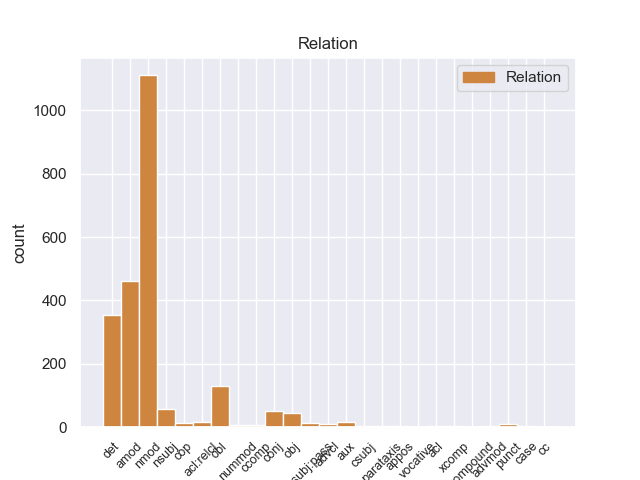
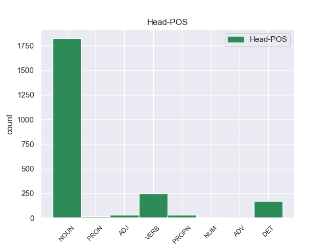
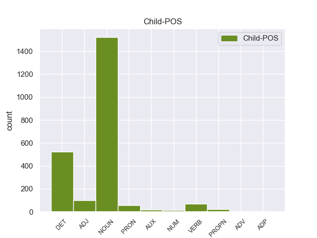

Distribution of features within this leaf



Agreement Rules sorted by frequency.
- When the dependent token is the nominal modifier(nmod) of the head token, and the head token is NOUN and the dependent token is NOUN.
1 Ευελπιστώ _ _ _ _ 0 _ _ _
2 ότι _ _ _ _ 0 _ _ _
3 η _ _ _ _ 0 _ _ _
4 απόφαση _ _ _ _ 0 _ _ _
5 αυτή _ _ _ _ 0 _ _ _
6 , _ _ _ _ 0 _ _ _
7 συμπεριλαμβανομένης _ _ _ _ 0 _ _ _
8 και _ _ _ _ 0 _ _ _
9 της _ _ _ _ 0 _ _ _
10 αιτιολογικής ο NOUN _ Case=Acc|Gender=Fem|Number=Sing 11 nmod _ _
11 έκθεσης έκθεσης NOUN _ Case=Acc|Gender=Fem|Number=Sing 0 _ _ _
12 που _ _ _ _ 0 _ _ _
13 την _ _ _ _ 0 _ _ _
14 συνοδεύει _ _ _ _ 0 _ _ _
15 , _ _ _ _ 0 _ _ _
16 θα _ _ _ _ 0 _ _ _
17 διαβιβαστεί _ _ _ _ 0 _ _ _
18 σ _ _ _ _ 0 _ _ _
19 τις _ _ _ _ 0 _ _ _
20 γαλλικές _ _ _ _ 0 _ _ _
21 αρχές _ _ _ _ 0 _ _ _
22 , _ _ _ _ 0 _ _ _
23 εφόσον _ _ _ _ 0 _ _ _
24 υπερψηφιστεί _ _ _ _ 0 _ _ _
25 από _ _ _ _ 0 _ _ _
26 το _ _ _ _ 0 _ _ _
27 Κοινοβούλιο _ _ _ _ 0 _ _ _
28 . _ _ _ _ 0 _ _ _
1 Υπ' _ _ _ _ 0 _ _ _
2 αυτές _ _ _ _ 0 _ _ _
3 τις _ _ _ _ 0 _ _ _
4 συνθήκες _ _ _ _ 0 _ _ _
5 , _ _ _ _ 0 _ _ _
6 η _ _ _ _ 0 _ _ _
7 Επιτροπή _ _ _ _ 0 _ _ _
8 Νομικών _ _ _ _ 0 _ _ _
9 Θεμάτων _ _ _ _ 0 _ _ _
10 , _ _ _ _ 0 _ _ _
11 της _ _ _ _ 0 _ _ _
12 οποίας _ _ _ _ 0 _ _ _
13 τη _ _ _ _ 0 _ _ _
14 θέση _ _ _ _ 0 _ _ _
15 αποδέχομαι _ _ _ _ 0 _ _ _
16 πλήρως _ _ _ _ 0 _ _ _
17 , _ _ _ _ 0 _ _ _
18 προτείνει _ _ _ _ 0 _ _ _
19 την _ _ _ _ 0 _ _ _
20 απόρριψη απόρριψη NOUN _ Case=Acc|Gender=Fem|Number=Sing 22 amod _ _
21 της _ _ _ _ 0 _ _ _
22 αίτησης ο NOUN _ Case=Acc|Gender=Fem|Number=Sing 0 _ _ _
23 άρσης _ _ _ _ 0 _ _ _
24 της _ _ _ _ 0 _ _ _
25 βουλευτικής _ _ _ _ 0 _ _ _
26 ασυλίας _ _ _ _ 0 _ _ _
27 την _ _ _ _ 0 _ _ _
28 οποία _ _ _ _ 0 _ _ _
29 υπέβαλε _ _ _ _ 0 _ _ _
30 το _ _ _ _ 0 _ _ _
31 γαλλικό _ _ _ _ 0 _ _ _
32 Υπουργείο _ _ _ _ 0 _ _ _
33 Δικαιοσύνης _ _ _ _ 0 _ _ _
34 , _ _ _ _ 0 _ _ _
35 σ _ _ _ _ 0 _ _ _
36 τη _ _ _ _ 0 _ _ _
37 μορφή _ _ _ _ 0 _ _ _
38 υπό _ _ _ _ 0 _ _ _
39 την _ _ _ _ 0 _ _ _
40 οποία _ _ _ _ 0 _ _ _
41 υποβλήθηκε _ _ _ _ 0 _ _ _
42 σ _ _ _ _ 0 _ _ _
43 το _ _ _ _ 0 _ _ _
44 Κοινοβούλιο _ _ _ _ 0 _ _ _
45 . _ _ _ _ 0 _ _ _
1 Η _ _ _ _ 0 _ _ _
2 Αστυνομία _ _ _ _ 0 _ _ _
3 απέκλεισε _ _ _ _ 0 _ _ _
4 την ο DET _ Case=Acc|Definite=Def|Gender=Fem|Number=Sing|PronType=Art 15 det _ _
5 πόλη _ _ _ _ 0 _ _ _
6 με _ _ _ _ 0 _ _ _
7 σκοπό _ _ _ _ 0 _ _ _
8 να _ _ _ _ 0 _ _ _
9 βρεί _ _ _ _ 0 _ _ _
10 τους _ _ _ _ 0 _ _ _
11 κρατούμενους _ _ _ _ 0 _ _ _
12 και _ _ _ _ 0 _ _ _
13 να _ _ _ _ 0 _ _ _
14 τους _ _ _ _ 0 _ _ _
15 ξαναβάλει ξαναβάλει NOUN _ Case=Acc|Gender=Fem|Number=Sing 0 _ _ _
16 σ _ _ _ _ 0 _ _ _
17 τη _ _ _ _ 0 _ _ _
18 φυλακή _ _ _ _ 0 _ _ _
19 » _ _ _ _ 0 _ _ _
20 , _ _ _ _ 0 _ _ _
21 δήλωσε _ _ _ _ 0 _ _ _
22 εκπρόσωπος _ _ _ _ 0 _ _ _
23 των _ _ _ _ 0 _ _ _
24 τοπικών _ _ _ _ 0 _ _ _
25 αρχών _ _ _ _ 0 _ _ _
26 . _ _ _ _ 0 _ _ _
1 Το _ _ _ _ 0 _ _ _
2 άρθρο _ _ _ _ 0 _ _ _
3 9 _ _ _ _ 0 _ _ _
4 του _ _ _ _ 0 _ _ _
5 Πρωτοκόλλου _ _ _ _ 0 _ _ _
6 , _ _ _ _ 0 _ _ _
7 όπως _ _ _ _ 0 _ _ _
8 επεσήμανε _ _ _ _ 0 _ _ _
9 με _ _ _ _ 0 _ _ _
10 αυστηρότητα _ _ _ _ 0 _ _ _
11 η _ _ _ _ 0 _ _ _
12 Πρόεδρος _ _ _ _ 0 _ _ _
13 Fontaine _ _ _ _ 0 _ _ _
14 σ _ _ _ _ 0 _ _ _
15 τον _ _ _ _ 0 _ _ _
16 Εισαγγελέα _ _ _ _ 0 _ _ _
17 , _ _ _ _ 0 _ _ _
18 μας _ _ _ _ 0 _ _ _
19 απαλλάσσει _ _ _ _ 0 _ _ _
20 τελείως _ _ _ _ 0 _ _ _
21 από _ _ _ _ 0 _ _ _
22 οποιαδήποτε _ _ _ _ 0 _ _ _
23 νομική _ _ _ _ 0 _ _ _
24 διαδικασία _ _ _ _ 0 _ _ _
25 σε _ _ _ _ 0 _ _ _
26 σχέση _ _ _ _ 0 _ _ _
27 με _ _ _ _ 0 _ _ _
28 την _ _ _ _ 0 _ _ _
29 έκφραση έκφραση DET _ Case=Acc|Gender=Fem|Number=Sing 35 nmod _ _
30 γνώμης _ _ _ _ 0 _ _ _
31 ή _ _ _ _ 0 _ _ _
32 ψήφου _ _ _ _ 0 _ _ _
33 κατά _ _ _ _ 0 _ _ _
34 την _ _ _ _ 0 _ _ _
35 άσκηση άσκηση NOUN _ Case=Acc|Gender=Fem|Number=Sing 0 _ _ _
36 των _ _ _ _ 0 _ _ _
37 καθηκόντων _ _ _ _ 0 _ _ _
38 μας _ _ _ _ 0 _ _ _
39 ως _ _ _ _ 0 _ _ _
40 μέλη _ _ _ _ 0 _ _ _
41 αυτού _ _ _ _ 0 _ _ _
42 του _ _ _ _ 0 _ _ _
43 Κοινοβουλίου _ _ _ _ 0 _ _ _
44 . _ _ _ _ 0 _ _ _
1 Τόσο _ _ _ _ 0 _ _ _
2 το _ _ _ _ 0 _ _ _
3 ζήτημα _ _ _ _ 0 _ _ _
4 της _ _ _ _ 0 _ _ _
5 ασυλίας _ _ _ _ 0 _ _ _
6 όσο _ _ _ _ 0 _ _ _
7 και _ _ _ _ 0 _ _ _
8 η _ _ _ _ 0 _ _ _
9 αίτηση _ _ _ _ 0 _ _ _
10 για _ _ _ _ 0 _ _ _
11 άρση _ _ _ _ 0 _ _ _
12 της _ _ _ _ 0 _ _ _
13 έχουν _ _ _ _ 0 _ _ _
14 σχέση _ _ _ _ 0 _ _ _
15 μόνο _ _ _ _ 0 _ _ _
16 με _ _ _ _ 0 _ _ _
17 το _ _ _ _ 0 _ _ _
18 εάν _ _ _ _ 0 _ _ _
19 το _ _ _ _ 0 _ _ _
20 Δικαστήριο _ _ _ _ 0 _ _ _
21 μπορεί _ _ _ _ 0 _ _ _
22 να _ _ _ _ 0 _ _ _
23 εκδώσει _ _ _ _ 0 _ _ _
24 δεσμευτικά _ _ _ _ 0 _ _ _
25 βουλεύματα _ _ _ _ 0 _ _ _
26 για _ _ _ _ 0 _ _ _
27 τον _ _ _ _ 0 _ _ _
28 περιορισμό _ _ _ _ 0 _ _ _
29 της _ _ _ _ 0 _ _ _
30 ελεύθερης _ _ _ _ 0 _ _ _
31 μετακίνησης _ _ _ _ 0 _ _ _
32 των _ _ _ _ 0 _ _ _
33 βουλευτών _ _ _ _ 0 _ _ _
34 του _ _ _ _ 0 _ _ _
35 Ευρωπαϊκού _ _ _ _ 0 _ _ _
36 Κοινοβουλίου _ _ _ _ 0 _ _ _
37 ή _ _ _ _ 0 _ _ _
38 την _ _ _ _ 0 _ _ _
39 ελευθερία _ _ _ _ 0 _ _ _
40 τους _ _ _ _ 0 _ _ _
41 να _ _ _ _ 0 _ _ _
42 έρχονται έρχονται DET _ Case=Acc|Gender=Fem|Number=Sing 0 _ _ _
43 σε _ _ _ _ 0 _ _ _
44 επικοινωνία _ _ _ _ 0 _ _ _
45 με _ _ _ _ 0 _ _ _
46 άλλα _ _ _ _ 0 _ _ _
47 πρόσωπα πρόσωπα NOUN _ Case=Acc|Gender=Fem|Number=Sing 42 nmod _ _
48 . _ _ _ _ 0 _ _ _
1 Το _ _ _ _ 0 _ _ _
2 Θαλάσσιο _ _ _ _ 0 _ _ _
3 Πάρκο _ _ _ _ 0 _ _ _
4 Αλοννήσου _ _ _ _ 0 _ _ _
5 είναι _ _ _ _ 0 _ _ _
6 το _ _ _ _ 0 _ _ _
7 πρώτο _ _ _ _ 0 _ _ _
8 σ _ _ _ _ 0 _ _ _
9 την _ _ _ _ 0 _ _ _
10 Ελλάδα _ _ _ _ 0 _ _ _
11 και _ _ _ _ 0 _ _ _
12 το _ _ _ _ 0 _ _ _
13 μεγαλύτερο _ _ _ _ 0 _ _ _
14 σ _ _ _ _ 0 _ _ _
15 την _ _ _ _ 0 _ _ _
16 Ευρώπη _ _ _ _ 0 _ _ _
17 και _ _ _ _ 0 _ _ _
18 τη _ _ _ _ 0 _ _ _
19 Μεσόγειο _ _ _ _ 0 _ _ _
20 , _ _ _ _ 0 _ _ _
21 το _ _ _ _ 0 _ _ _
22 οποίο _ _ _ _ 0 _ _ _
23 φιλοξενεί _ _ _ _ 0 _ _ _
24 τη _ _ _ _ 0 _ _ _
25 μεσογειακή _ _ _ _ 0 _ _ _
26 φώκια _ _ _ _ 0 _ _ _
27 monachus _ _ _ _ 0 _ _ _
28 - _ _ _ _ 0 _ _ _
29 monachus _ _ _ _ 0 _ _ _
30 ένα _ _ _ _ 0 _ _ _
31 είδος _ _ _ _ 0 _ _ _
32 που _ _ _ _ 0 _ _ _
33 εκλείπει _ _ _ _ 0 _ _ _
34 από _ _ _ _ 0 _ _ _
35 τη _ _ _ _ 0 _ _ _
36 Δυτική _ _ _ _ 0 _ _ _
37 Μεσόγειο _ _ _ _ 0 _ _ _
38 ( _ _ _ _ 0 _ _ _
39 εδώ _ _ _ _ 0 _ _ _
40 ο _ _ _ _ 0 _ _ _
41 πληθυσμός _ _ _ _ 0 _ _ _
42 φτάνει _ _ _ _ 0 _ _ _
43 τις _ _ _ _ 0 _ _ _
44 250 _ _ _ _ 0 _ _ _
45 ) _ _ _ _ 0 _ _ _
46 και _ _ _ _ 0 _ _ _
47 άλλα _ _ _ _ 0 _ _ _
48 σπάνια _ _ _ _ 0 _ _ _
49 είδη _ _ _ _ 0 _ _ _
50 χλωρίδας _ _ _ _ 0 _ _ _
51 και _ _ _ _ 0 _ _ _
52 πανίδας _ _ _ _ 0 _ _ _
53 όπως _ _ _ _ 0 _ _ _
54 η _ _ _ _ 0 _ _ _
55 αγριελιά ο ADJ _ Case=Acc|Gender=Fem|Number=Sing 62 amod _ _
56 , _ _ _ _ 0 _ _ _
57 το _ _ _ _ 0 _ _ _
58 θαμνοκυπάρισσο _ _ _ _ 0 _ _ _
59 , _ _ _ _ 0 _ _ _
60 τα _ _ _ _ 0 _ _ _
61 ποσειδώνια _ _ _ _ 0 _ _ _
62 φύκη φύκ NOUN _ Case=Acc|Gender=Fem|Number=Sing 0 _ _ _
63 αλλά _ _ _ _ 0 _ _ _
64 και _ _ _ _ 0 _ _ _
65 το _ _ _ _ 0 _ _ _
66 αγριοκάτσικο _ _ _ _ 0 _ _ _
67 των _ _ _ _ 0 _ _ _
68 Γιούρων _ _ _ _ 0 _ _ _
69 , _ _ _ _ 0 _ _ _
70 το _ _ _ _ 0 _ _ _
71 γεράκι _ _ _ _ 0 _ _ _
72 μαυροπετρίτης _ _ _ _ 0 _ _ _
73 , _ _ _ _ 0 _ _ _
74 τον _ _ _ _ 0 _ _ _
75 αιγόγλαρο _ _ _ _ 0 _ _ _
76 . _ _ _ _ 0 _ _ _
1 πρόκειται _ _ _ _ 0 _ _ _
2 για _ _ _ _ 0 _ _ _
3 αυτό _ _ _ _ 0 _ _ _
4 το _ _ _ _ 0 _ _ _
5 οποίο _ _ _ _ 0 _ _ _
6 αποκαλύφθηκε _ _ _ _ 0 _ _ _
7 κατά _ _ _ _ 0 _ _ _
8 τη _ _ _ _ 0 _ _ _
9 διάρκεια _ _ _ _ 0 _ _ _
10 αυτής _ _ _ _ 0 _ _ _
11 της _ _ _ _ 0 _ _ _
12 διαδικασίας _ _ _ _ 0 _ _ _
13 , _ _ _ _ 0 _ _ _
14 ότι _ _ _ _ 0 _ _ _
15 ο _ _ _ _ 0 _ _ _
16 Εισαγγελέας _ _ _ _ 0 _ _ _
17 κάποια _ _ _ _ 0 _ _ _
18 στιγμή _ _ _ _ 0 _ _ _
19 ζήτησε _ _ _ _ 0 _ _ _
20 από _ _ _ _ 0 _ _ _
21 την _ _ _ _ 0 _ _ _
22 Πρόεδρο _ _ _ _ 0 _ _ _
23 του _ _ _ _ 0 _ _ _
24 Σώματος _ _ _ _ 0 _ _ _
25 , _ _ _ _ 0 _ _ _
26 την _ _ _ _ 0 _ _ _
27 προκάτοχό _ _ _ _ 0 _ _ _
28 σας _ _ _ _ 0 _ _ _
29 , _ _ _ _ 0 _ _ _
30 λεπτομέρειες _ _ _ _ 0 _ _ _
31 για _ _ _ _ 0 _ _ _
32 την _ _ _ _ 0 _ _ _
33 ψήφο ψήφ NOUN _ Case=Acc|Gender=Fem|Number=Sing 0 _ _ _
34 που _ _ _ _ 0 _ _ _
35 έχουν _ _ _ _ 0 _ _ _
36 δώσει _ _ _ _ 0 _ _ _
37 οι _ _ _ _ 0 _ _ _
38 δύο _ _ _ _ 0 _ _ _
39 συγκεκριμένοι _ _ _ _ 0 _ _ _
40 βουλευτές _ _ _ _ 0 _ _ _
41 προκειμένου _ _ _ _ 0 _ _ _
42 να _ _ _ _ 0 _ _ _
43 διευκρινιστεί _ _ _ _ 0 _ _ _
44 περαιτέρω _ _ _ _ 0 _ _ _
45 η _ _ _ _ 0 _ _ _
46 πιθανότητα _ _ _ _ 0 _ _ _
47 να _ _ _ _ 0 _ _ _
48 είχαν _ _ _ _ 0 _ _ _
49 ασκήσει _ _ _ _ 0 _ _ _
50 αθέμιτη ο DET _ Case=Acc|Gender=Fem|Number=Sing 33 amod _ _
51 επιρροή _ _ _ _ 0 _ _ _
52 . _ _ _ _ 0 _ _ _
1 Δεκαεννέα _ _ _ _ 0 _ _ _
2 κρατούμενοι _ _ _ _ 0 _ _ _
3 κατάφεραν _ _ _ _ 0 _ _ _
4 να _ _ _ _ 0 _ _ _
5 αποδράσουν αποδράσουν NOUN _ Case=Acc|Gender=Fem|Number=Sing 0 _ _ _
6 από _ _ _ _ 0 _ _ _
7 φυλακή φυλακή NOUN _ Case=Acc|Gender=Fem|Number=Sing 5 obl _ _
8 του _ _ _ _ 0 _ _ _
9 Κιρκούκ _ _ _ _ 0 _ _ _
10 , _ _ _ _ 0 _ _ _
11 σ _ _ _ _ 0 _ _ _
12 το _ _ _ _ 0 _ _ _
13 Ιράκ _ _ _ _ 0 _ _ _
14 , _ _ _ _ 0 _ _ _
15 αφού _ _ _ _ 0 _ _ _
16 οι _ _ _ _ 0 _ _ _
17 δεσμοφύλακες _ _ _ _ 0 _ _ _
18 έφαγαν _ _ _ _ 0 _ _ _
19 χουρμάδες _ _ _ _ 0 _ _ _
20 με _ _ _ _ 0 _ _ _
21 υπνωτικό _ _ _ _ 0 _ _ _
22 . _ _ _ _ 0 _ _ _
1 Η _ _ _ _ 0 _ _ _
2 εκπαίδευση _ _ _ _ 0 _ _ _
3 και _ _ _ _ 0 _ _ _
4 η _ _ _ _ 0 _ _ _
5 μόρφωση μόρφωση NOUN _ Case=Acc|Gender=Fem|Number=Sing 6 nsubj _ _
6 απέκτησαν απέκτησαν VERB _ Case=Acc|Gender=Fem|Number=Sing 0 _ _ _
7 επιτέλους _ _ _ _ 0 _ _ _
8 προτεραιότητα _ _ _ _ 0 _ _ _
9 σ _ _ _ _ 0 _ _ _
10 την _ _ _ _ 0 _ _ _
11 πολιτική _ _ _ _ 0 _ _ _
12 . _ _ _ _ 0 _ _ _
1 Τόσο _ _ _ _ 0 _ _ _
2 το _ _ _ _ 0 _ _ _
3 ζήτημα _ _ _ _ 0 _ _ _
4 της _ _ _ _ 0 _ _ _
5 ασυλίας _ _ _ _ 0 _ _ _
6 όσο _ _ _ _ 0 _ _ _
7 και _ _ _ _ 0 _ _ _
8 η _ _ _ _ 0 _ _ _
9 αίτηση _ _ _ _ 0 _ _ _
10 για _ _ _ _ 0 _ _ _
11 άρση _ _ _ _ 0 _ _ _
12 της _ _ _ _ 0 _ _ _
13 έχουν _ _ _ _ 0 _ _ _
14 σχέση _ _ _ _ 0 _ _ _
15 μόνο _ _ _ _ 0 _ _ _
16 με _ _ _ _ 0 _ _ _
17 το _ _ _ _ 0 _ _ _
18 εάν _ _ _ _ 0 _ _ _
19 το _ _ _ _ 0 _ _ _
20 Δικαστήριο _ _ _ _ 0 _ _ _
21 μπορεί _ _ _ _ 0 _ _ _
22 να _ _ _ _ 0 _ _ _
23 εκδώσει _ _ _ _ 0 _ _ _
24 δεσμευτικά _ _ _ _ 0 _ _ _
25 βουλεύματα _ _ _ _ 0 _ _ _
26 για _ _ _ _ 0 _ _ _
27 τον _ _ _ _ 0 _ _ _
28 περιορισμό _ _ _ _ 0 _ _ _
29 της _ _ _ _ 0 _ _ _
30 ελεύθερης _ _ _ _ 0 _ _ _
31 μετακίνησης _ _ _ _ 0 _ _ _
32 των _ _ _ _ 0 _ _ _
33 βουλευτών _ _ _ _ 0 _ _ _
34 του _ _ _ _ 0 _ _ _
35 Ευρωπαϊκού _ _ _ _ 0 _ _ _
36 Κοινοβουλίου _ _ _ _ 0 _ _ _
37 ή _ _ _ _ 0 _ _ _
38 την _ _ _ _ 0 _ _ _
39 ελευθερία _ _ _ _ 0 _ _ _
40 τους _ _ _ _ 0 _ _ _
41 να _ _ _ _ 0 _ _ _
42 έρχονται έρχονται DET _ Case=Acc|Gender=Fem|Number=Sing 0 _ _ _
43 σε _ _ _ _ 0 _ _ _
44 επικοινωνία επικοινωνία NOUN _ Case=Acc|Gender=Fem|Number=Sing 42 amod _ _
45 με _ _ _ _ 0 _ _ _
46 άλλα _ _ _ _ 0 _ _ _
47 πρόσωπα _ _ _ _ 0 _ _ _
48 . _ _ _ _ 0 _ _ _
1 Δεκάδες _ _ _ _ 0 _ _ _
2 χιλιάδες _ _ _ _ 0 _ _ _
3 πολίτες _ _ _ _ 0 _ _ _
4 έμειναν _ _ _ _ 0 _ _ _
5 χωρίς _ _ _ _ 0 _ _ _
6 ηλεκτρικό _ _ _ _ 0 _ _ _
7 ρεύμα _ _ _ _ 0 _ _ _
8 την ο DET DET Case=Acc|Definite=Def|Gender=Fem|Number=Sing|PronType=Art 9 det _ _
9 Τρίτη Τρίτη PROPN PROPN Case=Acc|Gender=Fem|Number=Sing 0 _ _ _
10 , _ _ _ _ 0 _ _ _
11 ενώ _ _ _ _ 0 _ _ _
12 τα _ _ _ _ 0 _ _ _
13 σωστικά _ _ _ _ 0 _ _ _
14 συνεργεία _ _ _ _ 0 _ _ _
15 έδιναν _ _ _ _ 0 _ _ _
16 μάχη _ _ _ _ 0 _ _ _
17 με _ _ _ _ 0 _ _ _
18 τον _ _ _ _ 0 _ _ _
19 χρόνο _ _ _ _ 0 _ _ _
20 για _ _ _ _ 0 _ _ _
21 τη _ _ _ _ 0 _ _ _
22 διάσωση _ _ _ _ 0 _ _ _
23 ανθρώπων _ _ _ _ 0 _ _ _
24 . _ _ _ _ 0 _ _ _
1 Ο _ _ _ _ 0 _ _ _
2 πρόεδρος _ _ _ _ 0 _ _ _
3 Ομπάμα _ _ _ _ 0 _ _ _
4 εξέφρασε _ _ _ _ 0 _ _ _
5 τα _ _ _ _ 0 _ _ _
6 συλλυπητήριά _ _ _ _ 0 _ _ _
7 του _ _ _ _ 0 _ _ _
8 προς _ _ _ _ 0 _ _ _
9 τα _ _ _ _ 0 _ _ _
10 θύματα _ _ _ _ 0 _ _ _
11 , _ _ _ _ 0 _ _ _
12 ενώ _ _ _ _ 0 _ _ _
13 δεσμεύτηκε _ _ _ _ 0 _ _ _
14 ότι _ _ _ _ 0 _ _ _
15 η _ _ _ _ 0 _ _ _
16 κυβέρνηση _ _ _ _ 0 _ _ _
17 θα _ _ _ _ 0 _ _ _
18 βοηθήσει _ _ _ _ 0 _ _ _
19 τους _ _ _ _ 0 _ _ _
20 πληγέντες _ _ _ _ 0 _ _ _
21 να _ _ _ _ 0 _ _ _
22 ανακτήσουν _ _ _ _ 0 _ _ _
23 τις _ _ _ _ 0 _ _ _
24 δυνάμεις _ _ _ _ 0 _ _ _
25 τους _ _ _ _ 0 _ _ _
26 και _ _ _ _ 0 _ _ _
27 να _ _ _ _ 0 _ _ _
28 αποκαταστήσουν ο VERB _ Case=Acc|Gender=Fem|Number=Sing 0 _ _ _
29 τις _ _ _ _ 0 _ _ _
30 ζημιές ζημιές NOUN _ Case=Acc|Gender=Fem|Number=Sing 28 obj _ _
31 . _ _ _ _ 0 _ _ _
1 Η _ _ _ _ 0 _ _ _
2 εν _ _ _ _ 0 _ _ _
3 λόγω _ _ _ _ 0 _ _ _
4 κοινοποίηση _ _ _ _ 0 _ _ _
5 διαβιβάστηκε _ _ _ _ 0 _ _ _
6 αρχικά _ _ _ _ 0 _ _ _
7 σ _ _ _ _ 0 _ _ _
8 τον _ _ _ _ 0 _ _ _
9 Εισαγγελέα _ _ _ _ 0 _ _ _
10 Πλημμελειοδικών _ _ _ _ 0 _ _ _
11 , _ _ _ _ 0 _ _ _
12 κατόπιν _ _ _ _ 0 _ _ _
13 σ _ _ _ _ 0 _ _ _
14 τον _ _ _ _ 0 _ _ _
15 Εισαγγελέα _ _ _ _ 0 _ _ _
16 Εφετών _ _ _ _ 0 _ _ _
17 του _ _ _ _ 0 _ _ _
18 Παρισιού _ _ _ _ 0 _ _ _
19 , _ _ _ _ 0 _ _ _
20 ο _ _ _ _ 0 _ _ _
21 οποίος _ _ _ _ 0 _ _ _
22 και _ _ _ _ 0 _ _ _
23 την _ _ _ _ 0 _ _ _
24 απέστειλε απέστειλε VERB _ Case=Acc|Gender=Fem|Number=Sing 0 _ _ _
25 σ _ _ _ _ 0 _ _ _
26 τον _ _ _ _ 0 _ _ _
27 Υπουργό υπουργ NOUN _ Case=Acc|Gender=Fem|Number=Sing 24 obl _ _
28 Δικαιοσύνης _ _ _ _ 0 _ _ _
29 και _ _ _ _ 0 _ _ _
30 μέσω _ _ _ _ 0 _ _ _
31 αυτού _ _ _ _ 0 _ _ _
32 διαβιβάστηκε _ _ _ _ 0 _ _ _
33 σ _ _ _ _ 0 _ _ _
34 το _ _ _ _ 0 _ _ _
35 Ευρωπαϊκό _ _ _ _ 0 _ _ _
36 Κοινοβούλιο _ _ _ _ 0 _ _ _
37 . _ _ _ _ 0 _ _ _
1 Υπάρχει _ _ _ _ 0 _ _ _
2 μια _ _ _ _ 0 _ _ _
3 άλλη άλλος PRON PRON Case=Nom|Gender=Fem|Number=Sing|Person=3|PronType=Ind 4 det _ _
4 πλευρά πλευρά NOUN NOUN Case=Nom|Gender=Fem|Number=Sing 0 _ _ _
5 της _ _ _ _ 0 _ _ _
6 υπόθεσης _ _ _ _ 0 _ _ _
7 , _ _ _ _ 0 _ _ _
8 η _ _ _ _ 0 _ _ _
9 οποία _ _ _ _ 0 _ _ _
10 , _ _ _ _ 0 _ _ _
11 δυστυχώς _ _ _ _ 0 _ _ _
12 , _ _ _ _ 0 _ _ _
13 γεννά _ _ _ _ 0 _ _ _
14 την _ _ _ _ 0 _ _ _
15 υποψία _ _ _ _ 0 _ _ _
16 ότι _ _ _ _ 0 _ _ _
17 η _ _ _ _ 0 _ _ _
18 πρόνοια _ _ _ _ 0 _ _ _
19 σχετικά _ _ _ _ 0 _ _ _
20 με _ _ _ _ 0 _ _ _
21 τις _ _ _ _ 0 _ _ _
22 προϋποθέσεις _ _ _ _ 0 _ _ _
23 ελεύθερης _ _ _ _ 0 _ _ _
24 διεξαγωγής _ _ _ _ 0 _ _ _
25 του _ _ _ _ 0 _ _ _
26 κοινοβουλευτικού _ _ _ _ 0 _ _ _
27 έργου _ _ _ _ 0 _ _ _
28 δεν _ _ _ _ 0 _ _ _
29 απασχόλησε _ _ _ _ 0 _ _ _
30 επαρκώς _ _ _ _ 0 _ _ _
31 την _ _ _ _ 0 _ _ _
32 εισαγγελική _ _ _ _ 0 _ _ _
33 αρχή _ _ _ _ 0 _ _ _
34 : _ _ _ _ 0 _ _ _
1 Υπ' _ _ _ _ 0 _ _ _
2 αυτές _ _ _ _ 0 _ _ _
3 τις _ _ _ _ 0 _ _ _
4 συνθήκες _ _ _ _ 0 _ _ _
5 , _ _ _ _ 0 _ _ _
6 η _ _ _ _ 0 _ _ _
7 Επιτροπή _ _ _ _ 0 _ _ _
8 Νομικών _ _ _ _ 0 _ _ _
9 Θεμάτων _ _ _ _ 0 _ _ _
10 , _ _ _ _ 0 _ _ _
11 της _ _ _ _ 0 _ _ _
12 οποίας _ _ _ _ 0 _ _ _
13 τη _ _ _ _ 0 _ _ _
14 θέση _ _ _ _ 0 _ _ _
15 αποδέχομαι ο NOUN _ Case=Acc|Gender=Fem|Number=Sing 0 _ _ _
16 πλήρως _ _ _ _ 0 _ _ _
17 , _ _ _ _ 0 _ _ _
18 προτείνει _ _ _ _ 0 _ _ _
19 την _ _ _ _ 0 _ _ _
20 απόρριψη _ _ _ _ 0 _ _ _
21 της _ _ _ _ 0 _ _ _
22 αίτησης _ _ _ _ 0 _ _ _
23 άρσης _ _ _ _ 0 _ _ _
24 της _ _ _ _ 0 _ _ _
25 βουλευτικής _ _ _ _ 0 _ _ _
26 ασυλίας _ _ _ _ 0 _ _ _
27 την _ _ _ _ 0 _ _ _
28 οποία _ _ _ _ 0 _ _ _
29 υπέβαλε _ _ _ _ 0 _ _ _
30 το _ _ _ _ 0 _ _ _
31 γαλλικό _ _ _ _ 0 _ _ _
32 Υπουργείο _ _ _ _ 0 _ _ _
33 Δικαιοσύνης _ _ _ _ 0 _ _ _
34 , _ _ _ _ 0 _ _ _
35 σ _ _ _ _ 0 _ _ _
36 τη _ _ _ _ 0 _ _ _
37 μορφή _ _ _ _ 0 _ _ _
38 υπό _ _ _ _ 0 _ _ _
39 την _ _ _ _ 0 _ _ _
40 οποία _ _ _ _ 0 _ _ _
41 υποβλήθηκε υποβλήθηκε NOUN _ Case=Acc|Gender=Fem|Number=Sing 15 conj _ _
42 σ _ _ _ _ 0 _ _ _
43 το _ _ _ _ 0 _ _ _
44 Κοινοβούλιο _ _ _ _ 0 _ _ _
45 . _ _ _ _ 0 _ _ _
1 Εδώ _ _ _ _ 0 _ _ _
2 και _ _ _ _ 0 _ _ _
3 ενάμισι _ _ _ _ 0 _ _ _
4 χρόνο _ _ _ _ 0 _ _ _
5 κοιτάζουμε _ _ _ _ 0 _ _ _
6 άπραγοι _ _ _ _ 0 _ _ _
7 τον _ _ _ _ 0 _ _ _
8 εντελώς _ _ _ _ 0 _ _ _
9 άνισο άνισο ADJ _ Case=Acc|Gender=Fem|Number=Sing 30 nmod _ _
10 πόλεμο _ _ _ _ 0 _ _ _
11 που _ _ _ _ 0 _ _ _
12 διεξάγουν _ _ _ _ 0 _ _ _
13 αυτοί _ _ _ _ 0 _ _ _
14 οι _ _ _ _ 0 _ _ _
15 δύο _ _ _ _ 0 _ _ _
16 αντίπαλοι _ _ _ _ 0 _ _ _
17 μεταξύ _ _ _ _ 0 _ _ _
18 τους _ _ _ _ 0 _ _ _
19 , _ _ _ _ 0 _ _ _
20 κοιτάζουμε _ _ _ _ 0 _ _ _
21 τα _ _ _ _ 0 _ _ _
22 τανκς _ _ _ _ 0 _ _ _
23 των _ _ _ _ 0 _ _ _
24 Ισραηλινών _ _ _ _ 0 _ _ _
25 να _ _ _ _ 0 _ _ _
26 καταστρέφουν _ _ _ _ 0 _ _ _
27 σπίτια _ _ _ _ 0 _ _ _
28 και _ _ _ _ 0 _ _ _
29 να _ _ _ _ 0 _ _ _
30 σκοτώνουν σκοτώνουν NOUN _ Case=Acc|Gender=Fem|Number=Sing 0 _ _ _
31 παλαιστίνιους _ _ _ _ 0 _ _ _
32 πολίτες _ _ _ _ 0 _ _ _
33 . _ _ _ _ 0 _ _ _
1 Τόσο _ _ _ _ 0 _ _ _
2 το _ _ _ _ 0 _ _ _
3 ζήτημα _ _ _ _ 0 _ _ _
4 της _ _ _ _ 0 _ _ _
5 ασυλίας _ _ _ _ 0 _ _ _
6 όσο _ _ _ _ 0 _ _ _
7 και _ _ _ _ 0 _ _ _
8 η _ _ _ _ 0 _ _ _
9 αίτηση _ _ _ _ 0 _ _ _
10 για _ _ _ _ 0 _ _ _
11 άρση _ _ _ _ 0 _ _ _
12 της _ _ _ _ 0 _ _ _
13 έχουν _ _ _ _ 0 _ _ _
14 σχέση _ _ _ _ 0 _ _ _
15 μόνο _ _ _ _ 0 _ _ _
16 με _ _ _ _ 0 _ _ _
17 το _ _ _ _ 0 _ _ _
18 εάν _ _ _ _ 0 _ _ _
19 το _ _ _ _ 0 _ _ _
20 Δικαστήριο _ _ _ _ 0 _ _ _
21 μπορεί _ _ _ _ 0 _ _ _
22 να _ _ _ _ 0 _ _ _
23 εκδώσει _ _ _ _ 0 _ _ _
24 δεσμευτικά _ _ _ _ 0 _ _ _
25 βουλεύματα _ _ _ _ 0 _ _ _
26 για _ _ _ _ 0 _ _ _
27 τον _ _ _ _ 0 _ _ _
28 περιορισμό _ _ _ _ 0 _ _ _
29 της _ _ _ _ 0 _ _ _
30 ελεύθερης _ _ _ _ 0 _ _ _
31 μετακίνησης μετακίνησης NOUN _ Case=Acc|Gender=Fem|Number=Sing 42 obl _ _
32 των _ _ _ _ 0 _ _ _
33 βουλευτών _ _ _ _ 0 _ _ _
34 του _ _ _ _ 0 _ _ _
35 Ευρωπαϊκού _ _ _ _ 0 _ _ _
36 Κοινοβουλίου _ _ _ _ 0 _ _ _
37 ή _ _ _ _ 0 _ _ _
38 την _ _ _ _ 0 _ _ _
39 ελευθερία _ _ _ _ 0 _ _ _
40 τους _ _ _ _ 0 _ _ _
41 να _ _ _ _ 0 _ _ _
42 έρχονται έρχονται DET _ Case=Acc|Gender=Fem|Number=Sing 0 _ _ _
43 σε _ _ _ _ 0 _ _ _
44 επικοινωνία _ _ _ _ 0 _ _ _
45 με _ _ _ _ 0 _ _ _
46 άλλα _ _ _ _ 0 _ _ _
47 πρόσωπα _ _ _ _ 0 _ _ _
48 . _ _ _ _ 0 _ _ _
1 Πρόκειται _ _ _ _ 0 _ _ _
2 για _ _ _ _ 0 _ _ _
3 την _ _ _ _ 0 _ _ _
4 επίτευξη επίτευξης VERB _ Case=Acc|Gender=Fem|Number=Sing 0 _ _ _
5 θετικής _ _ _ _ 0 _ _ _
6 δήλωσης _ _ _ _ 0 _ _ _
7 αξιοπιστίας ο NOUN _ Case=Acc|Gender=Fem|Number=Sing 4 nmod _ _
8 για _ _ _ _ 0 _ _ _
9 το _ _ _ _ 0 _ _ _
10 οικονομικό _ _ _ _ 0 _ _ _
11 έτος _ _ _ _ 0 _ _ _
12 2003 _ _ _ _ 0 _ _ _
13 . _ _ _ _ 0 _ _ _
1 Η _ _ _ _ 0 _ _ _
2 εν _ _ _ _ 0 _ _ _
3 λόγω _ _ _ _ 0 _ _ _
4 κοινοποίηση _ _ _ _ 0 _ _ _
5 διαβιβάστηκε _ _ _ _ 0 _ _ _
6 αρχικά _ _ _ _ 0 _ _ _
7 σ _ _ _ _ 0 _ _ _
8 τον _ _ _ _ 0 _ _ _
9 Εισαγγελέα _ _ _ _ 0 _ _ _
10 Πλημμελειοδικών _ _ _ _ 0 _ _ _
11 , _ _ _ _ 0 _ _ _
12 κατόπιν _ _ _ _ 0 _ _ _
13 σ _ _ _ _ 0 _ _ _
14 τον _ _ _ _ 0 _ _ _
15 Εισαγγελέα _ _ _ _ 0 _ _ _
16 Εφετών _ _ _ _ 0 _ _ _
17 του _ _ _ _ 0 _ _ _
18 Παρισιού _ _ _ _ 0 _ _ _
19 , _ _ _ _ 0 _ _ _
20 ο _ _ _ _ 0 _ _ _
21 οποίος _ _ _ _ 0 _ _ _
22 και _ _ _ _ 0 _ _ _
23 την _ _ _ _ 0 _ _ _
24 απέστειλε απέστειλε VERB _ Case=Acc|Gender=Fem|Number=Sing 0 _ _ _
25 σ _ _ _ _ 0 _ _ _
26 τον _ _ _ _ 0 _ _ _
27 Υπουργό _ _ _ _ 0 _ _ _
28 Δικαιοσύνης _ _ _ _ 0 _ _ _
29 και _ _ _ _ 0 _ _ _
30 μέσω _ _ _ _ 0 _ _ _
31 αυτού _ _ _ _ 0 _ _ _
32 διαβιβάστηκε _ _ _ _ 0 _ _ _
33 σ _ _ _ _ 0 _ _ _
34 το _ _ _ _ 0 _ _ _
35 Ευρωπαϊκό ευρωπαϊκός NOUN _ Case=Acc|Gender=Fem|Number=Sing 24 amod _ _
36 Κοινοβούλιο _ _ _ _ 0 _ _ _
37 . _ _ _ _ 0 _ _ _
1 Υπάρχει _ _ _ _ 0 _ _ _
2 μια _ _ _ _ 0 _ _ _
3 άλλη _ _ _ _ 0 _ _ _
4 πλευρά πλευρά NOUN NOUN Case=Nom|Gender=Fem|Number=Sing 0 _ _ _
5 της _ _ _ _ 0 _ _ _
6 υπόθεσης _ _ _ _ 0 _ _ _
7 , _ _ _ _ 0 _ _ _
8 η _ _ _ _ 0 _ _ _
9 οποία _ _ _ _ 0 _ _ _
10 , _ _ _ _ 0 _ _ _
11 δυστυχώς _ _ _ _ 0 _ _ _
12 , _ _ _ _ 0 _ _ _
13 γεννά γεννώ VERB VERB Aspect=Imp|Mood=Ind|Number=Sing|Person=3|Tense=Pres|VerbForm=Fin|Voice=Act 4 acl:relcl _ _
14 την _ _ _ _ 0 _ _ _
15 υποψία _ _ _ _ 0 _ _ _
16 ότι _ _ _ _ 0 _ _ _
17 η _ _ _ _ 0 _ _ _
18 πρόνοια _ _ _ _ 0 _ _ _
19 σχετικά _ _ _ _ 0 _ _ _
20 με _ _ _ _ 0 _ _ _
21 τις _ _ _ _ 0 _ _ _
22 προϋποθέσεις _ _ _ _ 0 _ _ _
23 ελεύθερης _ _ _ _ 0 _ _ _
24 διεξαγωγής _ _ _ _ 0 _ _ _
25 του _ _ _ _ 0 _ _ _
26 κοινοβουλευτικού _ _ _ _ 0 _ _ _
27 έργου _ _ _ _ 0 _ _ _
28 δεν _ _ _ _ 0 _ _ _
29 απασχόλησε _ _ _ _ 0 _ _ _
30 επαρκώς _ _ _ _ 0 _ _ _
31 την _ _ _ _ 0 _ _ _
32 εισαγγελική _ _ _ _ 0 _ _ _
33 αρχή _ _ _ _ 0 _ _ _
34 : _ _ _ _ 0 _ _ _
1 Η _ _ _ _ 0 _ _ _
2 Αστυνομία _ _ _ _ 0 _ _ _
3 απέκλεισε απέκλεισε VERB _ Case=Acc|Gender=Fem|Number=Sing 15 nmod _ _
4 την _ _ _ _ 0 _ _ _
5 πόλη _ _ _ _ 0 _ _ _
6 με _ _ _ _ 0 _ _ _
7 σκοπό _ _ _ _ 0 _ _ _
8 να _ _ _ _ 0 _ _ _
9 βρεί _ _ _ _ 0 _ _ _
10 τους _ _ _ _ 0 _ _ _
11 κρατούμενους _ _ _ _ 0 _ _ _
12 και _ _ _ _ 0 _ _ _
13 να _ _ _ _ 0 _ _ _
14 τους _ _ _ _ 0 _ _ _
15 ξαναβάλει ξαναβάλει NOUN _ Case=Acc|Gender=Fem|Number=Sing 0 _ _ _
16 σ _ _ _ _ 0 _ _ _
17 τη _ _ _ _ 0 _ _ _
18 φυλακή _ _ _ _ 0 _ _ _
19 » _ _ _ _ 0 _ _ _
20 , _ _ _ _ 0 _ _ _
21 δήλωσε _ _ _ _ 0 _ _ _
22 εκπρόσωπος _ _ _ _ 0 _ _ _
23 των _ _ _ _ 0 _ _ _
24 τοπικών _ _ _ _ 0 _ _ _
25 αρχών _ _ _ _ 0 _ _ _
26 . _ _ _ _ 0 _ _ _
1 Έχουμε _ _ _ _ 0 _ _ _
2 την _ _ _ _ 0 _ _ _
3 απαρέγκλιτη _ _ _ _ 0 _ _ _
4 αρχή _ _ _ _ 0 _ _ _
5 να _ _ _ _ 0 _ _ _
6 μην _ _ _ _ 0 _ _ _
7 διαμορφώνουμε διαμορφώνω VERB VERB Aspect=Imp|Mood=Ind|Number=Plur|Person=1|Tense=Pres|VerbForm=Fin|Voice=Act 0 _ _ _
8 οποιαδήποτε _ _ _ _ 0 _ _ _
9 γνώμη _ _ _ _ 0 _ _ _
10 σχετικά _ _ _ _ 0 _ _ _
11 με _ _ _ _ 0 _ _ _
12 την _ _ _ _ 0 _ _ _
13 ουσία _ _ _ _ 0 _ _ _
14 των _ _ _ _ 0 _ _ _
15 κατηγοριών _ _ _ _ 0 _ _ _
16 , _ _ _ _ 0 _ _ _
17 αλλά _ _ _ _ 0 _ _ _
18 να _ _ _ _ 0 _ _ _
19 θεωρούμε θεωρώ VERB VERB Aspect=Imp|Mood=Ind|Number=Plur|Person=1|Tense=Pres|VerbForm=Fin|Voice=Act 7 conj _ _
20 ότι _ _ _ _ 0 _ _ _
21 οι _ _ _ _ 0 _ _ _
22 βουλευτές _ _ _ _ 0 _ _ _
23 απολαύουν _ _ _ _ 0 _ _ _
24 του _ _ _ _ 0 _ _ _
25 τεκμηρίου _ _ _ _ 0 _ _ _
26 της _ _ _ _ 0 _ _ _
27 αθωότητας _ _ _ _ 0 _ _ _
28 . _ _ _ _ 0 _ _ _
1 Υπάρχει _ _ _ _ 0 _ _ _
2 μια _ _ _ _ 0 _ _ _
3 άλλη _ _ _ _ 0 _ _ _
4 πλευρά _ _ _ _ 0 _ _ _
5 της _ _ _ _ 0 _ _ _
6 υπόθεσης _ _ _ _ 0 _ _ _
7 , _ _ _ _ 0 _ _ _
8 η ο DET DET Case=Nom|Definite=Def|Gender=Fem|Number=Sing|PronType=Art 9 det _ _
9 οποία οποίος PRON PRON Case=Nom|Gender=Fem|Number=Sing|Person=3|PronType=Rel 0 _ _ _
10 , _ _ _ _ 0 _ _ _
11 δυστυχώς _ _ _ _ 0 _ _ _
12 , _ _ _ _ 0 _ _ _
13 γεννά _ _ _ _ 0 _ _ _
14 την _ _ _ _ 0 _ _ _
15 υποψία _ _ _ _ 0 _ _ _
16 ότι _ _ _ _ 0 _ _ _
17 η _ _ _ _ 0 _ _ _
18 πρόνοια _ _ _ _ 0 _ _ _
19 σχετικά _ _ _ _ 0 _ _ _
20 με _ _ _ _ 0 _ _ _
21 τις _ _ _ _ 0 _ _ _
22 προϋποθέσεις _ _ _ _ 0 _ _ _
23 ελεύθερης _ _ _ _ 0 _ _ _
24 διεξαγωγής _ _ _ _ 0 _ _ _
25 του _ _ _ _ 0 _ _ _
26 κοινοβουλευτικού _ _ _ _ 0 _ _ _
27 έργου _ _ _ _ 0 _ _ _
28 δεν _ _ _ _ 0 _ _ _
29 απασχόλησε _ _ _ _ 0 _ _ _
30 επαρκώς _ _ _ _ 0 _ _ _
31 την _ _ _ _ 0 _ _ _
32 εισαγγελική _ _ _ _ 0 _ _ _
33 αρχή _ _ _ _ 0 _ _ _
34 : _ _ _ _ 0 _ _ _
1 Είναι είμαι AUX AUX Aspect=Imp|Mood=Ind|Number=Sing|Person=3|Tense=Pres|VerbForm=Fin|Voice=Pass 2 cop _ _
2 γνωστή γνωστός ADJ ADJ Case=Nom|Gender=Fem|Number=Sing 0 _ _ _
3 και _ _ _ _ 0 _ _ _
4 με _ _ _ _ 0 _ _ _
5 το _ _ _ _ 0 _ _ _
6 όνομα _ _ _ _ 0 _ _ _
7 " _ _ _ _ 0 _ _ _
8 Χρυσή _ _ _ _ 0 _ _ _
9 Άμμος _ _ _ _ 0 _ _ _
10 " _ _ _ _ 0 _ _ _
11 . _ _ _ _ 0 _ _ _
1 Υπάρχει _ _ _ _ 0 _ _ _
2 μια _ _ _ _ 0 _ _ _
3 άλλη _ _ _ _ 0 _ _ _
4 πλευρά _ _ _ _ 0 _ _ _
5 της _ _ _ _ 0 _ _ _
6 υπόθεσης _ _ _ _ 0 _ _ _
7 , _ _ _ _ 0 _ _ _
8 η _ _ _ _ 0 _ _ _
9 οποία οποίος PRON PRON Case=Nom|Gender=Fem|Number=Sing|Person=3|PronType=Rel 13 nsubj _ SpaceAfter=No
10 , _ _ _ _ 0 _ _ _
11 δυστυχώς _ _ _ _ 0 _ _ _
12 , _ _ _ _ 0 _ _ _
13 γεννά γεννώ VERB VERB Aspect=Imp|Mood=Ind|Number=Sing|Person=3|Tense=Pres|VerbForm=Fin|Voice=Act 0 _ _ _
14 την _ _ _ _ 0 _ _ _
15 υποψία _ _ _ _ 0 _ _ _
16 ότι _ _ _ _ 0 _ _ _
17 η _ _ _ _ 0 _ _ _
18 πρόνοια _ _ _ _ 0 _ _ _
19 σχετικά _ _ _ _ 0 _ _ _
20 με _ _ _ _ 0 _ _ _
21 τις _ _ _ _ 0 _ _ _
22 προϋποθέσεις _ _ _ _ 0 _ _ _
23 ελεύθερης _ _ _ _ 0 _ _ _
24 διεξαγωγής _ _ _ _ 0 _ _ _
25 του _ _ _ _ 0 _ _ _
26 κοινοβουλευτικού _ _ _ _ 0 _ _ _
27 έργου _ _ _ _ 0 _ _ _
28 δεν _ _ _ _ 0 _ _ _
29 απασχόλησε _ _ _ _ 0 _ _ _
30 επαρκώς _ _ _ _ 0 _ _ _
31 την _ _ _ _ 0 _ _ _
32 εισαγγελική _ _ _ _ 0 _ _ _
33 αρχή _ _ _ _ 0 _ _ _
34 : _ _ _ _ 0 _ _ _
1 Τα _ _ _ _ 0 _ _ _
2 εγκλήματα _ _ _ _ 0 _ _ _
3 είναι _ _ _ _ 0 _ _ _
4 σοβαρά _ _ _ _ 0 _ _ _
5 και _ _ _ _ 0 _ _ _
6 ανήκουν _ _ _ _ 0 _ _ _
7 σε _ _ _ _ 0 _ _ _
8 μια _ _ _ _ 0 _ _ _
9 κατηγορία _ _ _ _ 0 _ _ _
10 για _ _ _ _ 0 _ _ _
11 την _ _ _ _ 0 _ _ _
12 οποία _ _ _ _ 0 _ _ _
13 κανονικά _ _ _ _ 0 _ _ _
14 δεν δεν DET _ Case=Acc|Gender=Fem|Number=Sing 15 aux _ _
15 προσφέρεται προσφέρεται NOUN _ Case=Acc|Gender=Fem|Number=Sing 0 _ _ _
16 βουλευτική _ _ _ _ 0 _ _ _
17 ασυλία _ _ _ _ 0 _ _ _
18 , _ _ _ _ 0 _ _ _
19 επειδή _ _ _ _ 0 _ _ _
20 δεν _ _ _ _ 0 _ _ _
21 αφορούν _ _ _ _ 0 _ _ _
22 τις _ _ _ _ 0 _ _ _
23 συνήθεις _ _ _ _ 0 _ _ _
24 και _ _ _ _ 0 _ _ _
25 προσήκουσες _ _ _ _ 0 _ _ _
26 δραστηριότητες _ _ _ _ 0 _ _ _
27 βουλευτή _ _ _ _ 0 _ _ _
28 του _ _ _ _ 0 _ _ _
29 Σώματος _ _ _ _ 0 _ _ _
30 , _ _ _ _ 0 _ _ _
31 ή _ _ _ _ 0 _ _ _
32 πολιτικού _ _ _ _ 0 _ _ _
33 που _ _ _ _ 0 _ _ _
34 δραστηριοποιείται _ _ _ _ 0 _ _ _
35 σε _ _ _ _ 0 _ _ _
36 μια _ _ _ _ 0 _ _ _
37 δημοκρατική _ _ _ _ 0 _ _ _
38 κοινωνία _ _ _ _ 0 _ _ _
39 . _ _ _ _ 0 _ _ _
1 Πρέπει _ _ _ _ 0 _ _ _
2 να _ _ _ _ 0 _ _ _
3 επισημανθεί _ _ _ _ 0 _ _ _
4 ότι _ _ _ _ 0 _ _ _
5 ο _ _ _ _ 0 _ _ _
6 Εισαγγελέας _ _ _ _ 0 _ _ _
7 Πλημμελειοδικών _ _ _ _ 0 _ _ _
8 υποστήριξε _ _ _ _ 0 _ _ _
9 σθεναρά _ _ _ _ 0 _ _ _
10 την _ _ _ _ 0 _ _ _
11 αίτηση _ _ _ _ 0 _ _ _
12 επιβολής _ _ _ _ 0 _ _ _
13 μέτρων _ _ _ _ 0 _ _ _
14 δικαστικής _ _ _ _ 0 _ _ _
15 επιτήρησης _ _ _ _ 0 _ _ _
16 που _ _ _ _ 0 _ _ _
17 υπέβαλαν _ _ _ _ 0 _ _ _
18 οι _ _ _ _ 0 _ _ _
19 ανακριτές _ _ _ _ 0 _ _ _
20 , _ _ _ _ 0 _ _ _
21 υπογραμμίζοντας _ _ _ _ 0 _ _ _
22 τη _ _ _ _ 0 _ _ _
23 σοβαρότητα _ _ _ _ 0 _ _ _
24 και _ _ _ _ 0 _ _ _
25 τη _ _ _ _ 0 _ _ _
26 φύση _ _ _ _ 0 _ _ _
27 της _ _ _ _ 0 _ _ _
28 υπόθεσης _ _ _ _ 0 _ _ _
29 και _ _ _ _ 0 _ _ _
30 χαρακτηρίζοντας _ _ _ _ 0 _ _ _
31 μάλιστα _ _ _ _ 0 _ _ _
32 την _ _ _ _ 0 _ _ _
33 αίτηση ο DET _ Case=Acc|Gender=Fem|Number=Sing 0 _ _ _
34 αυτή _ _ _ _ 0 _ _ _
35 ως _ _ _ _ 0 _ _ _
36 απαραίτητη ο DET _ Case=Acc|Gender=Fem|Number=Sing 33 nmod _ _
37 επί _ _ _ _ 0 _ _ _
38 της _ _ _ _ 0 _ _ _
39 αρχής _ _ _ _ 0 _ _ _
40 . _ _ _ _ 0 _ _ _
1 Δεκάδες _ _ _ _ 0 _ _ _
2 χιλιάδες χιλιάδα NUM NUM Case=Nom|Gender=Fem|Number=Plur|NumType=Sets 3 nummod _ _
3 πολίτες πολίτης NOUN NOUN Case=Nom|Gender=Masc|Number=Plur 0 _ _ _
4 έμειναν _ _ _ _ 0 _ _ _
5 χωρίς _ _ _ _ 0 _ _ _
6 ηλεκτρικό _ _ _ _ 0 _ _ _
7 ρεύμα _ _ _ _ 0 _ _ _
8 την _ _ _ _ 0 _ _ _
9 Τρίτη _ _ _ _ 0 _ _ _
10 , _ _ _ _ 0 _ _ _
11 ενώ _ _ _ _ 0 _ _ _
12 τα _ _ _ _ 0 _ _ _
13 σωστικά _ _ _ _ 0 _ _ _
14 συνεργεία _ _ _ _ 0 _ _ _
15 έδιναν _ _ _ _ 0 _ _ _
16 μάχη _ _ _ _ 0 _ _ _
17 με _ _ _ _ 0 _ _ _
18 τον _ _ _ _ 0 _ _ _
19 χρόνο _ _ _ _ 0 _ _ _
20 για _ _ _ _ 0 _ _ _
21 τη _ _ _ _ 0 _ _ _
22 διάσωση _ _ _ _ 0 _ _ _
23 ανθρώπων _ _ _ _ 0 _ _ _
24 . _ _ _ _ 0 _ _ _
1 Όμως _ _ _ _ 0 _ _ _
2 , _ _ _ _ 0 _ _ _
3 λέμε _ _ _ _ 0 _ _ _
4 επίσης _ _ _ _ 0 _ _ _
5 ότι _ _ _ _ 0 _ _ _
6 πρέπει _ _ _ _ 0 _ _ _
7 να _ _ _ _ 0 _ _ _
8 διασφαλίζεται διασφαλίζω VERB VERB Aspect=Imp|Mood=Ind|Number=Sing|Person=3|Tense=Pres|VerbForm=Fin|Voice=Pass 0 _ _ _
9 η _ _ _ _ 0 _ _ _
10 ανεξαρτησία ανεξαρτησία NOUN NOUN Case=Nom|Gender=Fem|Number=Sing 8 nsubj:pass _ _
11 των _ _ _ _ 0 _ _ _
12 βουλευτών _ _ _ _ 0 _ _ _
13 και _ _ _ _ 0 _ _ _
14 η _ _ _ _ 0 _ _ _
15 αξιοπρέπειά _ _ _ _ 0 _ _ _
16 τους _ _ _ _ 0 _ _ _
17 και _ _ _ _ 0 _ _ _
18 από _ _ _ _ 0 _ _ _
19 νομική _ _ _ _ 0 _ _ _
20 άποψη _ _ _ _ 0 _ _ _
21 εμείς _ _ _ _ 0 _ _ _
22 πρέπει _ _ _ _ 0 _ _ _
23 να _ _ _ _ 0 _ _ _
24 συντάξουμε _ _ _ _ 0 _ _ _
25 το _ _ _ _ 0 _ _ _
26 συγκεκριμένο _ _ _ _ 0 _ _ _
27 καταστατικό _ _ _ _ 0 _ _ _
28 κι _ _ _ _ 0 _ _ _
29 όχι _ _ _ _ 0 _ _ _
30 το _ _ _ _ 0 _ _ _
31 Συμβούλιο _ _ _ _ 0 _ _ _
32 ! _ _ _ _ 0 _ _ _
1 Ωστόσο _ _ _ _ 0 _ _ _
2 , _ _ _ _ 0 _ _ _
3 αυτό _ _ _ _ 0 _ _ _
4 δεν _ _ _ _ 0 _ _ _
5 πρέπει _ _ _ _ 0 _ _ _
6 να _ _ _ _ 0 _ _ _
7 χρησιμοποιηθεί _ _ _ _ 0 _ _ _
8 για _ _ _ _ 0 _ _ _
9 να _ _ _ _ 0 _ _ _
10 αποτρέψει _ _ _ _ 0 _ _ _
11 την _ _ _ _ 0 _ _ _
12 αύξηση _ _ _ _ 0 _ _ _
13 του _ _ _ _ 0 _ _ _
14 κόστους _ _ _ _ 0 _ _ _
15 ή _ _ _ _ 0 _ _ _
16 ως _ _ _ _ 0 _ _ _
17 ένα _ _ _ _ 0 _ _ _
18 πρόσθετο _ _ _ _ 0 _ _ _
19 γραφειοκρατικό _ _ _ _ 0 _ _ _
20 εμπόδιο _ _ _ _ 0 _ _ _
21 που _ _ _ _ 0 _ _ _
22 θα _ _ _ _ 0 _ _ _
23 δημιουργηθεί _ _ _ _ 0 _ _ _
24 για _ _ _ _ 0 _ _ _
25 να _ _ _ _ 0 _ _ _
26 αποτρέψει ο DET _ Case=Acc|Gender=Fem|Number=Sing 28 nmod _ _
27 την _ _ _ _ 0 _ _ _
28 επίτευξη επίτευξ VERB _ Case=Acc|Gender=Fem|Number=Sing 0 _ _ _
29 της _ _ _ _ 0 _ _ _
30 καλύτερης _ _ _ _ 0 _ _ _
31 δυνατής _ _ _ _ 0 _ _ _
32 τιμής _ _ _ _ 0 _ _ _
33 . _ _ _ _ 0 _ _ _
1 Πρέπει _ _ _ _ 0 _ _ _
2 να _ _ _ _ 0 _ _ _
3 επικεντρωθούμε _ _ _ _ 0 _ _ _
4 σ _ _ _ _ 0 _ _ _
5 το _ _ _ _ 0 _ _ _
6 θέμα _ _ _ _ 0 _ _ _
7 αυτό _ _ _ _ 0 _ _ _
8 για _ _ _ _ 0 _ _ _
9 τους _ _ _ _ 0 _ _ _
10 επόμενους _ _ _ _ 0 _ _ _
11 δύο _ _ _ _ 0 _ _ _
12 ή _ _ _ _ 0 _ _ _
13 τρεις _ _ _ _ 0 _ _ _
14 μήνες μήνες NOUN _ Case=Acc|Gender=Fem|Number=Sing 28 det _ _
15 γιατί _ _ _ _ 0 _ _ _
16 η _ _ _ _ 0 _ _ _
17 Σύνοδος _ _ _ _ 0 _ _ _
18 Κορυφής _ _ _ _ 0 _ _ _
19 του _ _ _ _ 0 _ _ _
20 Ιουνίου _ _ _ _ 0 _ _ _
21 θα _ _ _ _ 0 _ _ _
22 ασχοληθεί _ _ _ _ 0 _ _ _
23 με _ _ _ _ 0 _ _ _
24 τη _ _ _ _ 0 _ _ _
25 διακυβέρνηση _ _ _ _ 0 _ _ _
26 και _ _ _ _ 0 _ _ _
27 τη _ _ _ _ 0 _ _ _
28 βελτίωση βελτίωση NOUN _ Case=Acc|Gender=Fem|Number=Sing 0 _ _ _
29 των _ _ _ _ 0 _ _ _
30 κανονιστικών _ _ _ _ 0 _ _ _
31 ρυθμίσεων _ _ _ _ 0 _ _ _
32 , _ _ _ _ 0 _ _ _
33 και _ _ _ _ 0 _ _ _
34 μπορεί _ _ _ _ 0 _ _ _
35 , _ _ _ _ 0 _ _ _
36 εάν _ _ _ _ 0 _ _ _
37 δεν _ _ _ _ 0 _ _ _
38 ασχοληθούμε _ _ _ _ 0 _ _ _
39 με _ _ _ _ 0 _ _ _
40 αυτό _ _ _ _ 0 _ _ _
41 τώρα _ _ _ _ 0 _ _ _
42 , _ _ _ _ 0 _ _ _
43 μέχρι _ _ _ _ 0 _ _ _
44 να _ _ _ _ 0 _ _ _
45 φτάσουμε _ _ _ _ 0 _ _ _
46 σ _ _ _ _ 0 _ _ _
47 τη _ _ _ _ 0 _ _ _
48 Συνέλευση _ _ _ _ 0 _ _ _
49 να _ _ _ _ 0 _ _ _
50 έχουμε _ _ _ _ 0 _ _ _
51 χάσει _ _ _ _ 0 _ _ _
52 το _ _ _ _ 0 _ _ _
53 τρένο _ _ _ _ 0 _ _ _
54 για _ _ _ _ 0 _ _ _
55 τον _ _ _ _ 0 _ _ _
56 Ιούνιο _ _ _ _ 0 _ _ _
57 . _ _ _ _ 0 _ _ _
1 Το _ _ _ _ 0 _ _ _
2 1794 _ _ _ _ 0 _ _ _
3 οι _ _ _ _ 0 _ _ _
4 αγιορείτες _ _ _ _ 0 _ _ _
5 μοναχοί _ _ _ _ 0 _ _ _
6 Νύμφωνας _ _ _ _ 0 _ _ _
7 Χίος _ _ _ _ 0 _ _ _
8 και _ _ _ _ 0 _ _ _
9 Γρηγόριος _ _ _ _ 0 _ _ _
10 Χατζησταμάτης _ _ _ _ 0 _ _ _
11 ίδρυσαν _ _ _ _ 0 _ _ _
12 την _ _ _ _ 0 _ _ _
13 Ιερά _ _ _ _ 0 _ _ _
14 Μονή _ _ _ _ 0 _ _ _
15 της _ _ _ _ 0 _ _ _
16 Ευαγγελίστριας _ _ _ _ 0 _ _ _
17 , _ _ _ _ 0 _ _ _
18 η _ _ _ _ 0 _ _ _
19 οποία _ _ _ _ 0 _ _ _
20 τότε _ _ _ _ 0 _ _ _
21 ονομαζόταν _ _ _ _ 0 _ _ _
22 " _ _ _ _ 0 _ _ _
23 Νέο _ _ _ _ 0 _ _ _
24 Μοναστήρι _ _ _ _ 0 _ _ _
25 " _ _ _ _ 0 _ _ _
26 για _ _ _ _ 0 _ _ _
27 να _ _ _ _ 0 _ _ _
28 ξεχωρίζει ξεχωρίζει ADJ _ Case=Acc|Gender=Fem|Number=Sing 0 _ _ _
29 από _ _ _ _ 0 _ _ _
30 τα _ _ _ _ 0 _ _ _
31 παλαιότερα παλαιότερας NOUN _ Case=Acc|Gender=Fem|Number=Sing 28 nmod _ _
32 . _ _ _ _ 0 _ _ _
1 Ο _ _ _ _ 0 _ _ _
2 δημοσιογράφος _ _ _ _ 0 _ _ _
3 , _ _ _ _ 0 _ _ _
4 ο _ _ _ _ 0 _ _ _
5 οποίος _ _ _ _ 0 _ _ _
6 έγραφε έγραφε DET _ Case=Acc|Gender=Fem|Number=Sing 13 det _ _
7 τις _ _ _ _ 0 _ _ _
8 ομιλίες _ _ _ _ 0 _ _ _
9 του _ _ _ _ 0 _ _ _
10 Χάουμε _ _ _ _ 0 _ _ _
11 Μάτας _ _ _ _ 0 _ _ _
12 και _ _ _ _ 0 _ _ _
13 έπλεκε έπλεκε DET _ Case=Acc|Gender=Fem|Number=Sing 0 _ _ _
14 το _ _ _ _ 0 _ _ _
15 εγκώμιο _ _ _ _ 0 _ _ _
16 του _ _ _ _ 0 _ _ _
17 τελευταίου _ _ _ _ 0 _ _ _
18 , _ _ _ _ 0 _ _ _
19 καταδικάστηκε _ _ _ _ 0 _ _ _
20 σε _ _ _ _ 0 _ _ _
21 κάθειρξη _ _ _ _ 0 _ _ _
22 τριών _ _ _ _ 0 _ _ _
23 ετών _ _ _ _ 0 _ _ _
24 και _ _ _ _ 0 _ _ _
25 εννέα _ _ _ _ 0 _ _ _
26 μηνών _ _ _ _ 0 _ _ _
27 . _ _ _ _ 0 _ _ _
1 Η _ _ _ _ 0 _ _ _
2 επιτυχία _ _ _ _ 0 _ _ _
3 του _ _ _ _ 0 _ _ _
4 ευρώ _ _ _ _ 0 _ _ _
5 οφείλεται _ _ _ _ 0 _ _ _
6 , _ _ _ _ 0 _ _ _
7 πριν _ _ _ _ 0 _ _ _
8 απ' _ _ _ _ 0 _ _ _
9 όλα _ _ _ _ 0 _ _ _
10 , _ _ _ _ 0 _ _ _
11 σ _ _ _ _ 0 _ _ _
12 τους _ _ _ _ 0 _ _ _
13 λαούς _ _ _ _ 0 _ _ _
14 μας _ _ _ _ 0 _ _ _
15 και _ _ _ _ 0 _ _ _
16 σ _ _ _ _ 0 _ _ _
17 τους _ _ _ _ 0 _ _ _
18 συμπολίτες συμπολίτης NOUN NOUN Case=Acc|Gender=Masc|Number=Plur 0 _ _ _
19 μας μου PRON PRON Case=Gen|Gender=Masc|Number=Plur|Person=1|Poss=Yes|PronType=Prs 18 nmod _ SpaceAfter=No
20 . _ _ _ _ 0 _ _ _
1 Εάν _ _ _ _ 0 _ _ _
2 θέλουμε _ _ _ _ 0 _ _ _
3 να _ _ _ _ 0 _ _ _
4 φέρουμε φέρουμε NOUN _ Case=Acc|Gender=Fem|Number=Sing 0 _ _ _
5 εις _ _ _ _ 0 _ _ _
6 πέρας πέρας NOUN _ Case=Acc|Gender=Fem|Number=Sing 4 nsubj _ _
7 το _ _ _ _ 0 _ _ _
8 μεταρρυθμιστικό _ _ _ _ 0 _ _ _
9 πρόγραμμα _ _ _ _ 0 _ _ _
10 που _ _ _ _ 0 _ _ _
11 παρουσιάσατε _ _ _ _ 0 _ _ _
12 , _ _ _ _ 0 _ _ _
13 τότε _ _ _ _ 0 _ _ _
14 το _ _ _ _ 0 _ _ _
15 Σώμα _ _ _ _ 0 _ _ _
16 πρέπει _ _ _ _ 0 _ _ _
17 να _ _ _ _ 0 _ _ _
18 αποκτήσει _ _ _ _ 0 _ _ _
19 ένα _ _ _ _ 0 _ _ _
20 esprit _ _ _ _ 0 _ _ _
21 de _ _ _ _ 0 _ _ _
22 corps _ _ _ _ 0 _ _ _
23 . _ _ _ _ 0 _ _ _
1 Μια _ _ _ _ 0 _ _ _
2 νέα _ _ _ _ 0 _ _ _
3 σελίδα _ _ _ _ 0 _ _ _
4 την _ _ _ _ 0 _ _ _
5 οποία οποίος PRON PRON Case=Acc|Gender=Fem|Number=Sing|Person=3|PronType=Rel 15 obj _ _
6 η _ _ _ _ 0 _ _ _
7 τουρκικής _ _ _ _ 0 _ _ _
8 καταγωγής _ _ _ _ 0 _ _ _
9 μουσουλμανική _ _ _ _ 0 _ _ _
10 κοινότητα _ _ _ _ 0 _ _ _
11 των _ _ _ _ 0 _ _ _
12 Τατάρων _ _ _ _ 0 _ _ _
13 χρειάστηκε _ _ _ _ 0 _ _ _
14 να _ _ _ _ 0 _ _ _
15 ξαναγράψει ξαναγράφω VERB VERB Aspect=Perf|Mood=Ind|Number=Sing|Person=3|VerbForm=Fin|Voice=Act 0 _ _ _
16 . _ _ _ _ 0 _ _ _
1 Δεκάδες _ _ _ _ 0 _ _ _
2 χιλιάδες _ _ _ _ 0 _ _ _
3 πολίτες _ _ _ _ 0 _ _ _
4 έμειναν μένω VERB VERB Aspect=Perf|Mood=Ind|Number=Plur|Person=3|Tense=Past|VerbForm=Fin|Voice=Act 0 _ _ _
5 χωρίς _ _ _ _ 0 _ _ _
6 ηλεκτρικό _ _ _ _ 0 _ _ _
7 ρεύμα _ _ _ _ 0 _ _ _
8 την _ _ _ _ 0 _ _ _
9 Τρίτη _ _ _ _ 0 _ _ _
10 , _ _ _ _ 0 _ _ _
11 ενώ _ _ _ _ 0 _ _ _
12 τα _ _ _ _ 0 _ _ _
13 σωστικά _ _ _ _ 0 _ _ _
14 συνεργεία _ _ _ _ 0 _ _ _
15 έδιναν δίνω VERB VERB Aspect=Imp|Mood=Ind|Number=Plur|Person=3|Tense=Past|VerbForm=Fin|Voice=Act 4 advcl _ _
16 μάχη _ _ _ _ 0 _ _ _
17 με _ _ _ _ 0 _ _ _
18 τον _ _ _ _ 0 _ _ _
19 χρόνο _ _ _ _ 0 _ _ _
20 για _ _ _ _ 0 _ _ _
21 τη _ _ _ _ 0 _ _ _
22 διάσωση _ _ _ _ 0 _ _ _
23 ανθρώπων _ _ _ _ 0 _ _ _
24 . _ _ _ _ 0 _ _ _
1 Είναι _ _ _ _ 0 _ _ _
2 γνωστή γνωστός ADJ ADJ Case=Nom|Gender=Fem|Number=Sing 0 _ _ _
3 και _ _ _ _ 0 _ _ _
4 με _ _ _ _ 0 _ _ _
5 το _ _ _ _ 0 _ _ _
6 όνομα όνομα NOUN NOUN Case=Acc|Gender=Neut|Number=Sing 2 obl _ _
7 " _ _ _ _ 0 _ _ _
8 Χρυσή _ _ _ _ 0 _ _ _
9 Άμμος _ _ _ _ 0 _ _ _
10 " _ _ _ _ 0 _ _ _
11 . _ _ _ _ 0 _ _ _
1 Έχουμε _ _ _ _ 0 _ _ _
2 την _ _ _ _ 0 _ _ _
3 απαρέγκλιτη _ _ _ _ 0 _ _ _
4 αρχή _ _ _ _ 0 _ _ _
5 να _ _ _ _ 0 _ _ _
6 μην _ _ _ _ 0 _ _ _
7 διαμορφώνουμε _ _ _ _ 0 _ _ _
8 οποιαδήποτε _ _ _ _ 0 _ _ _
9 γνώμη _ _ _ _ 0 _ _ _
10 σχετικά _ _ _ _ 0 _ _ _
11 με _ _ _ _ 0 _ _ _
12 την _ _ _ _ 0 _ _ _
13 ουσία _ _ _ _ 0 _ _ _
14 των _ _ _ _ 0 _ _ _
15 κατηγοριών _ _ _ _ 0 _ _ _
16 , _ _ _ _ 0 _ _ _
17 αλλά _ _ _ _ 0 _ _ _
18 να _ _ _ _ 0 _ _ _
19 θεωρούμε θεωρώ VERB VERB Aspect=Imp|Mood=Ind|Number=Plur|Person=1|Tense=Pres|VerbForm=Fin|Voice=Act 0 _ _ _
20 ότι _ _ _ _ 0 _ _ _
21 οι _ _ _ _ 0 _ _ _
22 βουλευτές _ _ _ _ 0 _ _ _
23 απολαύουν απολαύω VERB VERB Aspect=Imp|Mood=Ind|Number=Plur|Person=3|Tense=Pres|VerbForm=Fin|Voice=Act 19 ccomp _ _
24 του _ _ _ _ 0 _ _ _
25 τεκμηρίου _ _ _ _ 0 _ _ _
26 της _ _ _ _ 0 _ _ _
27 αθωότητας _ _ _ _ 0 _ _ _
28 . _ _ _ _ 0 _ _ _
1 Τη _ _ _ _ 0 _ _ _
2 σφραγίδα _ _ _ _ 0 _ _ _
3 του _ _ _ _ 0 _ _ _
4 εισηγητή _ _ _ _ 0 _ _ _
5 δεν _ _ _ _ 0 _ _ _
6 φέρει _ _ _ _ 0 _ _ _
7 μόνο _ _ _ _ 0 _ _ _
8 η _ _ _ _ 0 _ _ _
9 διαδικασία _ _ _ _ 0 _ _ _
10 χορήγησης _ _ _ _ 0 _ _ _
11 απαλλαγής _ _ _ _ 0 _ _ _
12 και _ _ _ _ 0 _ _ _
13 οι _ _ _ _ 0 _ _ _
14 διάφορες _ _ _ _ 0 _ _ _
15 εκθέσεις _ _ _ _ 0 _ _ _
16 , _ _ _ _ 0 _ _ _
17 αλλά _ _ _ _ 0 _ _ _
18 και _ _ _ _ 0 _ _ _
19 τα _ _ _ _ 0 _ _ _
20 συνακόλουθα _ _ _ _ 0 _ _ _
21 μέτρα _ _ _ _ 0 _ _ _
22 που που PRON PRON Case=Nom|Gender=Neut|Number=Plur|Person=3|PronType=Rel 23 nsubj:pass _ _
23 λήφθηκαν λαμβάνω VERB VERB Aspect=Perf|Mood=Ind|Number=Plur|Person=3|Tense=Past|VerbForm=Fin|Voice=Pass 0 _ _ _
24 κατά _ _ _ _ 0 _ _ _
25 τη _ _ _ _ 0 _ _ _
26 διάρκεια _ _ _ _ 0 _ _ _
27 της _ _ _ _ 0 _ _ _
28 εν _ _ _ _ 0 _ _ _
29 λόγω _ _ _ _ 0 _ _ _
30 διαδικασίας _ _ _ _ 0 _ _ _
31 . _ _ _ _ 0 _ _ _
1 Ο _ _ _ _ 0 _ _ _
2 διάλογος _ _ _ _ 0 _ _ _
3 αυτός _ _ _ _ 0 _ _ _
4 συνεχίστηκε _ _ _ _ 0 _ _ _
5 την _ _ _ _ 0 _ _ _
6 1η _ _ _ _ 0 _ _ _
7 και _ _ _ _ 0 _ _ _
8 2α_Δεκεμβρίου_2001 _ _ _ _ 0 _ _ _
9 με _ _ _ _ 0 _ _ _
10 την _ _ _ _ 0 _ _ _
11 επίσκεψη επίσκεψη NOUN NOUN Case=Acc|Gender=Fem|Number=Sing 0 _ _ _
12 της _ _ _ _ 0 _ _ _
13 τρόικας _ _ _ _ 0 _ _ _
14 σ _ _ _ _ 0 _ _ _
15 την _ _ _ _ 0 _ _ _
16 Αβάνα Αβάνα PROPN PROPN Case=Acc|Gender=Fem|Number=Sing 11 nmod _ SpaceAfter=No
17 . _ _ _ _ 0 _ _ _
1 Θα _ _ _ _ 0 _ _ _
2 πρέπει _ _ _ _ 0 _ _ _
3 να _ _ _ _ 0 _ _ _
4 προχωρήσουμε _ _ _ _ 0 _ _ _
5 σ _ _ _ _ 0 _ _ _
6 τη _ _ _ _ 0 _ _ _
7 μεταρρύθμιση _ _ _ _ 0 _ _ _
8 των _ _ _ _ 0 _ _ _
9 δομών _ _ _ _ 0 _ _ _
10 του _ _ _ _ 0 _ _ _
11 Κοινοβουλίου _ _ _ _ 0 _ _ _
12 από _ _ _ _ 0 _ _ _
13 το _ _ _ _ 0 _ _ _
14 βήμα _ _ _ _ 0 _ _ _
15 αυτού _ _ _ _ 0 _ _ _
16 του _ _ _ _ 0 _ _ _
17 Σώματος _ _ _ _ 0 _ _ _
18 , _ _ _ _ 0 _ _ _
19 όπως _ _ _ _ 0 _ _ _
20 πολύ _ _ _ _ 0 _ _ _
21 σωστά _ _ _ _ 0 _ _ _
22 είπατε _ _ _ _ 0 _ _ _
23 , _ _ _ _ 0 _ _ _
24 ερχόμενοι _ _ _ _ 0 _ _ _
25 σε _ _ _ _ 0 _ _ _
26 επαφή _ _ _ _ 0 _ _ _
27 με _ _ _ _ 0 _ _ _
28 τους _ _ _ _ 0 _ _ _
29 πολίτες _ _ _ _ 0 _ _ _
30 μέσω _ _ _ _ 0 _ _ _
31 της _ _ _ _ 0 _ _ _
32 συζήτησης _ _ _ _ 0 _ _ _
33 των _ _ _ _ 0 _ _ _
34 σημαντικών _ _ _ _ 0 _ _ _
35 θεμάτων _ _ _ _ 0 _ _ _
36 που _ _ _ _ 0 _ _ _
37 τους _ _ _ _ 0 _ _ _
38 απασχολούν _ _ _ _ 0 _ _ _
39 σ _ _ _ _ 0 _ _ _
40 την _ _ _ _ 0 _ _ _
41 καθημερινή _ _ _ _ 0 _ _ _
42 τους _ _ _ _ 0 _ _ _
43 ζωή _ _ _ _ 0 _ _ _
44 - _ _ _ _ 0 _ _ _
45 για _ _ _ _ 0 _ _ _
46 να _ _ _ _ 0 _ _ _
47 συζητήσουμε συζητώ VERB VERB Aspect=Perf|Mood=Ind|Number=Plur|Person=1|VerbForm=Fin|Voice=Act 0 _ _ _
48 πραγματικά _ _ _ _ 0 _ _ _
49 για _ _ _ _ 0 _ _ _
50 τα _ _ _ _ 0 _ _ _
51 θέματα _ _ _ _ 0 _ _ _
52 που _ _ _ _ 0 _ _ _
53 ενδιαφέρουν _ _ _ _ 0 _ _ _
54 εκεί _ _ _ _ 0 _ _ _
55 έξω _ _ _ _ 0 _ _ _
56 , _ _ _ _ 0 _ _ _
57 όχι _ _ _ _ 0 _ _ _
58 για _ _ _ _ 0 _ _ _
59 όσα όσος PRON PRON Case=Acc|Gender=Neut|Number=Plur|Person=3|PronType=Ind,Rel 47 obl _ _
60 μας _ _ _ _ 0 _ _ _
61 αφορούν _ _ _ _ 0 _ _ _
62 εδώ _ _ _ _ 0 _ _ _
63 μέσα _ _ _ _ 0 _ _ _
64 . _ _ _ _ 0 _ _ _
1 Αυτή _ _ _ _ 0 _ _ _
2 η _ _ _ _ 0 _ _ _
3 νίκη _ _ _ _ 0 _ _ _
4 έδωσε _ _ _ _ 0 _ _ _
5 σ _ _ _ _ 0 _ _ _
6 τη _ _ _ _ 0 _ _ _
7 Μπενφίκα _ _ _ _ 0 _ _ _
8 την _ _ _ _ 0 _ _ _
9 πρόκριση πρόκριση NOUN _ Case=Acc|Gender=Fem|Number=Sing 0 _ _ _
10 σ _ _ _ _ 0 _ _ _
11 την _ _ _ _ 0 _ _ _
12 επόμενη _ _ _ _ 0 _ _ _
13 φάση φάση ADV _ Case=Acc|Gender=Fem|Number=Sing 9 obl _ _
14 του _ _ _ _ 0 _ _ _
15 Τσάμπιονς _ _ _ _ 0 _ _ _
16 Λιγκ _ _ _ _ 0 _ _ _
17 . _ _ _ _ 0 _ _ _
1 Υπάρχει _ _ _ _ 0 _ _ _
2 μια _ _ _ _ 0 _ _ _
3 κατηγορία _ _ _ _ 0 _ _ _
4 εναντίον _ _ _ _ 0 _ _ _
5 του _ _ _ _ 0 _ _ _
6 κ. _ _ _ _ 0 _ _ _
7 Pasqua _ _ _ _ 0 _ _ _
8 , _ _ _ _ 0 _ _ _
9 αλλά _ _ _ _ 0 _ _ _
10 όχι _ _ _ _ 0 _ _ _
11 εναντίον _ _ _ _ 0 _ _ _
12 του _ _ _ _ 0 _ _ _
13 κ. _ _ _ _ 0 _ _ _
14 Marchiani _ _ _ _ 0 _ _ _
15 , _ _ _ _ 0 _ _ _
16 για _ _ _ _ 0 _ _ _
17 παράνομη _ _ _ _ 0 _ _ _
18 χρηματοδότηση _ _ _ _ 0 _ _ _
19 προεκλογικής _ _ _ _ 0 _ _ _
20 εκστρατείας _ _ _ _ 0 _ _ _
21 μέσω _ _ _ _ 0 _ _ _
22 αποδοχής ο DET _ Case=Acc|Gender=Fem|Number=Sing 0 _ _ _
23 δωρεών _ _ _ _ 0 _ _ _
24 και _ _ _ _ 0 _ _ _
25 χρηματοδότησης _ _ _ _ 0 _ _ _
26 της _ _ _ _ 0 _ _ _
27 εκστρατείας _ _ _ _ 0 _ _ _
28 για _ _ _ _ 0 _ _ _
29 τις _ _ _ _ 0 _ _ _
30 ευρωπαϊκές _ _ _ _ 0 _ _ _
31 εκλογές ο NOUN _ Case=Acc|Gender=Fem|Number=Sing 22 det _ _
32 , _ _ _ _ 0 _ _ _
33 κατά _ _ _ _ 0 _ _ _
34 παράβαση _ _ _ _ 0 _ _ _
35 των _ _ _ _ 0 _ _ _
36 διατάξεων _ _ _ _ 0 _ _ _
37 του _ _ _ _ 0 _ _ _
38 άρθρου _ _ _ _ 0 _ _ _
39 L _ _ _ _ 0 _ _ _
40 52.8 _ _ _ _ 0 _ _ _
41 του _ _ _ _ 0 _ _ _
42 Εκλογικού _ _ _ _ 0 _ _ _
43 Κώδικα _ _ _ _ 0 _ _ _
44 . _ _ _ _ 0 _ _ _
1 Το _ _ _ _ 0 _ _ _
2 Συμβούλιο _ _ _ _ 0 _ _ _
3 υπενθύμισε _ _ _ _ 0 _ _ _
4 επίσης _ _ _ _ 0 _ _ _
5 τη _ _ _ _ 0 _ _ _
6 σπουδαιότητα _ _ _ _ 0 _ _ _
7 που _ _ _ _ 0 _ _ _
8 αποδίδει αποδίδει DET _ Case=Acc|Gender=Fem|Number=Sing 0 _ _ _
9 η _ _ _ _ 0 _ _ _
10 Ευρωπαϊκή _ _ _ _ 0 _ _ _
11 Ένωση _ _ _ _ 0 _ _ _
12 σ _ _ _ _ 0 _ _ _
13 την _ _ _ _ 0 _ _ _
14 προσχώρηση _ _ _ _ 0 _ _ _
15 της _ _ _ _ 0 _ _ _
16 Κούβας _ _ _ _ 0 _ _ _
17 σ _ _ _ _ 0 _ _ _
18 τις _ _ _ _ 0 _ _ _
19 αρχές _ _ _ _ 0 _ _ _
20 που _ _ _ _ 0 _ _ _
21 περιλαμβάνονται _ _ _ _ 0 _ _ _
22 σ _ _ _ _ 0 _ _ _
23 το _ _ _ _ 0 _ _ _
24 Σύμφωνο _ _ _ _ 0 _ _ _
25 των _ _ _ _ 0 _ _ _
26 Ηνωμένων _ _ _ _ 0 _ _ _
27 Εθνών _ _ _ _ 0 _ _ _
28 σχετικά _ _ _ _ 0 _ _ _
29 με _ _ _ _ 0 _ _ _
30 τα _ _ _ _ 0 _ _ _
31 ατομικά _ _ _ _ 0 _ _ _
32 και _ _ _ _ 0 _ _ _
33 τα _ _ _ _ 0 _ _ _
34 πολιτικά _ _ _ _ 0 _ _ _
35 δικαιώματα _ _ _ _ 0 _ _ _
36 και _ _ _ _ 0 _ _ _
37 σε _ _ _ _ 0 _ _ _
38 εκείνο _ _ _ _ 0 _ _ _
39 που _ _ _ _ 0 _ _ _
40 αφορά _ _ _ _ 0 _ _ _
41 τα _ _ _ _ 0 _ _ _
42 οικονομικά _ _ _ _ 0 _ _ _
43 , _ _ _ _ 0 _ _ _
44 κοινωνικά _ _ _ _ 0 _ _ _
45 και _ _ _ _ 0 _ _ _
46 πολιτιστικά _ _ _ _ 0 _ _ _
47 δικαιώματα _ _ _ _ 0 _ _ _
48 , _ _ _ _ 0 _ _ _
49 και _ _ _ _ 0 _ _ _
50 εκφράζει _ _ _ _ 0 _ _ _
51 την _ _ _ _ 0 _ _ _
52 επιθυμία _ _ _ _ 0 _ _ _
53 του _ _ _ _ 0 _ _ _
54 να _ _ _ _ 0 _ _ _
55 υπογράψει υπογράψει NOUN _ Case=Acc|Gender=Fem|Number=Sing 8 conj _ _
56 η _ _ _ _ 0 _ _ _
57 Κούβα _ _ _ _ 0 _ _ _
58 όσο _ _ _ _ 0 _ _ _
59 το _ _ _ _ 0 _ _ _
60 δυνατόν _ _ _ _ 0 _ _ _
61 συντομότερα _ _ _ _ 0 _ _ _
62 και _ _ _ _ 0 _ _ _
63 τα _ _ _ _ 0 _ _ _
64 δύο _ _ _ _ 0 _ _ _
65 αυτά _ _ _ _ 0 _ _ _
66 σύμφωνα _ _ _ _ 0 _ _ _
67 . _ _ _ _ 0 _ _ _
1 Σύμφωνα _ _ _ _ 0 _ _ _
2 με _ _ _ _ 0 _ _ _
3 αναφορές _ _ _ _ 0 _ _ _
4 , _ _ _ _ 0 _ _ _
5 το _ _ _ _ 0 _ _ _
6 νησί _ _ _ _ 0 _ _ _
7 πρωτοκατοικήθηκε _ _ _ _ 0 _ _ _
8 την _ _ _ _ 0 _ _ _
9 Παλαιοιλιθική _ _ _ _ 0 _ _ _
10 εποχή _ _ _ _ 0 _ _ _
11 , _ _ _ _ 0 _ _ _
12 αποικήθηκε _ _ _ _ 0 _ _ _
13 το _ _ _ _ 0 _ _ _
14 775-_750 _ _ _ _ 0 _ _ _
15 π.Χ. _ _ _ _ 0 _ _ _
16 από _ _ _ _ 0 _ _ _
17 τους _ _ _ _ 0 _ _ _
18 Ερετριείς _ _ _ _ 0 _ _ _
19 και _ _ _ _ 0 _ _ _
20 σ _ _ _ _ 0 _ _ _
21 τη _ _ _ _ 0 _ _ _
22 συνέχεια _ _ _ _ 0 _ _ _
23 από _ _ _ _ 0 _ _ _
24 τους _ _ _ _ 0 _ _ _
25 Κορίνθιους _ _ _ _ 0 _ _ _
26 ενώ _ _ _ _ 0 _ _ _
27 σύμφωνα _ _ _ _ 0 _ _ _
28 με _ _ _ _ 0 _ _ _
29 τον _ _ _ _ 0 _ _ _
30 Όμηρο _ _ _ _ 0 _ _ _
31 , _ _ _ _ 0 _ _ _
32 εδώ _ _ _ _ 0 _ _ _
33 βρήκε βρίσκω VERB VERB Aspect=Perf|Mood=Ind|Number=Sing|Person=3|Tense=Past|VerbForm=Fin|Voice=Act 0 _ _ _
34 καταφύγιο _ _ _ _ 0 _ _ _
35 ο _ _ _ _ 0 _ _ _
36 Οδυσσέας Οδυσσέας PROPN PROPN Case=Nom|Gender=Masc|Number=Sing 33 nsubj _ SpaceAfter=No
37 . _ _ _ _ 0 _ _ _
1 Ένας _ _ _ _ 0 _ _ _
2 από _ _ _ _ 0 _ _ _
3 αυτούς _ _ _ _ 0 _ _ _
4 είναι _ _ _ _ 0 _ _ _
5 ο _ _ _ _ 0 _ _ _
6 αριθμός _ _ _ _ 0 _ _ _
7 των _ _ _ _ 0 _ _ _
8 βίαιων _ _ _ _ 0 _ _ _
9 επιθέσεων _ _ _ _ 0 _ _ _
10 εναντίον _ _ _ _ 0 _ _ _
11 δημοσιογράφων _ _ _ _ 0 _ _ _
12 , _ _ _ _ 0 _ _ _
13 για _ _ _ _ 0 _ _ _
14 τις _ _ _ _ 0 _ _ _
15 οποίες _ _ _ _ 0 _ _ _
16 ευθύνονται _ _ _ _ 0 _ _ _
17 κυρίως _ _ _ _ 0 _ _ _
18 οπαδοί _ _ _ _ 0 _ _ _
19 της _ _ _ _ 0 _ _ _
20 νεοναζιστικής _ _ _ _ 0 _ _ _
21 οργάνωσης _ _ _ _ 0 _ _ _
22 που _ _ _ _ 0 _ _ _
23 εκπροσωπείται _ _ _ _ 0 _ _ _
24 σ _ _ _ _ 0 _ _ _
25 την _ _ _ _ 0 _ _ _
26 ελληνική _ _ _ _ 0 _ _ _
27 Βουλή _ _ _ _ 0 _ _ _
28 και _ _ _ _ 0 _ _ _
29 ένας _ _ _ _ 0 _ _ _
30 άλλος _ _ _ _ 0 _ _ _
31 λόγος _ _ _ _ 0 _ _ _
32 είναι είμαι AUX AUX Aspect=Imp|Mood=Ind|Number=Sing|Person=3|Tense=Pres|VerbForm=Fin|Voice=Pass 34 cop _ _
33 το _ _ _ _ 0 _ _ _
34 κλείσιμο κλείσιμο NOUN NOUN Case=Nom|Gender=Neut|Number=Sing 0 _ _ _
35 της _ _ _ _ 0 _ _ _
36 ελληνικής _ _ _ _ 0 _ _ _
37 δημόσιας _ _ _ _ 0 _ _ _
38 τηλεόρασης _ _ _ _ 0 _ _ _
39 και _ _ _ _ 0 _ _ _
40 ο _ _ _ _ 0 _ _ _
41 τρόπος _ _ _ _ 0 _ _ _
42 με _ _ _ _ 0 _ _ _
43 τον _ _ _ _ 0 _ _ _
44 οποίο _ _ _ _ 0 _ _ _
45 έγινε _ _ _ _ 0 _ _ _
46 αυτό _ _ _ _ 0 _ _ _
47 " _ _ _ _ 0 _ _ _
48 , _ _ _ _ 0 _ _ _
49 επεσήμανε _ _ _ _ 0 _ _ _
50 η _ _ _ _ 0 _ _ _
51 κ. _ _ _ _ 0 _ _ _
52 Χολγκάντ _ _ _ _ 0 _ _ _
53 . _ _ _ _ 0 _ _ _
1 Υπάρχει _ _ _ _ 0 _ _ _
2 μια _ _ _ _ 0 _ _ _
3 άλλη _ _ _ _ 0 _ _ _
4 πλευρά _ _ _ _ 0 _ _ _
5 της _ _ _ _ 0 _ _ _
6 υπόθεσης _ _ _ _ 0 _ _ _
7 , _ _ _ _ 0 _ _ _
8 η _ _ _ _ 0 _ _ _
9 οποία _ _ _ _ 0 _ _ _
10 , _ _ _ _ 0 _ _ _
11 δυστυχώς _ _ _ _ 0 _ _ _
12 , _ _ _ _ 0 _ _ _
13 γεννά _ _ _ _ 0 _ _ _
14 την _ _ _ _ 0 _ _ _
15 υποψία υποψία NOUN NOUN Case=Acc|Gender=Fem|Number=Sing 0 _ _ _
16 ότι _ _ _ _ 0 _ _ _
17 η _ _ _ _ 0 _ _ _
18 πρόνοια _ _ _ _ 0 _ _ _
19 σχετικά _ _ _ _ 0 _ _ _
20 με _ _ _ _ 0 _ _ _
21 τις _ _ _ _ 0 _ _ _
22 προϋποθέσεις _ _ _ _ 0 _ _ _
23 ελεύθερης _ _ _ _ 0 _ _ _
24 διεξαγωγής _ _ _ _ 0 _ _ _
25 του _ _ _ _ 0 _ _ _
26 κοινοβουλευτικού _ _ _ _ 0 _ _ _
27 έργου _ _ _ _ 0 _ _ _
28 δεν _ _ _ _ 0 _ _ _
29 απασχόλησε απασχολώ VERB VERB Aspect=Perf|Mood=Ind|Number=Sing|Person=3|Tense=Past|VerbForm=Fin|Voice=Act 15 acl _ _
30 επαρκώς _ _ _ _ 0 _ _ _
31 την _ _ _ _ 0 _ _ _
32 εισαγγελική _ _ _ _ 0 _ _ _
33 αρχή _ _ _ _ 0 _ _ _
34 : _ _ _ _ 0 _ _ _
1 Το _ _ _ _ 0 _ _ _
2 1944 _ _ _ _ 0 _ _ _
3 ο _ _ _ _ 0 _ _ _
4 Στάλιν _ _ _ _ 0 _ _ _
5 έδιωξε _ _ _ _ 0 _ _ _
6 όλους _ _ _ _ 0 _ _ _
7 τους _ _ _ _ 0 _ _ _
8 Τατάρους _ _ _ _ 0 _ _ _
9 από _ _ _ _ 0 _ _ _
10 την _ _ _ _ 0 _ _ _
11 Κριμαία _ _ _ _ 0 _ _ _
12 , _ _ _ _ 0 _ _ _
13 οι _ _ _ _ 0 _ _ _
14 οποίοι _ _ _ _ 0 _ _ _
15 επέστρεψαν _ _ _ _ 0 _ _ _
16 μετά _ _ _ _ 0 _ _ _
17 την _ _ _ _ 0 _ _ _
18 κατάρρευση _ _ _ _ 0 _ _ _
19 της _ _ _ _ 0 _ _ _
20 Σοβιετικής _ _ _ _ 0 _ _ _
21 Ένωσης _ _ _ _ 0 _ _ _
22 σε _ _ _ _ 0 _ _ _
23 μια _ _ _ _ 0 _ _ _
24 ανεξάρτητη ανεξάρτητος ADJ ADJ Case=Acc|Gender=Fem|Number=Sing 25 amod _ _
25 Ουκρανία Ουκρανία PROPN PROPN Case=Acc|Gender=Fem|Number=Sing 0 _ _ _
26 . _ _ _ _ 0 _ _ _
1 Το _ _ _ _ 0 _ _ _
2 1794 _ _ _ _ 0 _ _ _
3 οι _ _ _ _ 0 _ _ _
4 αγιορείτες _ _ _ _ 0 _ _ _
5 μοναχοί _ _ _ _ 0 _ _ _
6 Νύμφωνας _ _ _ _ 0 _ _ _
7 Χίος _ _ _ _ 0 _ _ _
8 και _ _ _ _ 0 _ _ _
9 Γρηγόριος _ _ _ _ 0 _ _ _
10 Χατζησταμάτης _ _ _ _ 0 _ _ _
11 ίδρυσαν _ _ _ _ 0 _ _ _
12 την _ _ _ _ 0 _ _ _
13 Ιερά _ _ _ _ 0 _ _ _
14 Μονή _ _ _ _ 0 _ _ _
15 της _ _ _ _ 0 _ _ _
16 Ευαγγελίστριας ευαγγελίστρια NOUN _ Case=Acc|Gender=Fem|Number=Sing 28 amod _ _
17 , _ _ _ _ 0 _ _ _
18 η _ _ _ _ 0 _ _ _
19 οποία _ _ _ _ 0 _ _ _
20 τότε _ _ _ _ 0 _ _ _
21 ονομαζόταν _ _ _ _ 0 _ _ _
22 " _ _ _ _ 0 _ _ _
23 Νέο _ _ _ _ 0 _ _ _
24 Μοναστήρι _ _ _ _ 0 _ _ _
25 " _ _ _ _ 0 _ _ _
26 για _ _ _ _ 0 _ _ _
27 να _ _ _ _ 0 _ _ _
28 ξεχωρίζει ξεχωρίζει ADJ _ Case=Acc|Gender=Fem|Number=Sing 0 _ _ _
29 από _ _ _ _ 0 _ _ _
30 τα _ _ _ _ 0 _ _ _
31 παλαιότερα _ _ _ _ 0 _ _ _
32 . _ _ _ _ 0 _ _ _
1 Σ _ _ _ _ 0 _ _ _
2 την _ _ _ _ 0 _ _ _
3 περίσταση _ _ _ _ 0 _ _ _
4 εκείνη _ _ _ _ 0 _ _ _
5 , _ _ _ _ 0 _ _ _
6 το _ _ _ _ 0 _ _ _
7 Συμβούλιο _ _ _ _ 0 _ _ _
8 υπενθύμισε _ _ _ _ 0 _ _ _
9 , _ _ _ _ 0 _ _ _
10 μεταξύ _ _ _ _ 0 _ _ _
11 άλλων _ _ _ _ 0 _ _ _
12 , _ _ _ _ 0 _ _ _
13 ότι _ _ _ _ 0 _ _ _
14 ποτέ _ _ _ _ 0 _ _ _
15 δεν _ _ _ _ 0 _ _ _
16 είχε _ _ _ _ 0 _ _ _
17 ασκήσει ο DET _ Case=Acc|Gender=Fem|Number=Sing 0 _ _ _
18 βέτο _ _ _ _ 0 _ _ _
19 σ _ _ _ _ 0 _ _ _
20 την _ _ _ _ 0 _ _ _
21 ένταξη _ _ _ _ 0 _ _ _
22 της _ _ _ _ 0 _ _ _
23 Κούβας _ _ _ _ 0 _ _ _
24 σ _ _ _ _ 0 _ _ _
25 τη _ _ _ _ 0 _ _ _
26 Συμφωνία _ _ _ _ 0 _ _ _
27 του _ _ _ _ 0 _ _ _
28 Κοτονού _ _ _ _ 0 _ _ _
29 , _ _ _ _ 0 _ _ _
30 αλλά _ _ _ _ 0 _ _ _
31 ότι _ _ _ _ 0 _ _ _
32 η _ _ _ _ 0 _ _ _
33 Κούβα _ _ _ _ 0 _ _ _
34 είχε _ _ _ _ 0 _ _ _
35 αποσύρει _ _ _ _ 0 _ _ _
36 τη _ _ _ _ 0 _ _ _
37 αίτηση αίτηση DET _ Case=Acc|Gender=Fem|Number=Sing 17 conj _ _
38 ένταξής _ _ _ _ 0 _ _ _
39 της _ _ _ _ 0 _ _ _
40 τον _ _ _ _ 0 _ _ _
41 Μάιο_του_2000 _ _ _ _ 0 _ _ _
42 . _ _ _ _ 0 _ _ _
1 Υπ' _ _ _ _ 0 _ _ _
2 αυτές _ _ _ _ 0 _ _ _
3 τις _ _ _ _ 0 _ _ _
4 συνθήκες _ _ _ _ 0 _ _ _
5 , _ _ _ _ 0 _ _ _
6 η _ _ _ _ 0 _ _ _
7 Επιτροπή _ _ _ _ 0 _ _ _
8 Νομικών _ _ _ _ 0 _ _ _
9 Θεμάτων _ _ _ _ 0 _ _ _
10 , _ _ _ _ 0 _ _ _
11 της _ _ _ _ 0 _ _ _
12 οποίας _ _ _ _ 0 _ _ _
13 τη _ _ _ _ 0 _ _ _
14 θέση _ _ _ _ 0 _ _ _
15 αποδέχομαι _ _ _ _ 0 _ _ _
16 πλήρως _ _ _ _ 0 _ _ _
17 , _ _ _ _ 0 _ _ _
18 προτείνει _ _ _ _ 0 _ _ _
19 την _ _ _ _ 0 _ _ _
20 απόρριψη _ _ _ _ 0 _ _ _
21 της _ _ _ _ 0 _ _ _
22 αίτησης _ _ _ _ 0 _ _ _
23 άρσης _ _ _ _ 0 _ _ _
24 της _ _ _ _ 0 _ _ _
25 βουλευτικής _ _ _ _ 0 _ _ _
26 ασυλίας _ _ _ _ 0 _ _ _
27 την _ _ _ _ 0 _ _ _
28 οποία _ _ _ _ 0 _ _ _
29 υπέβαλε _ _ _ _ 0 _ _ _
30 το _ _ _ _ 0 _ _ _
31 γαλλικό _ _ _ _ 0 _ _ _
32 Υπουργείο _ _ _ _ 0 _ _ _
33 Δικαιοσύνης _ _ _ _ 0 _ _ _
34 , _ _ _ _ 0 _ _ _
35 σ _ _ _ _ 0 _ _ _
36 τη _ _ _ _ 0 _ _ _
37 μορφή μορφή DET _ Case=Acc|Gender=Fem|Number=Sing 41 obl _ _
38 υπό _ _ _ _ 0 _ _ _
39 την _ _ _ _ 0 _ _ _
40 οποία _ _ _ _ 0 _ _ _
41 υποβλήθηκε υποβλήθηκε NOUN _ Case=Acc|Gender=Fem|Number=Sing 0 _ _ _
42 σ _ _ _ _ 0 _ _ _
43 το _ _ _ _ 0 _ _ _
44 Κοινοβούλιο _ _ _ _ 0 _ _ _
45 . _ _ _ _ 0 _ _ _
1 Τέλος _ _ _ _ 0 _ _ _
2 , _ _ _ _ 0 _ _ _
3 σχετικά _ _ _ _ 0 _ _ _
4 με _ _ _ _ 0 _ _ _
5 τα _ _ _ _ 0 _ _ _
6 δύο _ _ _ _ 0 _ _ _
7 θέματα _ _ _ _ 0 _ _ _
8 που _ _ _ _ 0 _ _ _
9 δεν δεν DET _ Case=Acc|Gender=Fem|Number=Sing 10 aux _ _
10 αφορούν ο DET _ Case=Acc|Gender=Fem|Number=Sing 0 _ _ _
11 τον _ _ _ _ 0 _ _ _
12 ανταγωνισμό _ _ _ _ 0 _ _ _
13 , _ _ _ _ 0 _ _ _
14 αλλά _ _ _ _ 0 _ _ _
15 έχουν _ _ _ _ 0 _ _ _
16 κάποια _ _ _ _ 0 _ _ _
17 σχέση _ _ _ _ 0 _ _ _
18 με _ _ _ _ 0 _ _ _
19 τις _ _ _ _ 0 _ _ _
20 τιμές _ _ _ _ 0 _ _ _
21 , _ _ _ _ 0 _ _ _
22 τη _ _ _ _ 0 _ _ _
23 φορολογία _ _ _ _ 0 _ _ _
24 και _ _ _ _ 0 _ _ _
25 το _ _ _ _ 0 _ _ _
26 ευρώ _ _ _ _ 0 _ _ _
27 , _ _ _ _ 0 _ _ _
28 δεν _ _ _ _ 0 _ _ _
29 θα _ _ _ _ 0 _ _ _
30 επεκταθώ _ _ _ _ 0 _ _ _
31 πέραν _ _ _ _ 0 _ _ _
32 της _ _ _ _ 0 _ _ _
33 απάντησης _ _ _ _ 0 _ _ _
34 που _ _ _ _ 0 _ _ _
35 έδωσα _ _ _ _ 0 _ _ _
36 σχετικά _ _ _ _ 0 _ _ _
37 με _ _ _ _ 0 _ _ _
38 το _ _ _ _ 0 _ _ _
39 ζήτημα _ _ _ _ 0 _ _ _
40 του _ _ _ _ 0 _ _ _
41 ΗΒ _ _ _ _ 0 _ _ _
42 , _ _ _ _ 0 _ _ _
43 τα _ _ _ _ 0 _ _ _
44 αυτοκίνητα _ _ _ _ 0 _ _ _
45 και _ _ _ _ 0 _ _ _
46 το _ _ _ _ 0 _ _ _
47 ευρώ _ _ _ _ 0 _ _ _
48 . _ _ _ _ 0 _ _ _
1 Σ' _ _ _ _ 0 _ _ _
2 αυτό _ _ _ _ 0 _ _ _
3 το _ _ _ _ 0 _ _ _
4 σημείο _ _ _ _ 0 _ _ _
5 , _ _ _ _ 0 _ _ _
6 κύριε _ _ _ _ 0 _ _ _
7 Προεδρεύοντα _ _ _ _ 0 _ _ _
8 του _ _ _ _ 0 _ _ _
9 Συμβουλίου _ _ _ _ 0 _ _ _
10 , _ _ _ _ 0 _ _ _
11 σας _ _ _ _ 0 _ _ _
12 εφιστώ _ _ _ _ 0 _ _ _
13 την _ _ _ _ 0 _ _ _
14 προσοχή _ _ _ _ 0 _ _ _
15 σ _ _ _ _ 0 _ _ _
16 το _ _ _ _ 0 _ _ _
17 ψήφισμα _ _ _ _ 0 _ _ _
18 του _ _ _ _ 0 _ _ _
19 Ευρωπαϊκού _ _ _ _ 0 _ _ _
20 Κοινοβουλίου _ _ _ _ 0 _ _ _
21 σχετικά _ _ _ _ 0 _ _ _
22 με _ _ _ _ 0 _ _ _
23 τις _ _ _ _ 0 _ _ _
24 υπηρεσίες _ _ _ _ 0 _ _ _
25 γενικού _ _ _ _ 0 _ _ _
26 ενδιαφέροντος _ _ _ _ 0 _ _ _
27 , _ _ _ _ 0 _ _ _
28 που που PRON PRON Case=Nom|Gender=Neut|Number=Sing|Person=3|PronType=Rel 31 nsubj _ _
29 ήταν _ _ _ _ 0 _ _ _
30 πολύ _ _ _ _ 0 _ _ _
31 σαφές σαφής ADJ ADJ Case=Nom|Gender=Neut|Number=Sing 0 _ _ _
32 . _ _ _ _ 0 _ _ _
1 Σ' _ _ _ _ 0 _ _ _
2 αυτό _ _ _ _ 0 _ _ _
3 το _ _ _ _ 0 _ _ _
4 σημείο _ _ _ _ 0 _ _ _
5 , _ _ _ _ 0 _ _ _
6 κύριε _ _ _ _ 0 _ _ _
7 Προεδρεύοντα _ _ _ _ 0 _ _ _
8 του _ _ _ _ 0 _ _ _
9 Συμβουλίου _ _ _ _ 0 _ _ _
10 , _ _ _ _ 0 _ _ _
11 σας _ _ _ _ 0 _ _ _
12 εφιστώ _ _ _ _ 0 _ _ _
13 την _ _ _ _ 0 _ _ _
14 προσοχή _ _ _ _ 0 _ _ _
15 σ _ _ _ _ 0 _ _ _
16 το _ _ _ _ 0 _ _ _
17 ψήφισμα ψήφισμα NOUN NOUN Case=Acc|Gender=Neut|Number=Sing 0 _ _ _
18 του _ _ _ _ 0 _ _ _
19 Ευρωπαϊκού _ _ _ _ 0 _ _ _
20 Κοινοβουλίου _ _ _ _ 0 _ _ _
21 σχετικά _ _ _ _ 0 _ _ _
22 με _ _ _ _ 0 _ _ _
23 τις _ _ _ _ 0 _ _ _
24 υπηρεσίες _ _ _ _ 0 _ _ _
25 γενικού _ _ _ _ 0 _ _ _
26 ενδιαφέροντος _ _ _ _ 0 _ _ _
27 , _ _ _ _ 0 _ _ _
28 που _ _ _ _ 0 _ _ _
29 ήταν _ _ _ _ 0 _ _ _
30 πολύ _ _ _ _ 0 _ _ _
31 σαφές σαφής ADJ ADJ Case=Nom|Gender=Neut|Number=Sing 17 acl:relcl _ SpaceAfter=No
32 . _ _ _ _ 0 _ _ _
1 Για _ _ _ _ 0 _ _ _
2 τον _ _ _ _ 0 _ _ _
3 λόγο _ _ _ _ 0 _ _ _
4 αυτόν _ _ _ _ 0 _ _ _
5 είναι _ _ _ _ 0 _ _ _
6 ιδιαίτερα _ _ _ _ 0 _ _ _
7 σημαντικό _ _ _ _ 0 _ _ _
8 να _ _ _ _ 0 _ _ _
9 δεχθούμε _ _ _ _ 0 _ _ _
10 αυτές _ _ _ _ 0 _ _ _
11 τις _ _ _ _ 0 _ _ _
12 τροπολογίες _ _ _ _ 0 _ _ _
13 , _ _ _ _ 0 _ _ _
14 έτσι _ _ _ _ 0 _ _ _
15 ώστε _ _ _ _ 0 _ _ _
16 η _ _ _ _ 0 _ _ _
17 διατύπωση διατύπωση NOUN NOUN Case=Nom|Gender=Fem|Number=Sing 23 nsubj _ _
18 της _ _ _ _ 0 _ _ _
19 οδηγίας _ _ _ _ 0 _ _ _
20 αυτής _ _ _ _ 0 _ _ _
21 να _ _ _ _ 0 _ _ _
22 είναι _ _ _ _ 0 _ _ _
23 ίδια ίδιος ADJ ADJ Case=Nom|Gender=Fem|Number=Sing 0 _ _ _
24 με _ _ _ _ 0 _ _ _
25 αυτήν _ _ _ _ 0 _ _ _
26 της _ _ _ _ 0 _ _ _
27 οδηγίας _ _ _ _ 0 _ _ _
28 για _ _ _ _ 0 _ _ _
29 τις _ _ _ _ 0 _ _ _
30 δημόσιες _ _ _ _ 0 _ _ _
31 προμήθειες _ _ _ _ 0 _ _ _
32 αγαθών _ _ _ _ 0 _ _ _
33 , _ _ _ _ 0 _ _ _
34 υπηρεσιών _ _ _ _ 0 _ _ _
35 και _ _ _ _ 0 _ _ _
36 την _ _ _ _ 0 _ _ _
37 ανάθεση _ _ _ _ 0 _ _ _
38 κατασκευαστικών _ _ _ _ 0 _ _ _
39 συμβάσεων _ _ _ _ 0 _ _ _
40 . _ _ _ _ 0 _ _ _
1 Θεωρώ θεωρώ VERB VERB Aspect=Imp|Mood=Ind|Number=Sing|Person=1|Tense=Pres|VerbForm=Fin|Voice=Act 0 _ _ _
2 ότι _ _ _ _ 0 _ _ _
3 θα _ _ _ _ 0 _ _ _
4 πρέπει _ _ _ _ 0 _ _ _
5 να _ _ _ _ 0 _ _ _
6 είναι _ _ _ _ 0 _ _ _
7 εφικτό εφικτός ADJ ADJ Case=Nom|Gender=Neut|Number=Sing 1 ccomp _ _
8 σε _ _ _ _ 0 _ _ _
9 αυτή _ _ _ _ 0 _ _ _
10 τη _ _ _ _ 0 _ _ _
11 βάση _ _ _ _ 0 _ _ _
12 να _ _ _ _ 0 _ _ _
13 βελτιωθεί _ _ _ _ 0 _ _ _
14 τελικά _ _ _ _ 0 _ _ _
15 το _ _ _ _ 0 _ _ _
16 κείμενο _ _ _ _ 0 _ _ _
17 της _ _ _ _ 0 _ _ _
18 Επιτροπής _ _ _ _ 0 _ _ _
19 σ _ _ _ _ 0 _ _ _
20 τα _ _ _ _ 0 _ _ _
21 συγκεκριμένα _ _ _ _ 0 _ _ _
22 σημεία _ _ _ _ 0 _ _ _
23 . _ _ _ _ 0 _ _ _
1 « _ _ _ _ 0 _ _ _
2 Σύμφωνα _ _ _ _ 0 _ _ _
3 με _ _ _ _ 0 _ _ _
4 τις _ _ _ _ 0 _ _ _
5 πηγές _ _ _ _ 0 _ _ _
6 μας _ _ _ _ 0 _ _ _
7 , _ _ _ _ 0 _ _ _
8 ο _ _ _ _ 0 _ _ _
9 ΟΗΕ _ _ _ _ 0 _ _ _
10 θα _ _ _ _ 0 _ _ _
11 θέσει θέτω VERB VERB Aspect=Perf|Mood=Ind|Number=Sing|Person=3|VerbForm=Fin|Voice=Act 0 _ _ _
12 το _ _ _ _ 0 _ _ _
13 νέο _ _ _ _ 0 _ _ _
14 σχέδιο _ _ _ _ 0 _ _ _
15 για _ _ _ _ 0 _ _ _
16 ψήφισμα _ _ _ _ 0 _ _ _
17 την _ _ _ _ 0 _ _ _
18 Δευτέρα _ _ _ _ 0 _ _ _
19 » _ _ _ _ 0 _ _ _
20 , _ _ _ _ 0 _ _ _
21 κατέληξε καταλήγω VERB VERB Aspect=Perf|Mood=Ind|Number=Sing|Person=3|Tense=Past|VerbForm=Fin|Voice=Act 11 parataxis _ _
22 ο _ _ _ _ 0 _ _ _
23 Γκενάντι _ _ _ _ 0 _ _ _
24 Γκατίλοφ _ _ _ _ 0 _ _ _
25 . _ _ _ _ 0 _ _ _
1 Το _ _ _ _ 0 _ _ _
2 1944 _ _ _ _ 0 _ _ _
3 ο _ _ _ _ 0 _ _ _
4 Στάλιν _ _ _ _ 0 _ _ _
5 έδιωξε διώχνω VERB VERB Aspect=Perf|Mood=Ind|Number=Sing|Person=3|Tense=Past|VerbForm=Fin|Voice=Act 0 _ _ _
6 όλους _ _ _ _ 0 _ _ _
7 τους _ _ _ _ 0 _ _ _
8 Τατάρους _ _ _ _ 0 _ _ _
9 από _ _ _ _ 0 _ _ _
10 την _ _ _ _ 0 _ _ _
11 Κριμαία Κριμαία PROPN PROPN Case=Acc|Gender=Fem|Number=Sing 5 obl _ SpaceAfter=No
12 , _ _ _ _ 0 _ _ _
13 οι _ _ _ _ 0 _ _ _
14 οποίοι _ _ _ _ 0 _ _ _
15 επέστρεψαν _ _ _ _ 0 _ _ _
16 μετά _ _ _ _ 0 _ _ _
17 την _ _ _ _ 0 _ _ _
18 κατάρρευση _ _ _ _ 0 _ _ _
19 της _ _ _ _ 0 _ _ _
20 Σοβιετικής _ _ _ _ 0 _ _ _
21 Ένωσης _ _ _ _ 0 _ _ _
22 σε _ _ _ _ 0 _ _ _
23 μια _ _ _ _ 0 _ _ _
24 ανεξάρτητη _ _ _ _ 0 _ _ _
25 Ουκρανία _ _ _ _ 0 _ _ _
26 . _ _ _ _ 0 _ _ _
1 Σ _ _ _ _ 0 _ _ _
2 την _ _ _ _ 0 _ _ _
3 παραλία _ _ _ _ 0 _ _ _
4 , _ _ _ _ 0 _ _ _
5 οι _ _ _ _ 0 _ _ _
6 λάτρεις _ _ _ _ 0 _ _ _
7 των _ _ _ _ 0 _ _ _
8 θαλάσσιων _ _ _ _ 0 _ _ _
9 σπορ _ _ _ _ 0 _ _ _
10 μπορούν μπορώ VERB VERB Aspect=Imp|Mood=Ind|Number=Plur|Person=3|Tense=Pres|VerbForm=Fin|Voice=Act 0 _ _ _
11 να _ _ _ _ 0 _ _ _
12 κάνουν κάνω VERB VERB Aspect=Imp|Mood=Ind|Number=Plur|Person=3|Tense=Pres|VerbForm=Fin|Voice=Act 10 xcomp _ _
13 θαλάσσιο _ _ _ _ 0 _ _ _
14 ski _ _ _ _ 0 _ _ _
15 , _ _ _ _ 0 _ _ _
16 jet _ _ _ _ 0 _ _ _
17 ski _ _ _ _ 0 _ _ _
18 , _ _ _ _ 0 _ _ _
19 wind _ _ _ _ 0 _ _ _
20 surfing _ _ _ _ 0 _ _ _
21 , _ _ _ _ 0 _ _ _
22 αλεξίπτωτο _ _ _ _ 0 _ _ _
23 , _ _ _ _ 0 _ _ _
24 καταδύσεις _ _ _ _ 0 _ _ _
25 , _ _ _ _ 0 _ _ _
26 καθώς _ _ _ _ 0 _ _ _
27 και _ _ _ _ 0 _ _ _
28 να _ _ _ _ 0 _ _ _
29 ενοικιάσουν _ _ _ _ 0 _ _ _
30 σκάφη _ _ _ _ 0 _ _ _
31 αναψυχής _ _ _ _ 0 _ _ _
32 . _ _ _ _ 0 _ _ _
1 Για _ _ _ _ 0 _ _ _
2 τον _ _ _ _ 0 _ _ _
3 λόγο _ _ _ _ 0 _ _ _
4 αυτόν _ _ _ _ 0 _ _ _
5 θεωρούμε _ _ _ _ 0 _ _ _
6 σημαντικό _ _ _ _ 0 _ _ _
7 να _ _ _ _ 0 _ _ _
8 γίνεται _ _ _ _ 0 _ _ _
9 μεν _ _ _ _ 0 _ _ _
10 η _ _ _ _ 0 _ _ _
11 σχετική _ _ _ _ 0 _ _ _
12 εκπαίδευση _ _ _ _ 0 _ _ _
13 , _ _ _ _ 0 _ _ _
14 όχι _ _ _ _ 0 _ _ _
15 όμως _ _ _ _ 0 _ _ _
16 δύο _ _ _ _ 0 _ _ _
17 φορές _ _ _ _ 0 _ _ _
18 , _ _ _ _ 0 _ _ _
19 μία _ _ _ _ 0 _ _ _
20 για _ _ _ _ 0 _ _ _
21 την _ _ _ _ 0 _ _ _
22 απόκτηση _ _ _ _ 0 _ _ _
23 της _ _ _ _ 0 _ _ _
24 άδειας _ _ _ _ 0 _ _ _
25 οδήγησης _ _ _ _ 0 _ _ _
26 και _ _ _ _ 0 _ _ _
27 μία ένας NUM NUM Case=Nom|Gender=Fem|Number=Sing|NumType=Card 0 _ _ _
28 σ _ _ _ _ 0 _ _ _
29 το _ _ _ _ 0 _ _ _
30 πλαίσιο πλαίσιο NOUN NOUN Case=Acc|Gender=Neut|Number=Sing 27 nmod _ _
31 της _ _ _ _ 0 _ _ _
32 κατάρτισης _ _ _ _ 0 _ _ _
33 . _ _ _ _ 0 _ _ _
1 Σύμφωνα _ _ _ _ 0 _ _ _
2 με _ _ _ _ 0 _ _ _
3 αναφορές _ _ _ _ 0 _ _ _
4 , _ _ _ _ 0 _ _ _
5 το _ _ _ _ 0 _ _ _
6 νησί _ _ _ _ 0 _ _ _
7 πρωτοκατοικήθηκε _ _ _ _ 0 _ _ _
8 την _ _ _ _ 0 _ _ _
9 Παλαιοιλιθική _ _ _ _ 0 _ _ _
10 εποχή _ _ _ _ 0 _ _ _
11 , _ _ _ _ 0 _ _ _
12 αποικήθηκε _ _ _ _ 0 _ _ _
13 το _ _ _ _ 0 _ _ _
14 775-_750 _ _ _ _ 0 _ _ _
15 π.Χ. _ _ _ _ 0 _ _ _
16 από _ _ _ _ 0 _ _ _
17 τους _ _ _ _ 0 _ _ _
18 Ερετριείς Ερετριεύς PROPN PROPN Case=Acc|Gender=Masc|Number=Plur 0 _ _ _
19 και _ _ _ _ 0 _ _ _
20 σ _ _ _ _ 0 _ _ _
21 τη _ _ _ _ 0 _ _ _
22 συνέχεια _ _ _ _ 0 _ _ _
23 από _ _ _ _ 0 _ _ _
24 τους _ _ _ _ 0 _ _ _
25 Κορίνθιους Κορίνθιος PROPN PROPN Case=Acc|Gender=Masc|Number=Plur 18 conj _ _
26 ενώ _ _ _ _ 0 _ _ _
27 σύμφωνα _ _ _ _ 0 _ _ _
28 με _ _ _ _ 0 _ _ _
29 τον _ _ _ _ 0 _ _ _
30 Όμηρο _ _ _ _ 0 _ _ _
31 , _ _ _ _ 0 _ _ _
32 εδώ _ _ _ _ 0 _ _ _
33 βρήκε _ _ _ _ 0 _ _ _
34 καταφύγιο _ _ _ _ 0 _ _ _
35 ο _ _ _ _ 0 _ _ _
36 Οδυσσέας _ _ _ _ 0 _ _ _
37 . _ _ _ _ 0 _ _ _
1 Επίσης _ _ _ _ 0 _ _ _
2 , _ _ _ _ 0 _ _ _
3 ο _ _ _ _ 0 _ _ _
4 Μιτ _ _ _ _ 0 _ _ _
5 Ρόμνεϊ _ _ _ _ 0 _ _ _
6 πέτυχε _ _ _ _ 0 _ _ _
7 νίκη _ _ _ _ 0 _ _ _
8 σ _ _ _ _ 0 _ _ _
9 το _ _ _ _ 0 _ _ _
10 Γκουάμ _ _ _ _ 0 _ _ _
11 και _ _ _ _ 0 _ _ _
12 σ _ _ _ _ 0 _ _ _
13 τις _ _ _ _ 0 _ _ _
14 Βόρειες _ _ _ _ 0 _ _ _
15 Μαριάνες _ _ _ _ 0 _ _ _
16 , _ _ _ _ 0 _ _ _
17 οι _ _ _ _ 0 _ _ _
18 οποίες _ _ _ _ 0 _ _ _
19 αν _ _ _ _ 0 _ _ _
20 και _ _ _ _ 0 _ _ _
21 δεν δεν DET _ Case=Acc|Gender=Fem|Number=Sing 22 advmod _ _
22 ψηφίζουν ψηφίζουν NOUN _ Case=Acc|Gender=Fem|Number=Sing 0 _ _ _
23 σ _ _ _ _ 0 _ _ _
24 τις _ _ _ _ 0 _ _ _
25 προεδρικές _ _ _ _ 0 _ _ _
26 εκλογές _ _ _ _ 0 _ _ _
27 στέλνουν _ _ _ _ 0 _ _ _
28 εκλέκτορες _ _ _ _ 0 _ _ _
29 σ _ _ _ _ 0 _ _ _
30 τα _ _ _ _ 0 _ _ _
31 κομματικά _ _ _ _ 0 _ _ _
32 συνέδρια _ _ _ _ 0 _ _ _
33 . _ _ _ _ 0 _ _ _
1 Ως _ _ _ _ 0 _ _ _
2 εισηγήτρια _ _ _ _ 0 _ _ _
3 της _ _ _ _ 0 _ _ _
4 εφαρμογής _ _ _ _ 0 _ _ _
5 τόσο _ _ _ _ 0 _ _ _
6 της _ _ _ _ 0 _ _ _
7 πρώτης _ _ _ _ 0 _ _ _
8 , _ _ _ _ 0 _ _ _
9 όσο _ _ _ _ 0 _ _ _
10 και _ _ _ _ 0 _ _ _
11 της _ _ _ _ 0 _ _ _
12 δεύτερης _ _ _ _ 0 _ _ _
13 τρέχουσας _ _ _ _ 0 _ _ _
14 φάσης ο ADV _ Case=Acc|Gender=Fem|Number=Sing 0 _ _ _
15 του _ _ _ _ 0 _ _ _
16 προγράμματος _ _ _ _ 0 _ _ _
17 ΣΩΚΡΑΤΗΣ _ _ _ _ 0 _ _ _
18 , _ _ _ _ 0 _ _ _
19 είμαι _ _ _ _ 0 _ _ _
20 ικανοποιημένη _ _ _ _ 0 _ _ _
21 με _ _ _ _ 0 _ _ _
22 αυτήν _ _ _ _ 0 _ _ _
23 τη _ _ _ _ 0 _ _ _
24 θετική _ _ _ _ 0 _ _ _
25 εξέλιξη εξέλιξη NOUN _ Case=Acc|Gender=Fem|Number=Sing 14 nmod _ _
26 . _ _ _ _ 0 _ _ _
1 Η _ _ _ _ 0 _ _ _
2 απόφαση _ _ _ _ 0 _ _ _
3 του _ _ _ _ 0 _ _ _
4 Ισραήλ _ _ _ _ 0 _ _ _
5 να _ _ _ _ 0 _ _ _
6 αποδεσμεύσει ο DET _ Case=Acc|Gender=Fem|Number=Sing 0 _ _ _
7 τα _ _ _ _ 0 _ _ _
8 έσοδα _ _ _ _ 0 _ _ _
9 από _ _ _ _ 0 _ _ _
10 φόρους _ _ _ _ 0 _ _ _
11 για _ _ _ _ 0 _ _ _
12 την _ _ _ _ 0 _ _ _
13 Παλαιστινιακή _ _ _ _ 0 _ _ _
14 Αρχή _ _ _ _ 0 _ _ _
15 αποτελεί αποτελεί DET _ Case=Acc|Gender=Fem|Number=Sing 6 punct _ _
16 θετικό _ _ _ _ 0 _ _ _
17 βήμα _ _ _ _ 0 _ _ _
18 " _ _ _ _ 0 _ _ _
19 . _ _ _ _ 0 _ _ _
1 Το _ _ _ _ 0 _ _ _
2 Συμβούλιο _ _ _ _ 0 _ _ _
3 υπενθύμισε υπενθύμισε NOUN _ Case=Acc|Gender=Fem|Number=Sing 0 _ _ _
4 επίσης _ _ _ _ 0 _ _ _
5 τη _ _ _ _ 0 _ _ _
6 σπουδαιότητα _ _ _ _ 0 _ _ _
7 που _ _ _ _ 0 _ _ _
8 αποδίδει αποδίδει DET _ Case=Acc|Gender=Fem|Number=Sing 3 conj _ _
9 η _ _ _ _ 0 _ _ _
10 Ευρωπαϊκή _ _ _ _ 0 _ _ _
11 Ένωση _ _ _ _ 0 _ _ _
12 σ _ _ _ _ 0 _ _ _
13 την _ _ _ _ 0 _ _ _
14 προσχώρηση _ _ _ _ 0 _ _ _
15 της _ _ _ _ 0 _ _ _
16 Κούβας _ _ _ _ 0 _ _ _
17 σ _ _ _ _ 0 _ _ _
18 τις _ _ _ _ 0 _ _ _
19 αρχές _ _ _ _ 0 _ _ _
20 που _ _ _ _ 0 _ _ _
21 περιλαμβάνονται _ _ _ _ 0 _ _ _
22 σ _ _ _ _ 0 _ _ _
23 το _ _ _ _ 0 _ _ _
24 Σύμφωνο _ _ _ _ 0 _ _ _
25 των _ _ _ _ 0 _ _ _
26 Ηνωμένων _ _ _ _ 0 _ _ _
27 Εθνών _ _ _ _ 0 _ _ _
28 σχετικά _ _ _ _ 0 _ _ _
29 με _ _ _ _ 0 _ _ _
30 τα _ _ _ _ 0 _ _ _
31 ατομικά _ _ _ _ 0 _ _ _
32 και _ _ _ _ 0 _ _ _
33 τα _ _ _ _ 0 _ _ _
34 πολιτικά _ _ _ _ 0 _ _ _
35 δικαιώματα _ _ _ _ 0 _ _ _
36 και _ _ _ _ 0 _ _ _
37 σε _ _ _ _ 0 _ _ _
38 εκείνο _ _ _ _ 0 _ _ _
39 που _ _ _ _ 0 _ _ _
40 αφορά _ _ _ _ 0 _ _ _
41 τα _ _ _ _ 0 _ _ _
42 οικονομικά _ _ _ _ 0 _ _ _
43 , _ _ _ _ 0 _ _ _
44 κοινωνικά _ _ _ _ 0 _ _ _
45 και _ _ _ _ 0 _ _ _
46 πολιτιστικά _ _ _ _ 0 _ _ _
47 δικαιώματα _ _ _ _ 0 _ _ _
48 , _ _ _ _ 0 _ _ _
49 και _ _ _ _ 0 _ _ _
50 εκφράζει _ _ _ _ 0 _ _ _
51 την _ _ _ _ 0 _ _ _
52 επιθυμία _ _ _ _ 0 _ _ _
53 του _ _ _ _ 0 _ _ _
54 να _ _ _ _ 0 _ _ _
55 υπογράψει _ _ _ _ 0 _ _ _
56 η _ _ _ _ 0 _ _ _
57 Κούβα _ _ _ _ 0 _ _ _
58 όσο _ _ _ _ 0 _ _ _
59 το _ _ _ _ 0 _ _ _
60 δυνατόν _ _ _ _ 0 _ _ _
61 συντομότερα _ _ _ _ 0 _ _ _
62 και _ _ _ _ 0 _ _ _
63 τα _ _ _ _ 0 _ _ _
64 δύο _ _ _ _ 0 _ _ _
65 αυτά _ _ _ _ 0 _ _ _
66 σύμφωνα _ _ _ _ 0 _ _ _
67 . _ _ _ _ 0 _ _ _
1 Εδώ _ _ _ _ 0 _ _ _
2 σ _ _ _ _ 0 _ _ _
3 το _ _ _ _ 0 _ _ _
4 Ευρωπαϊκό _ _ _ _ 0 _ _ _
5 Κοινοβούλιο _ _ _ _ 0 _ _ _
6 προσπαθούμε _ _ _ _ 0 _ _ _
7 να _ _ _ _ 0 _ _ _
8 εξασφαλίσουμε _ _ _ _ 0 _ _ _
9 την _ _ _ _ 0 _ _ _
10 προστασία _ _ _ _ 0 _ _ _
11 του _ _ _ _ 0 _ _ _
12 με _ _ _ _ 0 _ _ _
13 δύο _ _ _ _ 0 _ _ _
14 κυρίως _ _ _ _ 0 _ _ _
15 τρόπους _ _ _ _ 0 _ _ _
16 : _ _ _ _ 0 _ _ _
17 είτε _ _ _ _ 0 _ _ _
18 προσπαθώντας _ _ _ _ 0 _ _ _
19 να _ _ _ _ 0 _ _ _
20 μειώσουμε _ _ _ _ 0 _ _ _
21 τις _ _ _ _ 0 _ _ _
22 καταστρεπτικές _ _ _ _ 0 _ _ _
23 για _ _ _ _ 0 _ _ _
24 το _ _ _ _ 0 _ _ _
25 περιβάλλον _ _ _ _ 0 _ _ _
26 δραστηριότητες _ _ _ _ 0 _ _ _
27 μέσω _ _ _ _ 0 _ _ _
28 οδηγιών _ _ _ _ 0 _ _ _
29 και _ _ _ _ 0 _ _ _
30 κανονισμών _ _ _ _ 0 _ _ _
31 είτε _ _ _ _ 0 _ _ _
32 ενθαρρύνοντας _ _ _ _ 0 _ _ _
33 μέσω _ _ _ _ 0 _ _ _
34 οδηγιών _ _ _ _ 0 _ _ _
35 και _ _ _ _ 0 _ _ _
36 κανονισμών _ _ _ _ 0 _ _ _
37 ιδιώτες _ _ _ _ 0 _ _ _
38 , _ _ _ _ 0 _ _ _
39 επιχειρήσεις _ _ _ _ 0 _ _ _
40 και _ _ _ _ 0 _ _ _
41 δημόσιες _ _ _ _ 0 _ _ _
42 αρχές _ _ _ _ 0 _ _ _
43 να _ _ _ _ 0 _ _ _
44 δράσουν δράσουν NOUN _ Case=Acc|Gender=Fem|Number=Sing 0 _ _ _
45 εθελοντικά _ _ _ _ 0 _ _ _
46 με _ _ _ _ 0 _ _ _
47 τρόπο _ _ _ _ 0 _ _ _
48 που _ _ _ _ 0 _ _ _
49 να _ _ _ _ 0 _ _ _
50 μειώνει μειώνει DET _ Case=Acc|Gender=Fem|Number=Sing 44 case _ _
51 τις _ _ _ _ 0 _ _ _
52 αρνητικές _ _ _ _ 0 _ _ _
53 επιπτώσεις _ _ _ _ 0 _ _ _
54 σ _ _ _ _ 0 _ _ _
55 το _ _ _ _ 0 _ _ _
56 περιβάλλον _ _ _ _ 0 _ _ _
57 . _ _ _ _ 0 _ _ _
1 Σ _ _ _ _ 0 _ _ _
2 το _ _ _ _ 0 _ _ _
3 μεταξύ _ _ _ _ 0 _ _ _
4 , _ _ _ _ 0 _ _ _
5 τα _ _ _ _ 0 _ _ _
6 κρατικά _ _ _ _ 0 _ _ _
7 μέσα _ _ _ _ 0 _ _ _
8 ενημέρωσης _ _ _ _ 0 _ _ _
9 της _ _ _ _ 0 _ _ _
10 Συρίας _ _ _ _ 0 _ _ _
11 μετέδωσαν _ _ _ _ 0 _ _ _
12 την _ _ _ _ 0 _ _ _
13 Κυριακή _ _ _ _ 0 _ _ _
14 ότι _ _ _ _ 0 _ _ _
15 " _ _ _ _ 0 _ _ _
16 το _ _ _ _ 0 _ _ _
17 Ανώτατο _ _ _ _ 0 _ _ _
18 Δικαστικό _ _ _ _ 0 _ _ _
19 Συμβούλιο _ _ _ _ 0 _ _ _
20 της _ _ _ _ 0 _ _ _
21 Συρίας _ _ _ _ 0 _ _ _
22 ακύρωσε _ _ _ _ 0 _ _ _
23 νομικές _ _ _ _ 0 _ _ _
24 διαδικασίες _ _ _ _ 0 _ _ _
25 σε _ _ _ _ 0 _ _ _
26 βάρος _ _ _ _ 0 _ _ _
27 προσωπικοτήτων _ _ _ _ 0 _ _ _
28 της _ _ _ _ 0 _ _ _
29 Αντιπολίτευσης _ _ _ _ 0 _ _ _
30 που _ _ _ _ 0 _ _ _
31 βρίσκονται _ _ _ _ 0 _ _ _
32 σ _ _ _ _ 0 _ _ _
33 το _ _ _ _ 0 _ _ _
34 εξωτερικό _ _ _ _ 0 _ _ _
35 , _ _ _ _ 0 _ _ _
36 έτσι _ _ _ _ 0 _ _ _
37 ώστε _ _ _ _ 0 _ _ _
38 να _ _ _ _ 0 _ _ _
39 μπορέσουν _ _ _ _ 0 _ _ _
40 να _ _ _ _ 0 _ _ _
41 επιστρέψουν _ _ _ _ 0 _ _ _
42 σ _ _ _ _ 0 _ _ _
43 τη _ _ _ _ 0 _ _ _
44 Συρία _ _ _ _ 0 _ _ _
45 για _ _ _ _ 0 _ _ _
46 να _ _ _ _ 0 _ _ _
47 συμμετάσχουν συμμετάσχουν NOUN _ Case=Acc|Gender=Fem|Number=Sing 0 _ _ _
48 σε _ _ _ _ 0 _ _ _
49 εθνικό _ _ _ _ 0 _ _ _
50 διάλογο _ _ _ _ 0 _ _ _
51 που _ _ _ _ 0 _ _ _
52 πρότεινε _ _ _ _ 0 _ _ _
53 ο _ _ _ _ 0 _ _ _
54 Μπασάρ _ _ _ _ 0 _ _ _
55 αλ _ _ _ _ 0 _ _ _
56 Άσαντ ο ADV _ Case=Acc|Gender=Fem|Number=Sing 47 nmod _ _
57 σ _ _ _ _ 0 _ _ _
58 τις _ _ _ _ 0 _ _ _
59 αρχές _ _ _ _ 0 _ _ _
60 του _ _ _ _ 0 _ _ _
61 μήνα _ _ _ _ 0 _ _ _
62 " _ _ _ _ 0 _ _ _
63 . _ _ _ _ 0 _ _ _
1 Για _ _ _ _ 0 _ _ _
2 τον _ _ _ _ 0 _ _ _
3 λόγο _ _ _ _ 0 _ _ _
4 αυτό _ _ _ _ 0 _ _ _
5 , _ _ _ _ 0 _ _ _
6 κύριε _ _ _ _ 0 _ _ _
7 Ύπατε ύπατε NOUN _ Case=Acc|Gender=Fem|Number=Sing 11 advmod _ _
8 Εκπρόσωπε _ _ _ _ 0 _ _ _
9 , _ _ _ _ 0 _ _ _
10 να _ _ _ _ 0 _ _ _
11 σκεφτούμε σκεφτούμος NOUN _ Case=Acc|Gender=Fem|Number=Sing 0 _ _ _
12 και _ _ _ _ 0 _ _ _
13 μαζί _ _ _ _ 0 _ _ _
14 με _ _ _ _ 0 _ _ _
15 μας _ _ _ _ 0 _ _ _
16 θα _ _ _ _ 0 _ _ _
17 πρέπει _ _ _ _ 0 _ _ _
18 να _ _ _ _ 0 _ _ _
19 σκεφτεί _ _ _ _ 0 _ _ _
20 και _ _ _ _ 0 _ _ _
21 η _ _ _ _ 0 _ _ _
22 Επιτροπή _ _ _ _ 0 _ _ _
23 κατά _ _ _ _ 0 _ _ _
24 πόσο _ _ _ _ 0 _ _ _
25 μπορούμε _ _ _ _ 0 _ _ _
26 να _ _ _ _ 0 _ _ _
27 χρησιμοποιήσουμε _ _ _ _ 0 _ _ _
28 τα _ _ _ _ 0 _ _ _
29 μέσα _ _ _ _ 0 _ _ _
30 που _ _ _ _ 0 _ _ _
31 διαθέτουμε _ _ _ _ 0 _ _ _
32 μέσω _ _ _ _ 0 _ _ _
33 της _ _ _ _ 0 _ _ _
34 συμφωνίας _ _ _ _ 0 _ _ _
35 σύνδεσης _ _ _ _ 0 _ _ _
36 με _ _ _ _ 0 _ _ _
37 το _ _ _ _ 0 _ _ _
38 Ισραήλ _ _ _ _ 0 _ _ _
39 , _ _ _ _ 0 _ _ _
40 φτάνοντας _ _ _ _ 0 _ _ _
41 ακόμα _ _ _ _ 0 _ _ _
42 και _ _ _ _ 0 _ _ _
43 σ _ _ _ _ 0 _ _ _
44 την _ _ _ _ 0 _ _ _
45 αναστολή _ _ _ _ 0 _ _ _
46 της _ _ _ _ 0 _ _ _
47 εν _ _ _ _ 0 _ _ _
48 λόγω _ _ _ _ 0 _ _ _
49 συμφωνίας _ _ _ _ 0 _ _ _
50 . _ _ _ _ 0 _ _ _
1 Ούτε _ _ _ _ 0 _ _ _
2 εγώ _ _ _ _ 0 _ _ _
3 δεν _ _ _ _ 0 _ _ _
4 έλαβα έλαβα DET _ Case=Acc|Gender=Fem|Number=Sing 0 _ _ _
5 τέτοιο _ _ _ _ 0 _ _ _
6 αντίτυπο αντίτυπ NOUN _ Case=Acc|Gender=Fem|Number=Sing 4 nsubj _ _
7 από _ _ _ _ 0 _ _ _
8 τον _ _ _ _ 0 _ _ _
9 κ. _ _ _ _ 0 _ _ _
10 van _ _ _ _ 0 _ _ _
11 Buitenen _ _ _ _ 0 _ _ _
12 . _ _ _ _ 0 _ _ _
1 Θεωρώ _ _ _ _ 0 _ _ _
2 ότι _ _ _ _ 0 _ _ _
3 θα _ _ _ _ 0 _ _ _
4 πρέπει πρέπει AUX AUX Aspect=Imp|Mood=Ind|Number=Sing|Person=3|Tense=Pres|VerbForm=Fin|Voice=Act 7 aux _ _
5 να _ _ _ _ 0 _ _ _
6 είναι _ _ _ _ 0 _ _ _
7 εφικτό εφικτός ADJ ADJ Case=Nom|Gender=Neut|Number=Sing 0 _ _ _
8 σε _ _ _ _ 0 _ _ _
9 αυτή _ _ _ _ 0 _ _ _
10 τη _ _ _ _ 0 _ _ _
11 βάση _ _ _ _ 0 _ _ _
12 να _ _ _ _ 0 _ _ _
13 βελτιωθεί _ _ _ _ 0 _ _ _
14 τελικά _ _ _ _ 0 _ _ _
15 το _ _ _ _ 0 _ _ _
16 κείμενο _ _ _ _ 0 _ _ _
17 της _ _ _ _ 0 _ _ _
18 Επιτροπής _ _ _ _ 0 _ _ _
19 σ _ _ _ _ 0 _ _ _
20 τα _ _ _ _ 0 _ _ _
21 συγκεκριμένα _ _ _ _ 0 _ _ _
22 σημεία _ _ _ _ 0 _ _ _
23 . _ _ _ _ 0 _ _ _
1 Θεωρώ _ _ _ _ 0 _ _ _
2 ότι _ _ _ _ 0 _ _ _
3 θα _ _ _ _ 0 _ _ _
4 πρέπει _ _ _ _ 0 _ _ _
5 να _ _ _ _ 0 _ _ _
6 είναι _ _ _ _ 0 _ _ _
7 εφικτό εφικτός ADJ ADJ Case=Nom|Gender=Neut|Number=Sing 0 _ _ _
8 σε _ _ _ _ 0 _ _ _
9 αυτή _ _ _ _ 0 _ _ _
10 τη _ _ _ _ 0 _ _ _
11 βάση _ _ _ _ 0 _ _ _
12 να _ _ _ _ 0 _ _ _
13 βελτιωθεί βελτιώνω VERB VERB Aspect=Perf|Mood=Ind|Number=Sing|Person=3|VerbForm=Fin|Voice=Pass 7 csubj _ _
14 τελικά _ _ _ _ 0 _ _ _
15 το _ _ _ _ 0 _ _ _
16 κείμενο _ _ _ _ 0 _ _ _
17 της _ _ _ _ 0 _ _ _
18 Επιτροπής _ _ _ _ 0 _ _ _
19 σ _ _ _ _ 0 _ _ _
20 τα _ _ _ _ 0 _ _ _
21 συγκεκριμένα _ _ _ _ 0 _ _ _
22 σημεία _ _ _ _ 0 _ _ _
23 . _ _ _ _ 0 _ _ _
1 Αυτό αυτός PRON PRON Case=Nom|Gender=Neut|Number=Sing|Person=3|PronType=Dem 0 _ _ _
2 είναι είμαι AUX AUX Aspect=Imp|Mood=Ind|Number=Sing|Person=3|Tense=Pres|VerbForm=Fin|Voice=Pass 1 cop _ _
3 επειδή _ _ _ _ 0 _ _ _
4 το _ _ _ _ 0 _ _ _
5 κείμενο _ _ _ _ 0 _ _ _
6 δεν _ _ _ _ 0 _ _ _
7 περιέχει _ _ _ _ 0 _ _ _
8 έκκληση _ _ _ _ 0 _ _ _
9 προς _ _ _ _ 0 _ _ _
10 τις _ _ _ _ 0 _ _ _
11 δύο _ _ _ _ 0 _ _ _
12 πλευρές _ _ _ _ 0 _ _ _
13 ( _ _ _ _ 0 _ _ _
14 αντάρτες _ _ _ _ 0 _ _ _
15 και _ _ _ _ 0 _ _ _
16 κυβέρνηση _ _ _ _ 0 _ _ _
17 ) _ _ _ _ 0 _ _ _
18 για _ _ _ _ 0 _ _ _
19 άμεση _ _ _ _ 0 _ _ _
20 κατάπαυση _ _ _ _ 0 _ _ _
21 του _ _ _ _ 0 _ _ _
22 πυρός _ _ _ _ 0 _ _ _
23 » _ _ _ _ 0 _ _ _
24 , _ _ _ _ 0 _ _ _
25 δήλωσε _ _ _ _ 0 _ _ _
26 ο _ _ _ _ 0 _ _ _
27 Γκενάντι _ _ _ _ 0 _ _ _
28 Γκατίλοφ _ _ _ _ 0 _ _ _
29 , _ _ _ _ 0 _ _ _
30 Υφυπουργός _ _ _ _ 0 _ _ _
31 Εξωτερικών _ _ _ _ 0 _ _ _
32 της _ _ _ _ 0 _ _ _
33 Ρωσίας _ _ _ _ 0 _ _ _
34 . _ _ _ _ 0 _ _ _
1 Αυτό αυτός PRON PRON Case=Nom|Gender=Neut|Number=Sing|Person=3|PronType=Dem 0 _ _ _
2 είναι _ _ _ _ 0 _ _ _
3 επειδή _ _ _ _ 0 _ _ _
4 το _ _ _ _ 0 _ _ _
5 κείμενο _ _ _ _ 0 _ _ _
6 δεν _ _ _ _ 0 _ _ _
7 περιέχει περιέχω VERB VERB Aspect=Imp|Mood=Ind|Number=Sing|Person=3|Tense=Pres|VerbForm=Fin|Voice=Act 1 advcl _ _
8 έκκληση _ _ _ _ 0 _ _ _
9 προς _ _ _ _ 0 _ _ _
10 τις _ _ _ _ 0 _ _ _
11 δύο _ _ _ _ 0 _ _ _
12 πλευρές _ _ _ _ 0 _ _ _
13 ( _ _ _ _ 0 _ _ _
14 αντάρτες _ _ _ _ 0 _ _ _
15 και _ _ _ _ 0 _ _ _
16 κυβέρνηση _ _ _ _ 0 _ _ _
17 ) _ _ _ _ 0 _ _ _
18 για _ _ _ _ 0 _ _ _
19 άμεση _ _ _ _ 0 _ _ _
20 κατάπαυση _ _ _ _ 0 _ _ _
21 του _ _ _ _ 0 _ _ _
22 πυρός _ _ _ _ 0 _ _ _
23 » _ _ _ _ 0 _ _ _
24 , _ _ _ _ 0 _ _ _
25 δήλωσε _ _ _ _ 0 _ _ _
26 ο _ _ _ _ 0 _ _ _
27 Γκενάντι _ _ _ _ 0 _ _ _
28 Γκατίλοφ _ _ _ _ 0 _ _ _
29 , _ _ _ _ 0 _ _ _
30 Υφυπουργός _ _ _ _ 0 _ _ _
31 Εξωτερικών _ _ _ _ 0 _ _ _
32 της _ _ _ _ 0 _ _ _
33 Ρωσίας _ _ _ _ 0 _ _ _
34 . _ _ _ _ 0 _ _ _
1 Αυτό _ _ _ _ 0 _ _ _
2 είναι _ _ _ _ 0 _ _ _
3 επειδή _ _ _ _ 0 _ _ _
4 το _ _ _ _ 0 _ _ _
5 κείμενο _ _ _ _ 0 _ _ _
6 δεν _ _ _ _ 0 _ _ _
7 περιέχει _ _ _ _ 0 _ _ _
8 έκκληση _ _ _ _ 0 _ _ _
9 προς _ _ _ _ 0 _ _ _
10 τις _ _ _ _ 0 _ _ _
11 δύο _ _ _ _ 0 _ _ _
12 πλευρές πλευρά NOUN NOUN Case=Acc|Gender=Fem|Number=Plur 0 _ _ _
13 ( _ _ _ _ 0 _ _ _
14 αντάρτες αντάρτης NOUN NOUN Case=Acc|Gender=Masc|Number=Plur 12 appos _ _
15 και _ _ _ _ 0 _ _ _
16 κυβέρνηση _ _ _ _ 0 _ _ _
17 ) _ _ _ _ 0 _ _ _
18 για _ _ _ _ 0 _ _ _
19 άμεση _ _ _ _ 0 _ _ _
20 κατάπαυση _ _ _ _ 0 _ _ _
21 του _ _ _ _ 0 _ _ _
22 πυρός _ _ _ _ 0 _ _ _
23 » _ _ _ _ 0 _ _ _
24 , _ _ _ _ 0 _ _ _
25 δήλωσε _ _ _ _ 0 _ _ _
26 ο _ _ _ _ 0 _ _ _
27 Γκενάντι _ _ _ _ 0 _ _ _
28 Γκατίλοφ _ _ _ _ 0 _ _ _
29 , _ _ _ _ 0 _ _ _
30 Υφυπουργός _ _ _ _ 0 _ _ _
31 Εξωτερικών _ _ _ _ 0 _ _ _
32 της _ _ _ _ 0 _ _ _
33 Ρωσίας _ _ _ _ 0 _ _ _
34 . _ _ _ _ 0 _ _ _
1 Αυτό αυτός PRON PRON Case=Nom|Gender=Neut|Number=Sing|Person=3|PronType=Dem 0 _ _ _
2 είναι _ _ _ _ 0 _ _ _
3 επειδή _ _ _ _ 0 _ _ _
4 το _ _ _ _ 0 _ _ _
5 κείμενο _ _ _ _ 0 _ _ _
6 δεν _ _ _ _ 0 _ _ _
7 περιέχει _ _ _ _ 0 _ _ _
8 έκκληση _ _ _ _ 0 _ _ _
9 προς _ _ _ _ 0 _ _ _
10 τις _ _ _ _ 0 _ _ _
11 δύο _ _ _ _ 0 _ _ _
12 πλευρές _ _ _ _ 0 _ _ _
13 ( _ _ _ _ 0 _ _ _
14 αντάρτες _ _ _ _ 0 _ _ _
15 και _ _ _ _ 0 _ _ _
16 κυβέρνηση _ _ _ _ 0 _ _ _
17 ) _ _ _ _ 0 _ _ _
18 για _ _ _ _ 0 _ _ _
19 άμεση _ _ _ _ 0 _ _ _
20 κατάπαυση _ _ _ _ 0 _ _ _
21 του _ _ _ _ 0 _ _ _
22 πυρός _ _ _ _ 0 _ _ _
23 » _ _ _ _ 0 _ _ _
24 , _ _ _ _ 0 _ _ _
25 δήλωσε δηλώνω VERB VERB Aspect=Perf|Mood=Ind|Number=Sing|Person=3|Tense=Past|VerbForm=Fin|Voice=Act 1 parataxis _ _
26 ο _ _ _ _ 0 _ _ _
27 Γκενάντι _ _ _ _ 0 _ _ _
28 Γκατίλοφ _ _ _ _ 0 _ _ _
29 , _ _ _ _ 0 _ _ _
30 Υφυπουργός _ _ _ _ 0 _ _ _
31 Εξωτερικών _ _ _ _ 0 _ _ _
32 της _ _ _ _ 0 _ _ _
33 Ρωσίας _ _ _ _ 0 _ _ _
34 . _ _ _ _ 0 _ _ _
1 Σ' _ _ _ _ 0 _ _ _
2 αυτό _ _ _ _ 0 _ _ _
3 το _ _ _ _ 0 _ _ _
4 σημείο _ _ _ _ 0 _ _ _
5 , _ _ _ _ 0 _ _ _
6 κύριε _ _ _ _ 0 _ _ _
7 Προεδρεύοντα προεδρεύων NOUN NOUN Case=Voc|Gender=Masc|Number=Sing 12 vocative _ _
8 του _ _ _ _ 0 _ _ _
9 Συμβουλίου _ _ _ _ 0 _ _ _
10 , _ _ _ _ 0 _ _ _
11 σας _ _ _ _ 0 _ _ _
12 εφιστώ εφιστώ VERB VERB Aspect=Imp|Mood=Ind|Number=Sing|Person=1|Tense=Pres|VerbForm=Fin|Voice=Act 0 _ _ _
13 την _ _ _ _ 0 _ _ _
14 προσοχή _ _ _ _ 0 _ _ _
15 σ _ _ _ _ 0 _ _ _
16 το _ _ _ _ 0 _ _ _
17 ψήφισμα _ _ _ _ 0 _ _ _
18 του _ _ _ _ 0 _ _ _
19 Ευρωπαϊκού _ _ _ _ 0 _ _ _
20 Κοινοβουλίου _ _ _ _ 0 _ _ _
21 σχετικά _ _ _ _ 0 _ _ _
22 με _ _ _ _ 0 _ _ _
23 τις _ _ _ _ 0 _ _ _
24 υπηρεσίες _ _ _ _ 0 _ _ _
25 γενικού _ _ _ _ 0 _ _ _
26 ενδιαφέροντος _ _ _ _ 0 _ _ _
27 , _ _ _ _ 0 _ _ _
28 που _ _ _ _ 0 _ _ _
29 ήταν _ _ _ _ 0 _ _ _
30 πολύ _ _ _ _ 0 _ _ _
31 σαφές _ _ _ _ 0 _ _ _
32 . _ _ _ _ 0 _ _ _
1 Για _ _ _ _ 0 _ _ _
2 τον _ _ _ _ 0 _ _ _
3 λόγο _ _ _ _ 0 _ _ _
4 αυτόν _ _ _ _ 0 _ _ _
5 είναι _ _ _ _ 0 _ _ _
6 ιδιαίτερα _ _ _ _ 0 _ _ _
7 σημαντικό _ _ _ _ 0 _ _ _
8 να _ _ _ _ 0 _ _ _
9 δεχθούμε _ _ _ _ 0 _ _ _
10 αυτές _ _ _ _ 0 _ _ _
11 τις _ _ _ _ 0 _ _ _
12 τροπολογίες _ _ _ _ 0 _ _ _
13 , _ _ _ _ 0 _ _ _
14 έτσι _ _ _ _ 0 _ _ _
15 ώστε _ _ _ _ 0 _ _ _
16 η _ _ _ _ 0 _ _ _
17 διατύπωση _ _ _ _ 0 _ _ _
18 της _ _ _ _ 0 _ _ _
19 οδηγίας _ _ _ _ 0 _ _ _
20 αυτής _ _ _ _ 0 _ _ _
21 να _ _ _ _ 0 _ _ _
22 είναι _ _ _ _ 0 _ _ _
23 ίδια ίδιος ADJ ADJ Case=Nom|Gender=Fem|Number=Sing 0 _ _ _
24 με _ _ _ _ 0 _ _ _
25 αυτήν αυτός PRON PRON Case=Acc|Gender=Fem|Number=Sing|Person=3|PronType=Dem 23 det _ _
26 της _ _ _ _ 0 _ _ _
27 οδηγίας _ _ _ _ 0 _ _ _
28 για _ _ _ _ 0 _ _ _
29 τις _ _ _ _ 0 _ _ _
30 δημόσιες _ _ _ _ 0 _ _ _
31 προμήθειες _ _ _ _ 0 _ _ _
32 αγαθών _ _ _ _ 0 _ _ _
33 , _ _ _ _ 0 _ _ _
34 υπηρεσιών _ _ _ _ 0 _ _ _
35 και _ _ _ _ 0 _ _ _
36 την _ _ _ _ 0 _ _ _
37 ανάθεση _ _ _ _ 0 _ _ _
38 κατασκευαστικών _ _ _ _ 0 _ _ _
39 συμβάσεων _ _ _ _ 0 _ _ _
40 . _ _ _ _ 0 _ _ _
1 Για _ _ _ _ 0 _ _ _
2 τον _ _ _ _ 0 _ _ _
3 λόγο _ _ _ _ 0 _ _ _
4 αυτόν _ _ _ _ 0 _ _ _
5 είναι _ _ _ _ 0 _ _ _
6 ιδιαίτερα _ _ _ _ 0 _ _ _
7 σημαντικό _ _ _ _ 0 _ _ _
8 να _ _ _ _ 0 _ _ _
9 δεχθούμε _ _ _ _ 0 _ _ _
10 αυτές _ _ _ _ 0 _ _ _
11 τις _ _ _ _ 0 _ _ _
12 τροπολογίες _ _ _ _ 0 _ _ _
13 , _ _ _ _ 0 _ _ _
14 έτσι _ _ _ _ 0 _ _ _
15 ώστε _ _ _ _ 0 _ _ _
16 η _ _ _ _ 0 _ _ _
17 διατύπωση _ _ _ _ 0 _ _ _
18 της _ _ _ _ 0 _ _ _
19 οδηγίας _ _ _ _ 0 _ _ _
20 αυτής _ _ _ _ 0 _ _ _
21 να _ _ _ _ 0 _ _ _
22 είναι _ _ _ _ 0 _ _ _
23 ίδια _ _ _ _ 0 _ _ _
24 με _ _ _ _ 0 _ _ _
25 αυτήν αυτός PRON PRON Case=Acc|Gender=Fem|Number=Sing|Person=3|PronType=Dem 0 _ _ _
26 της _ _ _ _ 0 _ _ _
27 οδηγίας οδηγία NOUN NOUN Case=Gen|Gender=Fem|Number=Sing 25 nmod _ _
28 για _ _ _ _ 0 _ _ _
29 τις _ _ _ _ 0 _ _ _
30 δημόσιες _ _ _ _ 0 _ _ _
31 προμήθειες _ _ _ _ 0 _ _ _
32 αγαθών _ _ _ _ 0 _ _ _
33 , _ _ _ _ 0 _ _ _
34 υπηρεσιών _ _ _ _ 0 _ _ _
35 και _ _ _ _ 0 _ _ _
36 την _ _ _ _ 0 _ _ _
37 ανάθεση _ _ _ _ 0 _ _ _
38 κατασκευαστικών _ _ _ _ 0 _ _ _
39 συμβάσεων _ _ _ _ 0 _ _ _
40 . _ _ _ _ 0 _ _ _
1 Ένας ένας NUM NUM Case=Nom|Gender=Masc|Number=Sing|NumType=Card 6 nsubj _ _
2 από _ _ _ _ 0 _ _ _
3 αυτούς _ _ _ _ 0 _ _ _
4 είναι _ _ _ _ 0 _ _ _
5 ο _ _ _ _ 0 _ _ _
6 αριθμός αριθμός NOUN NOUN Case=Nom|Gender=Masc|Number=Sing 0 _ _ _
7 των _ _ _ _ 0 _ _ _
8 βίαιων _ _ _ _ 0 _ _ _
9 επιθέσεων _ _ _ _ 0 _ _ _
10 εναντίον _ _ _ _ 0 _ _ _
11 δημοσιογράφων _ _ _ _ 0 _ _ _
12 , _ _ _ _ 0 _ _ _
13 για _ _ _ _ 0 _ _ _
14 τις _ _ _ _ 0 _ _ _
15 οποίες _ _ _ _ 0 _ _ _
16 ευθύνονται _ _ _ _ 0 _ _ _
17 κυρίως _ _ _ _ 0 _ _ _
18 οπαδοί _ _ _ _ 0 _ _ _
19 της _ _ _ _ 0 _ _ _
20 νεοναζιστικής _ _ _ _ 0 _ _ _
21 οργάνωσης _ _ _ _ 0 _ _ _
22 που _ _ _ _ 0 _ _ _
23 εκπροσωπείται _ _ _ _ 0 _ _ _
24 σ _ _ _ _ 0 _ _ _
25 την _ _ _ _ 0 _ _ _
26 ελληνική _ _ _ _ 0 _ _ _
27 Βουλή _ _ _ _ 0 _ _ _
28 και _ _ _ _ 0 _ _ _
29 ένας _ _ _ _ 0 _ _ _
30 άλλος _ _ _ _ 0 _ _ _
31 λόγος _ _ _ _ 0 _ _ _
32 είναι _ _ _ _ 0 _ _ _
33 το _ _ _ _ 0 _ _ _
34 κλείσιμο _ _ _ _ 0 _ _ _
35 της _ _ _ _ 0 _ _ _
36 ελληνικής _ _ _ _ 0 _ _ _
37 δημόσιας _ _ _ _ 0 _ _ _
38 τηλεόρασης _ _ _ _ 0 _ _ _
39 και _ _ _ _ 0 _ _ _
40 ο _ _ _ _ 0 _ _ _
41 τρόπος _ _ _ _ 0 _ _ _
42 με _ _ _ _ 0 _ _ _
43 τον _ _ _ _ 0 _ _ _
44 οποίο _ _ _ _ 0 _ _ _
45 έγινε _ _ _ _ 0 _ _ _
46 αυτό _ _ _ _ 0 _ _ _
47 " _ _ _ _ 0 _ _ _
48 , _ _ _ _ 0 _ _ _
49 επεσήμανε _ _ _ _ 0 _ _ _
50 η _ _ _ _ 0 _ _ _
51 κ. _ _ _ _ 0 _ _ _
52 Χολγκάντ _ _ _ _ 0 _ _ _
53 . _ _ _ _ 0 _ _ _
1 Ένας _ _ _ _ 0 _ _ _
2 από _ _ _ _ 0 _ _ _
3 αυτούς _ _ _ _ 0 _ _ _
4 είναι _ _ _ _ 0 _ _ _
5 ο _ _ _ _ 0 _ _ _
6 αριθμός αριθμός NOUN NOUN Case=Nom|Gender=Masc|Number=Sing 0 _ _ _
7 των _ _ _ _ 0 _ _ _
8 βίαιων _ _ _ _ 0 _ _ _
9 επιθέσεων _ _ _ _ 0 _ _ _
10 εναντίον _ _ _ _ 0 _ _ _
11 δημοσιογράφων _ _ _ _ 0 _ _ _
12 , _ _ _ _ 0 _ _ _
13 για _ _ _ _ 0 _ _ _
14 τις _ _ _ _ 0 _ _ _
15 οποίες _ _ _ _ 0 _ _ _
16 ευθύνονται _ _ _ _ 0 _ _ _
17 κυρίως _ _ _ _ 0 _ _ _
18 οπαδοί _ _ _ _ 0 _ _ _
19 της _ _ _ _ 0 _ _ _
20 νεοναζιστικής _ _ _ _ 0 _ _ _
21 οργάνωσης _ _ _ _ 0 _ _ _
22 που _ _ _ _ 0 _ _ _
23 εκπροσωπείται _ _ _ _ 0 _ _ _
24 σ _ _ _ _ 0 _ _ _
25 την _ _ _ _ 0 _ _ _
26 ελληνική _ _ _ _ 0 _ _ _
27 Βουλή _ _ _ _ 0 _ _ _
28 και _ _ _ _ 0 _ _ _
29 ένας _ _ _ _ 0 _ _ _
30 άλλος _ _ _ _ 0 _ _ _
31 λόγος _ _ _ _ 0 _ _ _
32 είναι _ _ _ _ 0 _ _ _
33 το _ _ _ _ 0 _ _ _
34 κλείσιμο _ _ _ _ 0 _ _ _
35 της _ _ _ _ 0 _ _ _
36 ελληνικής _ _ _ _ 0 _ _ _
37 δημόσιας _ _ _ _ 0 _ _ _
38 τηλεόρασης _ _ _ _ 0 _ _ _
39 και _ _ _ _ 0 _ _ _
40 ο _ _ _ _ 0 _ _ _
41 τρόπος _ _ _ _ 0 _ _ _
42 με _ _ _ _ 0 _ _ _
43 τον _ _ _ _ 0 _ _ _
44 οποίο _ _ _ _ 0 _ _ _
45 έγινε _ _ _ _ 0 _ _ _
46 αυτό _ _ _ _ 0 _ _ _
47 " _ _ _ _ 0 _ _ _
48 , _ _ _ _ 0 _ _ _
49 επεσήμανε επισημαίνω VERB VERB Aspect=Perf|Mood=Ind|Number=Sing|Person=3|Tense=Past|VerbForm=Fin|Voice=Act 6 parataxis _ _
50 η _ _ _ _ 0 _ _ _
51 κ. _ _ _ _ 0 _ _ _
52 Χολγκάντ _ _ _ _ 0 _ _ _
53 . _ _ _ _ 0 _ _ _
1 Το _ _ _ _ 0 _ _ _
2 χαντάκι _ _ _ _ 0 _ _ _
3 έχει _ _ _ _ 0 _ _ _
4 βάθος _ _ _ _ 0 _ _ _
5 όσο _ _ _ _ 0 _ _ _
6 το _ _ _ _ 0 _ _ _
7 ύψος _ _ _ _ 0 _ _ _
8 ενός _ _ _ _ 0 _ _ _
9 ανθρώπου _ _ _ _ 0 _ _ _
10 και _ _ _ _ 0 _ _ _
11 διπλάσιο διπλάσιος NUM NUM Case=Acc|Gender=Masc|Number=Sing|NumType=Mult 12 amod _ _
12 πλάτος πλάτος NOUN NOUN Case=Acc|Gender=Masc|Number=Sing 0 _ _ _
13 . _ _ _ _ 0 _ _ _
1 Εδώ _ _ _ _ 0 _ _ _
2 το _ _ _ _ 0 _ _ _
3 σύστημα σύστημα NOUN NOUN Case=Nom|Gender=Neut|Number=Sing 0 _ _ _
4 ΣΥΜΜΕΤΡΙΑ _ _ _ _ 0 _ _ _
5 που _ _ _ _ 0 _ _ _
6 ανέπτυξε αναπτύσσω VERB VERB Aspect=Perf|Mood=Ind|Number=Sing|Person=3|Tense=Past|VerbForm=Fin|Voice=Act 3 advcl _ _
7 η _ _ _ _ 0 _ _ _
8 Επιτροπή _ _ _ _ 0 _ _ _
9 θα _ _ _ _ 0 _ _ _
10 βελτιώσει _ _ _ _ 0 _ _ _
11 σημαντικά _ _ _ _ 0 _ _ _
12 τη _ _ _ _ 0 _ _ _
13 ροή _ _ _ _ 0 _ _ _
14 πληροφοριών _ _ _ _ 0 _ _ _
15 από _ _ _ _ 0 _ _ _
16 και _ _ _ _ 0 _ _ _
17 προς _ _ _ _ 0 _ _ _
18 τα _ _ _ _ 0 _ _ _
19 εθνικά _ _ _ _ 0 _ _ _
20 γραφεία _ _ _ _ 0 _ _ _
21 . _ _ _ _ 0 _ _ _
1 Για _ _ _ _ 0 _ _ _
2 τον _ _ _ _ 0 _ _ _
3 λόγο _ _ _ _ 0 _ _ _
4 αυτόν _ _ _ _ 0 _ _ _
5 θεωρούμε _ _ _ _ 0 _ _ _
6 σημαντικό _ _ _ _ 0 _ _ _
7 να _ _ _ _ 0 _ _ _
8 γίνεται _ _ _ _ 0 _ _ _
9 μεν _ _ _ _ 0 _ _ _
10 η _ _ _ _ 0 _ _ _
11 σχετική _ _ _ _ 0 _ _ _
12 εκπαίδευση _ _ _ _ 0 _ _ _
13 , _ _ _ _ 0 _ _ _
14 όχι _ _ _ _ 0 _ _ _
15 όμως _ _ _ _ 0 _ _ _
16 δύο _ _ _ _ 0 _ _ _
17 φορές _ _ _ _ 0 _ _ _
18 , _ _ _ _ 0 _ _ _
19 μία ένας NUM NUM Case=Nom|Gender=Fem|Number=Sing|NumType=Card 0 _ _ _
20 για _ _ _ _ 0 _ _ _
21 την _ _ _ _ 0 _ _ _
22 απόκτηση _ _ _ _ 0 _ _ _
23 της _ _ _ _ 0 _ _ _
24 άδειας _ _ _ _ 0 _ _ _
25 οδήγησης _ _ _ _ 0 _ _ _
26 και _ _ _ _ 0 _ _ _
27 μία ένας NUM NUM Case=Nom|Gender=Fem|Number=Sing|NumType=Card 19 conj _ _
28 σ _ _ _ _ 0 _ _ _
29 το _ _ _ _ 0 _ _ _
30 πλαίσιο _ _ _ _ 0 _ _ _
31 της _ _ _ _ 0 _ _ _
32 κατάρτισης _ _ _ _ 0 _ _ _
33 . _ _ _ _ 0 _ _ _
1 Ο _ _ _ _ 0 _ _ _
2 διάλογος _ _ _ _ 0 _ _ _
3 αυτός _ _ _ _ 0 _ _ _
4 συνεχίστηκε _ _ _ _ 0 _ _ _
5 την ο DET DET Case=Acc|Definite=Def|Gender=Fem|Number=Sing|PronType=Art 6 det _ _
6 1η 1ος NUM NUM Case=Acc|Gender=Fem|Number=Sing|NumType=Ord 0 _ _ _
7 και _ _ _ _ 0 _ _ _
8 2α_Δεκεμβρίου_2001 _ _ _ _ 0 _ _ _
9 με _ _ _ _ 0 _ _ _
10 την _ _ _ _ 0 _ _ _
11 επίσκεψη _ _ _ _ 0 _ _ _
12 της _ _ _ _ 0 _ _ _
13 τρόικας _ _ _ _ 0 _ _ _
14 σ _ _ _ _ 0 _ _ _
15 την _ _ _ _ 0 _ _ _
16 Αβάνα _ _ _ _ 0 _ _ _
17 . _ _ _ _ 0 _ _ _
1 Ο _ _ _ _ 0 _ _ _
2 διάλογος _ _ _ _ 0 _ _ _
3 αυτός _ _ _ _ 0 _ _ _
4 συνεχίστηκε συνεχίζω VERB VERB Aspect=Perf|Mood=Ind|Number=Sing|Person=3|Tense=Past|VerbForm=Fin|Voice=Pass 0 _ _ _
5 την _ _ _ _ 0 _ _ _
6 1η 1ος NUM NUM Case=Acc|Gender=Fem|Number=Sing|NumType=Ord 4 obl _ _
7 και _ _ _ _ 0 _ _ _
8 2α_Δεκεμβρίου_2001 _ _ _ _ 0 _ _ _
9 με _ _ _ _ 0 _ _ _
10 την _ _ _ _ 0 _ _ _
11 επίσκεψη _ _ _ _ 0 _ _ _
12 της _ _ _ _ 0 _ _ _
13 τρόικας _ _ _ _ 0 _ _ _
14 σ _ _ _ _ 0 _ _ _
15 την _ _ _ _ 0 _ _ _
16 Αβάνα _ _ _ _ 0 _ _ _
17 . _ _ _ _ 0 _ _ _
1 Η _ _ _ _ 0 _ _ _
2 επανέναρξη _ _ _ _ 0 _ _ _
3 του _ _ _ _ 0 _ _ _
4 διαλόγου _ _ _ _ 0 _ _ _
5 υπήρξε υπάρχω VERB VERB Aspect=Perf|Mood=Ind|Number=Sing|Person=3|Tense=Past|VerbForm=Fin|Voice=Act 0 _ _ _
6 καρπός καρπός NOUN NOUN Case=Nom|Gender=Masc|Number=Sing 5 xcomp _ _
7 της _ _ _ _ 0 _ _ _
8 έντονης _ _ _ _ 0 _ _ _
9 δράσης _ _ _ _ 0 _ _ _
10 που _ _ _ _ 0 _ _ _
11 ανέπτυξε _ _ _ _ 0 _ _ _
12 η _ _ _ _ 0 _ _ _
13 Προεδρία _ _ _ _ 0 _ _ _
14 και _ _ _ _ 0 _ _ _
15 σχετικά _ _ _ _ 0 _ _ _
16 με _ _ _ _ 0 _ _ _
17 την _ _ _ _ 0 _ _ _
18 οποία _ _ _ _ 0 _ _ _
19 το _ _ _ _ 0 _ _ _
20 Συμβούλιο _ _ _ _ 0 _ _ _
21 είχε _ _ _ _ 0 _ _ _
22 την _ _ _ _ 0 _ _ _
23 ευκαιρία _ _ _ _ 0 _ _ _
24 να _ _ _ _ 0 _ _ _
25 ενημερώσει _ _ _ _ 0 _ _ _
26 ευρέως _ _ _ _ 0 _ _ _
27 το _ _ _ _ 0 _ _ _
28 Ευρωπαϊκό _ _ _ _ 0 _ _ _
29 Κοινοβούλιο _ _ _ _ 0 _ _ _
30 , _ _ _ _ 0 _ _ _
31 ιδίως _ _ _ _ 0 _ _ _
32 κατά _ _ _ _ 0 _ _ _
33 τις _ _ _ _ 0 _ _ _
34 συνόδους _ _ _ _ 0 _ _ _
35 του _ _ _ _ 0 _ _ _
36 περασμένου _ _ _ _ 0 _ _ _
37 Νοεμβρίου _ _ _ _ 0 _ _ _
38 και _ _ _ _ 0 _ _ _
39 Δεκεμβρίου _ _ _ _ 0 _ _ _
40 . _ _ _ _ 0 _ _ _
1 Θα _ _ _ _ 0 _ _ _
2 πρέπει _ _ _ _ 0 _ _ _
3 να _ _ _ _ 0 _ _ _
4 προχωρήσουμε _ _ _ _ 0 _ _ _
5 σ _ _ _ _ 0 _ _ _
6 τη _ _ _ _ 0 _ _ _
7 μεταρρύθμιση _ _ _ _ 0 _ _ _
8 των _ _ _ _ 0 _ _ _
9 δομών _ _ _ _ 0 _ _ _
10 του _ _ _ _ 0 _ _ _
11 Κοινοβουλίου _ _ _ _ 0 _ _ _
12 από _ _ _ _ 0 _ _ _
13 το _ _ _ _ 0 _ _ _
14 βήμα _ _ _ _ 0 _ _ _
15 αυτού _ _ _ _ 0 _ _ _
16 του _ _ _ _ 0 _ _ _
17 Σώματος _ _ _ _ 0 _ _ _
18 , _ _ _ _ 0 _ _ _
19 όπως _ _ _ _ 0 _ _ _
20 πολύ _ _ _ _ 0 _ _ _
21 σωστά _ _ _ _ 0 _ _ _
22 είπατε _ _ _ _ 0 _ _ _
23 , _ _ _ _ 0 _ _ _
24 ερχόμενοι _ _ _ _ 0 _ _ _
25 σε _ _ _ _ 0 _ _ _
26 επαφή _ _ _ _ 0 _ _ _
27 με _ _ _ _ 0 _ _ _
28 τους _ _ _ _ 0 _ _ _
29 πολίτες _ _ _ _ 0 _ _ _
30 μέσω _ _ _ _ 0 _ _ _
31 της _ _ _ _ 0 _ _ _
32 συζήτησης _ _ _ _ 0 _ _ _
33 των _ _ _ _ 0 _ _ _
34 σημαντικών _ _ _ _ 0 _ _ _
35 θεμάτων _ _ _ _ 0 _ _ _
36 που _ _ _ _ 0 _ _ _
37 τους _ _ _ _ 0 _ _ _
38 απασχολούν _ _ _ _ 0 _ _ _
39 σ _ _ _ _ 0 _ _ _
40 την _ _ _ _ 0 _ _ _
41 καθημερινή _ _ _ _ 0 _ _ _
42 τους _ _ _ _ 0 _ _ _
43 ζωή _ _ _ _ 0 _ _ _
44 - _ _ _ _ 0 _ _ _
45 για _ _ _ _ 0 _ _ _
46 να _ _ _ _ 0 _ _ _
47 συζητήσουμε _ _ _ _ 0 _ _ _
48 πραγματικά _ _ _ _ 0 _ _ _
49 για _ _ _ _ 0 _ _ _
50 τα _ _ _ _ 0 _ _ _
51 θέματα _ _ _ _ 0 _ _ _
52 που _ _ _ _ 0 _ _ _
53 ενδιαφέρουν _ _ _ _ 0 _ _ _
54 εκεί _ _ _ _ 0 _ _ _
55 έξω _ _ _ _ 0 _ _ _
56 , _ _ _ _ 0 _ _ _
57 όχι _ _ _ _ 0 _ _ _
58 για _ _ _ _ 0 _ _ _
59 όσα όσος PRON PRON Case=Acc|Gender=Neut|Number=Plur|Person=3|PronType=Ind,Rel 0 _ _ _
60 μας _ _ _ _ 0 _ _ _
61 αφορούν αφορώ VERB VERB Aspect=Imp|Mood=Ind|Number=Plur|Person=3|Tense=Pres|VerbForm=Fin|Voice=Act 59 acl:relcl _ _
62 εδώ _ _ _ _ 0 _ _ _
63 μέσα _ _ _ _ 0 _ _ _
64 . _ _ _ _ 0 _ _ _
1 Το _ _ _ _ 0 _ _ _
2 1944 _ _ _ _ 0 _ _ _
3 ο _ _ _ _ 0 _ _ _
4 Στάλιν _ _ _ _ 0 _ _ _
5 έδιωξε _ _ _ _ 0 _ _ _
6 όλους _ _ _ _ 0 _ _ _
7 τους _ _ _ _ 0 _ _ _
8 Τατάρους Τατάρους PROPN PROPN Case=Acc|Gender=Masc|Number=Plur 0 _ _ _
9 από _ _ _ _ 0 _ _ _
10 την _ _ _ _ 0 _ _ _
11 Κριμαία _ _ _ _ 0 _ _ _
12 , _ _ _ _ 0 _ _ _
13 οι _ _ _ _ 0 _ _ _
14 οποίοι _ _ _ _ 0 _ _ _
15 επέστρεψαν επιστρέφω VERB VERB Aspect=Perf|Mood=Ind|Number=Plur|Person=3|Tense=Past|VerbForm=Fin|Voice=Act 8 acl:relcl _ _
16 μετά _ _ _ _ 0 _ _ _
17 την _ _ _ _ 0 _ _ _
18 κατάρρευση _ _ _ _ 0 _ _ _
19 της _ _ _ _ 0 _ _ _
20 Σοβιετικής _ _ _ _ 0 _ _ _
21 Ένωσης _ _ _ _ 0 _ _ _
22 σε _ _ _ _ 0 _ _ _
23 μια _ _ _ _ 0 _ _ _
24 ανεξάρτητη _ _ _ _ 0 _ _ _
25 Ουκρανία _ _ _ _ 0 _ _ _
26 . _ _ _ _ 0 _ _ _
1 Μια _ _ _ _ 0 _ _ _
2 νέα _ _ _ _ 0 _ _ _
3 σελίδα _ _ _ _ 0 _ _ _
4 την _ _ _ _ 0 _ _ _
5 οποία _ _ _ _ 0 _ _ _
6 η _ _ _ _ 0 _ _ _
7 τουρκικής _ _ _ _ 0 _ _ _
8 καταγωγής _ _ _ _ 0 _ _ _
9 μουσουλμανική _ _ _ _ 0 _ _ _
10 κοινότητα _ _ _ _ 0 _ _ _
11 των _ _ _ _ 0 _ _ _
12 Τατάρων _ _ _ _ 0 _ _ _
13 χρειάστηκε χρειάζομαι VERB VERB Aspect=Perf|Mood=Ind|Number=Sing|Person=3|Tense=Past|VerbForm=Fin|Voice=Pass 0 _ _ _
14 να _ _ _ _ 0 _ _ _
15 ξαναγράψει ξαναγράφω VERB VERB Aspect=Perf|Mood=Ind|Number=Sing|Person=3|VerbForm=Fin|Voice=Act 13 csubj _ SpaceAfter=No
16 . _ _ _ _ 0 _ _ _
1 Αναφέρω _ _ _ _ 0 _ _ _
2 ένα _ _ _ _ 0 _ _ _
3 συγκεκριμένο _ _ _ _ 0 _ _ _
4 παράδειγμα παράδειγμα NOUN NOUN Case=Acc|Gender=Neut|Number=Sing 0 _ _ _
5 : _ _ _ _ 0 _ _ _
6 την _ _ _ _ 0 _ _ _
7 Τσετσενία Τσετσενία PROPN PROPN Case=Acc|Gender=Fem|Number=Sing 4 appos _ SpaceAfter=No
8 . _ _ _ _ 0 _ _ _
1 Επίσης _ _ _ _ 0 _ _ _
2 , _ _ _ _ 0 _ _ _
3 ακούγονται ακούω VERB VERB Aspect=Imp|Mood=Ind|Number=Plur|Person=3|Tense=Pres|VerbForm=Fin|Voice=Pass 0 _ _ _
4 διάφορα διάφορος ADJ ADJ Case=Nom|Gender=Neut|Number=Plur 3 nsubj _ _
5 σχετικά _ _ _ _ 0 _ _ _
6 με _ _ _ _ 0 _ _ _
7 τη _ _ _ _ 0 _ _ _
8 συντακτική _ _ _ _ 0 _ _ _
9 συνέλευση _ _ _ _ 0 _ _ _
10 . _ _ _ _ 0 _ _ _
1 Όμως _ _ _ _ 0 _ _ _
2 , _ _ _ _ 0 _ _ _
3 λέμε _ _ _ _ 0 _ _ _
4 επίσης _ _ _ _ 0 _ _ _
5 ότι _ _ _ _ 0 _ _ _
6 πρέπει πρέπει AUX AUX Aspect=Imp|Mood=Ind|Number=Sing|Person=3|Tense=Pres|VerbForm=Fin|Voice=Act 8 aux _ _
7 να _ _ _ _ 0 _ _ _
8 διασφαλίζεται διασφαλίζω VERB VERB Aspect=Imp|Mood=Ind|Number=Sing|Person=3|Tense=Pres|VerbForm=Fin|Voice=Pass 0 _ _ _
9 η _ _ _ _ 0 _ _ _
10 ανεξαρτησία _ _ _ _ 0 _ _ _
11 των _ _ _ _ 0 _ _ _
12 βουλευτών _ _ _ _ 0 _ _ _
13 και _ _ _ _ 0 _ _ _
14 η _ _ _ _ 0 _ _ _
15 αξιοπρέπειά _ _ _ _ 0 _ _ _
16 τους _ _ _ _ 0 _ _ _
17 και _ _ _ _ 0 _ _ _
18 από _ _ _ _ 0 _ _ _
19 νομική _ _ _ _ 0 _ _ _
20 άποψη _ _ _ _ 0 _ _ _
21 εμείς _ _ _ _ 0 _ _ _
22 πρέπει _ _ _ _ 0 _ _ _
23 να _ _ _ _ 0 _ _ _
24 συντάξουμε _ _ _ _ 0 _ _ _
25 το _ _ _ _ 0 _ _ _
26 συγκεκριμένο _ _ _ _ 0 _ _ _
27 καταστατικό _ _ _ _ 0 _ _ _
28 κι _ _ _ _ 0 _ _ _
29 όχι _ _ _ _ 0 _ _ _
30 το _ _ _ _ 0 _ _ _
31 Συμβούλιο _ _ _ _ 0 _ _ _
32 ! _ _ _ _ 0 _ _ _
1 Η _ _ _ _ 0 _ _ _
2 επανάσταση _ _ _ _ 0 _ _ _
3 οδήγησε _ _ _ _ 0 _ _ _
4 σ _ _ _ _ 0 _ _ _
5 τον _ _ _ _ 0 _ _ _
6 άτυχο _ _ _ _ 0 _ _ _
7 Ελληνοτουρκικό _ _ _ _ 0 _ _ _
8 πόλεμο _ _ _ _ 0 _ _ _
9 του _ _ _ _ 0 _ _ _
10 1897 _ _ _ _ 0 _ _ _
11 κατά _ _ _ _ 0 _ _ _
12 τον _ _ _ _ 0 _ _ _
13 οποίο _ _ _ _ 0 _ _ _
14 τα _ _ _ _ 0 _ _ _
15 τουρκικά _ _ _ _ 0 _ _ _
16 στρατεύματα _ _ _ _ 0 _ _ _
17 νίκησαν _ _ _ _ 0 _ _ _
18 κατά _ _ _ _ 0 _ _ _
19 κράτος _ _ _ _ 0 _ _ _
20 τα ο DET DET Case=Acc|Definite=Def|Gender=Neut|Number=Plur|PronType=Art 22 det _ _
21 αντίστοιχα _ _ _ _ 0 _ _ _
22 ελληνικά ελληνικός ADJ ADJ Case=Acc|Gender=Neut|Number=Plur 0 _ _ _
23 σ _ _ _ _ 0 _ _ _
24 το _ _ _ _ 0 _ _ _
25 Θεσσαλικό _ _ _ _ 0 _ _ _
26 μέτωπο _ _ _ _ 0 _ _ _
27 . _ _ _ _ 0 _ _ _
1 Η _ _ _ _ 0 _ _ _
2 επανάσταση _ _ _ _ 0 _ _ _
3 οδήγησε _ _ _ _ 0 _ _ _
4 σ _ _ _ _ 0 _ _ _
5 τον _ _ _ _ 0 _ _ _
6 άτυχο _ _ _ _ 0 _ _ _
7 Ελληνοτουρκικό _ _ _ _ 0 _ _ _
8 πόλεμο _ _ _ _ 0 _ _ _
9 του _ _ _ _ 0 _ _ _
10 1897 _ _ _ _ 0 _ _ _
11 κατά _ _ _ _ 0 _ _ _
12 τον _ _ _ _ 0 _ _ _
13 οποίο _ _ _ _ 0 _ _ _
14 τα _ _ _ _ 0 _ _ _
15 τουρκικά _ _ _ _ 0 _ _ _
16 στρατεύματα _ _ _ _ 0 _ _ _
17 νίκησαν _ _ _ _ 0 _ _ _
18 κατά _ _ _ _ 0 _ _ _
19 κράτος _ _ _ _ 0 _ _ _
20 τα _ _ _ _ 0 _ _ _
21 αντίστοιχα αντίστοιχος ADJ ADJ Case=Acc|Gender=Neut|Number=Plur 22 amod _ _
22 ελληνικά ελληνικός ADJ ADJ Case=Acc|Gender=Neut|Number=Plur 0 _ _ _
23 σ _ _ _ _ 0 _ _ _
24 το _ _ _ _ 0 _ _ _
25 Θεσσαλικό _ _ _ _ 0 _ _ _
26 μέτωπο _ _ _ _ 0 _ _ _
27 . _ _ _ _ 0 _ _ _
1 Η _ _ _ _ 0 _ _ _
2 επανάσταση _ _ _ _ 0 _ _ _
3 οδήγησε _ _ _ _ 0 _ _ _
4 σ _ _ _ _ 0 _ _ _
5 τον _ _ _ _ 0 _ _ _
6 άτυχο _ _ _ _ 0 _ _ _
7 Ελληνοτουρκικό _ _ _ _ 0 _ _ _
8 πόλεμο _ _ _ _ 0 _ _ _
9 του _ _ _ _ 0 _ _ _
10 1897 _ _ _ _ 0 _ _ _
11 κατά _ _ _ _ 0 _ _ _
12 τον _ _ _ _ 0 _ _ _
13 οποίο _ _ _ _ 0 _ _ _
14 τα _ _ _ _ 0 _ _ _
15 τουρκικά _ _ _ _ 0 _ _ _
16 στρατεύματα _ _ _ _ 0 _ _ _
17 νίκησαν νικώ VERB VERB Aspect=Perf|Mood=Ind|Number=Plur|Person=3|Tense=Past|VerbForm=Fin|Voice=Act 0 _ _ _
18 κατά _ _ _ _ 0 _ _ _
19 κράτος _ _ _ _ 0 _ _ _
20 τα _ _ _ _ 0 _ _ _
21 αντίστοιχα _ _ _ _ 0 _ _ _
22 ελληνικά ελληνικός ADJ ADJ Case=Acc|Gender=Neut|Number=Plur 17 obj _ _
23 σ _ _ _ _ 0 _ _ _
24 το _ _ _ _ 0 _ _ _
25 Θεσσαλικό _ _ _ _ 0 _ _ _
26 μέτωπο _ _ _ _ 0 _ _ _
27 . _ _ _ _ 0 _ _ _
1 Δεκάδες δεκάδα NUM NUM Case=Nom|Gender=Fem|Number=Plur|NumType=Sets 2 compound _ _
2 χιλιάδες χιλιάδα NUM NUM Case=Nom|Gender=Fem|Number=Plur|NumType=Sets 0 _ _ _
3 πολίτες _ _ _ _ 0 _ _ _
4 έμειναν _ _ _ _ 0 _ _ _
5 χωρίς _ _ _ _ 0 _ _ _
6 ηλεκτρικό _ _ _ _ 0 _ _ _
7 ρεύμα _ _ _ _ 0 _ _ _
8 την _ _ _ _ 0 _ _ _
9 Τρίτη _ _ _ _ 0 _ _ _
10 , _ _ _ _ 0 _ _ _
11 ενώ _ _ _ _ 0 _ _ _
12 τα _ _ _ _ 0 _ _ _
13 σωστικά _ _ _ _ 0 _ _ _
14 συνεργεία _ _ _ _ 0 _ _ _
15 έδιναν _ _ _ _ 0 _ _ _
16 μάχη _ _ _ _ 0 _ _ _
17 με _ _ _ _ 0 _ _ _
18 τον _ _ _ _ 0 _ _ _
19 χρόνο _ _ _ _ 0 _ _ _
20 για _ _ _ _ 0 _ _ _
21 τη _ _ _ _ 0 _ _ _
22 διάσωση _ _ _ _ 0 _ _ _
23 ανθρώπων _ _ _ _ 0 _ _ _
24 . _ _ _ _ 0 _ _ _
1 Χθες _ _ _ _ 0 _ _ _
2 , _ _ _ _ 0 _ _ _
3 η _ _ _ _ 0 _ _ _
4 Μάντσεστερ _ _ _ _ 0 _ _ _
5 Γιουνάιτεντ _ _ _ _ 0 _ _ _
6 ηττήθηκε _ _ _ _ 0 _ _ _
7 με _ _ _ _ 0 _ _ _
8 σκορ _ _ _ _ 0 _ _ _
9 2:3 _ _ _ _ 0 _ _ _
10 από _ _ _ _ 0 _ _ _
11 την ο DET _ Case=Acc|Definite=Def|Gender=Fem|Number=Sing|PronType=Art 19 det _ _
12 Ατλέτικο _ _ _ _ 0 _ _ _
13 Μπιλμπάο _ _ _ _ 0 _ _ _
14 , _ _ _ _ 0 _ _ _
15 σ _ _ _ _ 0 _ _ _
16 τα _ _ _ _ 0 _ _ _
17 πλαίσια _ _ _ _ 0 _ _ _
18 της _ _ _ _ 0 _ _ _
19 φάσης φάσης ADV _ Case=Acc|Gender=Fem|Number=Sing 0 _ _ _
20 των _ _ _ _ 0 _ _ _
21 16 _ _ _ _ 0 _ _ _
22 του _ _ _ _ 0 _ _ _
23 Γιουρόπα _ _ _ _ 0 _ _ _
24 Λιγκ _ _ _ _ 0 _ _ _
25 2011-2012 _ _ _ _ 0 _ _ _
26 . _ _ _ _ 0 _ _ _
1 Η _ _ _ _ 0 _ _ _
2 Αλυκή _ _ _ _ 0 _ _ _
3 , _ _ _ _ 0 _ _ _
4 η _ _ _ _ 0 _ _ _
5 οποία _ _ _ _ 0 _ _ _
6 σήμερα _ _ _ _ 0 _ _ _
7 έχει _ _ _ _ 0 _ _ _
8 γνωρίσει _ _ _ _ 0 _ _ _
9 σημαντική _ _ _ _ 0 _ _ _
10 τουριστική ο DET _ Case=Acc|Gender=Fem|Number=Sing 16 det _ _
11 ανάπτυξη _ _ _ _ 0 _ _ _
12 προσφέρεται _ _ _ _ 0 _ _ _
13 όχι _ _ _ _ 0 _ _ _
14 μόνο _ _ _ _ 0 _ _ _
15 για _ _ _ _ 0 _ _ _
16 επίσκεψη ο VERB _ Case=Acc|Gender=Fem|Number=Sing 0 _ _ _
17 σ _ _ _ _ 0 _ _ _
18 τον _ _ _ _ 0 _ _ _
19 αρχαιολογικό _ _ _ _ 0 _ _ _
20 της _ _ _ _ 0 _ _ _
21 χώρο _ _ _ _ 0 _ _ _
22 αλλά _ _ _ _ 0 _ _ _
23 για _ _ _ _ 0 _ _ _
24 κολύμπι _ _ _ _ 0 _ _ _
25 σ _ _ _ _ 0 _ _ _
26 τα _ _ _ _ 0 _ _ _
27 καταγάλανα _ _ _ _ 0 _ _ _
28 νερά _ _ _ _ 0 _ _ _
29 της _ _ _ _ 0 _ _ _
30 και _ _ _ _ 0 _ _ _
31 για _ _ _ _ 0 _ _ _
32 φαγητό _ _ _ _ 0 _ _ _
33 σ _ _ _ _ 0 _ _ _
34 τα _ _ _ _ 0 _ _ _
35 όμορφα _ _ _ _ 0 _ _ _
36 ταβερνάκια _ _ _ _ 0 _ _ _
37 της _ _ _ _ 0 _ _ _
38 . _ _ _ _ 0 _ _ _
1 Με _ _ _ _ 0 _ _ _
2 καταμετρημένο _ _ _ _ 0 _ _ _
3 ποσοστό _ _ _ _ 0 _ _ _
4 μεγαλύτερο _ _ _ _ 0 _ _ _
5 του _ _ _ _ 0 _ _ _
6 75% _ _ _ _ 0 _ _ _
7 , _ _ _ _ 0 _ _ _
8 ο _ _ _ _ 0 _ _ _
9 Ρικ _ _ _ _ 0 _ _ _
10 Σαντόρουμ _ _ _ _ 0 _ _ _
11 συγκέντρωσε _ _ _ _ 0 _ _ _
12 το _ _ _ _ 0 _ _ _
13 53% _ _ _ _ 0 _ _ _
14 των _ _ _ _ 0 _ _ _
15 ψήφων _ _ _ _ 0 _ _ _
16 , _ _ _ _ 0 _ _ _
17 ο _ _ _ _ 0 _ _ _
18 Μιτ _ _ _ _ 0 _ _ _
19 Ρόμνεϊ _ _ _ _ 0 _ _ _
20 έλαβε _ _ _ _ 0 _ _ _
21 το _ _ _ _ 0 _ _ _
22 17% _ _ _ _ 0 _ _ _
23 , _ _ _ _ 0 _ _ _
24 ο _ _ _ _ 0 _ _ _
25 Νιουτ _ _ _ _ 0 _ _ _
26 Γκίνγκρις ο NOUN _ Case=Acc|Gender=Fem|Number=Sing 0 _ _ _
27 το _ _ _ _ 0 _ _ _
28 16% 16% NOUN _ Case=Gen|Gender=Fem|Number=Sing 26 nsubj:pass _ _
29 και _ _ _ _ 0 _ _ _
30 ο _ _ _ _ 0 _ _ _
31 Ρον _ _ _ _ 0 _ _ _
32 Πωλ _ _ _ _ 0 _ _ _
33 έλαβε _ _ _ _ 0 _ _ _
34 το _ _ _ _ 0 _ _ _
35 13% _ _ _ _ 0 _ _ _
36 . _ _ _ _ 0 _ _ _
1 Σφυγμομέτρηση _ _ _ _ 0 _ _ _
2 του _ _ _ _ 0 _ _ _
3 δικτύου _ _ _ _ 0 _ _ _
4 ABC abος NOUN _ Case=Acc|Gender=Fem|Number=Sing 25 punct _ _
5 News _ _ _ _ 0 _ _ _
6 και _ _ _ _ 0 _ _ _
7 της _ _ _ _ 0 _ _ _
8 εφημερίδας _ _ _ _ 0 _ _ _
9 Washington _ _ _ _ 0 _ _ _
10 Post _ _ _ _ 0 _ _ _
11 δείχνει _ _ _ _ 0 _ _ _
12 ότι _ _ _ _ 0 _ _ _
13 το _ _ _ _ 0 _ _ _
14 60% _ _ _ _ 0 _ _ _
15 των _ _ _ _ 0 _ _ _
16 αμερικανών _ _ _ _ 0 _ _ _
17 πιστεύει _ _ _ _ 0 _ _ _
18 ότι _ _ _ _ 0 _ _ _
19 ο _ _ _ _ 0 _ _ _
20 πόλεμος _ _ _ _ 0 _ _ _
21 σ _ _ _ _ 0 _ _ _
22 το _ _ _ _ 0 _ _ _
23 Αφγανιστάν _ _ _ _ 0 _ _ _
24 δεν _ _ _ _ 0 _ _ _
25 αξίζει ο DET _ Case=Acc|Gender=Fem|Number=Sing 0 _ _ _
26 το _ _ _ _ 0 _ _ _
27 χρηματικό _ _ _ _ 0 _ _ _
28 κόστος _ _ _ _ 0 _ _ _
29 και _ _ _ _ 0 _ _ _
30 την _ _ _ _ 0 _ _ _
31 απώλεια _ _ _ _ 0 _ _ _
32 ανθρώπινης _ _ _ _ 0 _ _ _
33 ζωής _ _ _ _ 0 _ _ _
34 . _ _ _ _ 0 _ _ _
1 Το _ _ _ _ 0 _ _ _
2 παράρτημα _ _ _ _ 0 _ _ _
3 του _ _ _ _ 0 _ _ _
4 Ερυθρού _ _ _ _ 0 _ _ _
5 Σταυρού _ _ _ _ 0 _ _ _
6 σ _ _ _ _ 0 _ _ _
7 τη _ _ _ _ 0 _ _ _
8 Γαλλία _ _ _ _ 0 _ _ _
9 ανέφερε _ _ _ _ 0 _ _ _
10 ότι _ _ _ _ 0 _ _ _
11 " _ _ _ _ 0 _ _ _
12 φέτος _ _ _ _ 0 _ _ _
13 παρατηρείται _ _ _ _ 0 _ _ _
14 αύξηση ο NOUN _ Case=Acc|Gender=Fem|Number=Sing 0 _ _ _
15 της _ _ _ _ 0 _ _ _
16 τάξεως _ _ _ _ 0 _ _ _
17 του _ _ _ _ 0 _ _ _
18 14% _ _ _ _ 0 _ _ _
19 , _ _ _ _ 0 _ _ _
20 όσον _ _ _ _ 0 _ _ _
21 αφορά _ _ _ _ 0 _ _ _
22 τα _ _ _ _ 0 _ _ _
23 άτομα _ _ _ _ 0 _ _ _
24 που _ _ _ _ 0 _ _ _
25 ζητούν ζητούν VERB _ Case=Acc|Gender=Fem|Number=Sing 14 conj _ _
26 βοήθεια _ _ _ _ 0 _ _ _
27 σε _ _ _ _ 0 _ _ _
28 σχέση _ _ _ _ 0 _ _ _
29 με _ _ _ _ 0 _ _ _
30 πέρσι _ _ _ _ 0 _ _ _
31 " _ _ _ _ 0 _ _ _
32 . _ _ _ _ 0 _ _ _
1 Έτσι _ _ _ _ 0 _ _ _
2 απαγορεύουμε _ _ _ _ 0 _ _ _
3 με _ _ _ _ 0 _ _ _
4 κοινοτικό _ _ _ _ 0 _ _ _
5 νόμο _ _ _ _ 0 _ _ _
6 σε _ _ _ _ 0 _ _ _
7 ένα _ _ _ _ 0 _ _ _
8 δημοκρατικά _ _ _ _ 0 _ _ _
9 εκλεγμένο _ _ _ _ 0 _ _ _
10 όργανο _ _ _ _ 0 _ _ _
11 , _ _ _ _ 0 _ _ _
12 σε _ _ _ _ 0 _ _ _
13 έναν _ _ _ _ 0 _ _ _
14 δήμο _ _ _ _ 0 _ _ _
15 ή _ _ _ _ 0 _ _ _
16 μια _ _ _ _ 0 _ _ _
17 κοινότητα _ _ _ _ 0 _ _ _
18 , _ _ _ _ 0 _ _ _
19 να _ _ _ _ 0 _ _ _
20 αποφασίσει _ _ _ _ 0 _ _ _
21 τη _ _ _ _ 0 _ _ _
22 συνέχιση συνέχιση NOUN _ Case=Acc|Gender=Fem|Number=Sing 0 _ _ _
23 ή _ _ _ _ 0 _ _ _
24 την _ _ _ _ 0 _ _ _
25 καθιέρωση _ _ _ _ 0 _ _ _
26 μιας _ _ _ _ 0 _ _ _
27 πολιτικής _ _ _ _ 0 _ _ _
28 προμηθειών _ _ _ _ 0 _ _ _
29 φιλικής _ _ _ _ 0 _ _ _
30 προς προς ADP _ Case=Acc|Gender=Fem|Number=Sing 22 case _ _
31 το _ _ _ _ 0 _ _ _
32 περιβάλλον _ _ _ _ 0 _ _ _
33 . _ _ _ _ 0 _ _ _
1 να _ _ _ _ 0 _ _ _
2 απαιτηθεί _ _ _ _ 0 _ _ _
3 η _ _ _ _ 0 _ _ _
4 απελευθέρωση ο DET _ Case=Acc|Gender=Fem|Number=Sing 11 nmod _ _
5 όλων _ _ _ _ 0 _ _ _
6 των _ _ _ _ 0 _ _ _
7 πολιτικών _ _ _ _ 0 _ _ _
8 κρατουμένων _ _ _ _ 0 _ _ _
9 , _ _ _ _ 0 _ _ _
10 η _ _ _ _ 0 _ _ _
11 αποκατάσταση ο ADJ _ Case=Acc|Gender=Fem|Number=Sing 0 _ _ _
12 της _ _ _ _ 0 _ _ _
13 ελευθερίας _ _ _ _ 0 _ _ _
14 του _ _ _ _ 0 _ _ _
15 Τύπου _ _ _ _ 0 _ _ _
16 , _ _ _ _ 0 _ _ _
17 του _ _ _ _ 0 _ _ _
18 συνεταιρίζεσθαι _ _ _ _ 0 _ _ _
19 , _ _ _ _ 0 _ _ _
20 της _ _ _ _ 0 _ _ _
21 συγκρότησης _ _ _ _ 0 _ _ _
22 οργανώσεων _ _ _ _ 0 _ _ _
23 της _ _ _ _ 0 _ _ _
24 κοινωνίας _ _ _ _ 0 _ _ _
25 των _ _ _ _ 0 _ _ _
26 πολιτών _ _ _ _ 0 _ _ _
27 , _ _ _ _ 0 _ _ _
28 του _ _ _ _ 0 _ _ _
29 σχηματισμού _ _ _ _ 0 _ _ _
30 πολιτικών _ _ _ _ 0 _ _ _
31 κομμάτων _ _ _ _ 0 _ _ _
32 και _ _ _ _ 0 _ _ _
33 συνδικάτων _ _ _ _ 0 _ _ _
34 . _ _ _ _ 0 _ _ _
1 Ευχόμαστε _ _ _ _ 0 _ _ _
2 να _ _ _ _ 0 _ _ _
3 μπορέσουν _ _ _ _ 0 _ _ _
4 να _ _ _ _ 0 _ _ _
5 συζητηθούν _ _ _ _ 0 _ _ _
6 εκεί _ _ _ _ 0 _ _ _
7 , _ _ _ _ 0 _ _ _
8 θεωρώντας _ _ _ _ 0 _ _ _
9 ότι _ _ _ _ 0 _ _ _
10 θα _ _ _ _ 0 _ _ _
11 έχουν _ _ _ _ 0 _ _ _
12 ήδη _ _ _ _ 0 _ _ _
13 πραγματοποιηθεί _ _ _ _ 0 _ _ _
14 , _ _ _ _ 0 _ _ _
15 οι _ _ _ _ 0 _ _ _
16 διαδικασίες _ _ _ _ 0 _ _ _
17 που _ _ _ _ 0 _ _ _
18 αναφέρθηκαν _ _ _ _ 0 _ _ _
19 προηγουμένως _ _ _ _ 0 _ _ _
20 και _ _ _ _ 0 _ _ _
21 να _ _ _ _ 0 _ _ _
22 μπορέσουμε _ _ _ _ 0 _ _ _
23 να _ _ _ _ 0 _ _ _
24 βρούμε _ _ _ _ 0 _ _ _
25 και _ _ _ _ 0 _ _ _
26 με _ _ _ _ 0 _ _ _
27 τους _ _ _ _ 0 _ _ _
28 πολίτες _ _ _ _ 0 _ _ _
29 της _ _ _ _ 0 _ _ _
30 Ερυθραίας _ _ _ _ 0 _ _ _
31 τον _ _ _ _ 0 _ _ _
32 τρόπο _ _ _ _ 0 _ _ _
33 να _ _ _ _ 0 _ _ _
34 ξεκινήσουμε ξεκινήσουμε VERB _ Case=Acc|Gender=Fem|Number=Sing 0 _ _ _
35 την _ _ _ _ 0 _ _ _
36 ειρηνευτική _ _ _ _ 0 _ _ _
37 διαδικασία _ _ _ _ 0 _ _ _
38 , _ _ _ _ 0 _ _ _
39 να _ _ _ _ 0 _ _ _
40 αποκατασταθεί _ _ _ _ 0 _ _ _
41 η _ _ _ _ 0 _ _ _
42 δημοκρατία _ _ _ _ 0 _ _ _
43 και _ _ _ _ 0 _ _ _
44 ιδιαίτερα _ _ _ _ 0 _ _ _
45 να _ _ _ _ 0 _ _ _
46 αποδοθούν _ _ _ _ 0 _ _ _
47 εκ _ _ _ _ 0 _ _ _
48 νέου _ _ _ _ 0 _ _ _
49 σ _ _ _ _ 0 _ _ _
50 τους _ _ _ _ 0 _ _ _
51 πολίτες _ _ _ _ 0 _ _ _
52 , _ _ _ _ 0 _ _ _
53 γυναίκες _ _ _ _ 0 _ _ _
54 , _ _ _ _ 0 _ _ _
55 άνδρες _ _ _ _ 0 _ _ _
56 και _ _ _ _ 0 _ _ _
57 παιδιά _ _ _ _ 0 _ _ _
58 , _ _ _ _ 0 _ _ _
59 συνθήκες _ _ _ _ 0 _ _ _
60 ζωής _ _ _ _ 0 _ _ _
61 αποδεκτές _ _ _ _ 0 _ _ _
62 , _ _ _ _ 0 _ _ _
63 συνθήκες _ _ _ _ 0 _ _ _
64 για _ _ _ _ 0 _ _ _
65 τις _ _ _ _ 0 _ _ _
66 οποίες _ _ _ _ 0 _ _ _
67 κανείς _ _ _ _ 0 _ _ _
68 μας _ _ _ _ 0 _ _ _
69 δεν δεν DET _ Case=Acc|Gender=Fem|Number=Sing 34 cc _ _
70 θα _ _ _ _ 0 _ _ _
71 πρέπει _ _ _ _ 0 _ _ _
72 να _ _ _ _ 0 _ _ _
73 ντρέπεται _ _ _ _ 0 _ _ _
74 . _ _ _ _ 0 _ _ _
1 Θα _ _ _ _ 0 _ _ _
2 ψηφίσουμε ψηφίσουμε VERB _ Case=Acc|Gender=Fem|Number=Sing 0 _ _ _
3 επίσης _ _ _ _ 0 _ _ _
4 υπέρ _ _ _ _ 0 _ _ _
5 της _ _ _ _ 0 _ _ _
6 τροπολογίας _ _ _ _ 0 _ _ _
7 αρ. _ _ _ _ 0 _ _ _
8 43 43ς NOUN _ Case=Acc|Gender=Fem|Number=Sing 2 punct _ _
9 που _ _ _ _ 0 _ _ _
10 προτείνει _ _ _ _ 0 _ _ _
11 την _ _ _ _ 0 _ _ _
12 αξιολόγηση _ _ _ _ 0 _ _ _
13 της _ _ _ _ 0 _ _ _
14 αποτελεσματικότητας _ _ _ _ 0 _ _ _
15 αυτής _ _ _ _ 0 _ _ _
16 της _ _ _ _ 0 _ _ _
17 οδηγίας _ _ _ _ 0 _ _ _
18 και _ _ _ _ 0 _ _ _
19 θα _ _ _ _ 0 _ _ _
20 καταψηφίσουμε _ _ _ _ 0 _ _ _
21 τις _ _ _ _ 0 _ _ _
22 υπόλοιπες _ _ _ _ 0 _ _ _
23 τροπολογίες _ _ _ _ 0 _ _ _
24 που _ _ _ _ 0 _ _ _
25 επιχειρούν _ _ _ _ 0 _ _ _
26 να _ _ _ _ 0 _ _ _
27 είναι _ _ _ _ 0 _ _ _
28 ιδιαίτερα _ _ _ _ 0 _ _ _
29 περιοριστικές _ _ _ _ 0 _ _ _
30 . _ _ _ _ 0 _ _ _
1 Χαιρετίζω _ _ _ _ 0 _ _ _
2 την _ _ _ _ 0 _ _ _
3 απόφαση _ _ _ _ 0 _ _ _
4 της _ _ _ _ 0 _ _ _
5 Επιτροπής _ _ _ _ 0 _ _ _
6 σήμερα _ _ _ _ 0 _ _ _
7 το _ _ _ _ 0 _ _ _
8 απόγευμα _ _ _ _ 0 _ _ _
9 να _ _ _ _ 0 _ _ _
10 παραπέμψει _ _ _ _ 0 _ _ _
11 το _ _ _ _ 0 _ _ _
12 Συμβούλιο _ _ _ _ 0 _ _ _
13 σ _ _ _ _ 0 _ _ _
14 το _ _ _ _ 0 _ _ _
15 Ευρωπαϊκό _ _ _ _ 0 _ _ _
16 Δικαστήριο _ _ _ _ 0 _ _ _
17 για _ _ _ _ 0 _ _ _
18 την _ _ _ _ 0 _ _ _
19 απόπειρά _ _ _ _ 0 _ _ _
20 του _ _ _ _ 0 _ _ _
21 να _ _ _ _ 0 _ _ _
22 αφαιρέσει αφαιρέσει DET _ Case=Acc|Gender=Fem|Number=Sing 0 _ _ _
23 αρμοδιότητες _ _ _ _ 0 _ _ _
24 από _ _ _ _ 0 _ _ _
25 την _ _ _ _ 0 _ _ _
26 Επιτροπή _ _ _ _ 0 _ _ _
27 σχετικά _ _ _ _ 0 _ _ _
28 με _ _ _ _ 0 _ _ _
29 τις _ _ _ _ 0 _ _ _
30 κρατικές _ _ _ _ 0 _ _ _
31 ενισχύσεις ενισχύσει DET _ Case=Acc|Gender=Fem|Number=Sing 22 obj _ _
32 . _ _ _ _ 0 _ _ _
1 Επίσης _ _ _ _ 0 _ _ _
2 , _ _ _ _ 0 _ _ _
3 κατά _ _ _ _ 0 _ _ _
4 τη _ _ _ _ 0 _ _ _
5 γνώμη _ _ _ _ 0 _ _ _
6 μου _ _ _ _ 0 _ _ _
7 , _ _ _ _ 0 _ _ _
8 πρέπει _ _ _ _ 0 _ _ _
9 να _ _ _ _ 0 _ _ _
10 αίρεται ο DET _ Case=Acc|Gender=Fem|Number=Sing 0 _ _ _
11 η _ _ _ _ 0 _ _ _
12 απαίτηση _ _ _ _ 0 _ _ _
13 συγχρηματοδότησης _ _ _ _ 0 _ _ _
14 για _ _ _ _ 0 _ _ _
15 υποτροφίες _ _ _ _ 0 _ _ _
16 ύψους _ _ _ _ 0 _ _ _
17 μικρότερου _ _ _ _ 0 _ _ _
18 των _ _ _ _ 0 _ _ _
19 20.000 20.000 DET _ Case=Acc|Gender=Fem|Number=Sing 10 obl _ _
20 ευρώ _ _ _ _ 0 _ _ _
21 . _ _ _ _ 0 _ _ _
1 Η _ _ _ _ 0 _ _ _
2 μεταρρύθμιση _ _ _ _ 0 _ _ _
3 για _ _ _ _ 0 _ _ _
4 την _ _ _ _ 0 _ _ _
5 επίτευξη _ _ _ _ 0 _ _ _
6 διαφάνειας _ _ _ _ 0 _ _ _
7 πρέπει _ _ _ _ 0 _ _ _
8 να _ _ _ _ 0 _ _ _
9 εξασφαλίσει _ _ _ _ 0 _ _ _
10 ότι _ _ _ _ 0 _ _ _
11 όλες _ _ _ _ 0 _ _ _
12 οι _ _ _ _ 0 _ _ _
13 συνεδριάσεις _ _ _ _ 0 _ _ _
14 και _ _ _ _ 0 _ _ _
15 όλα _ _ _ _ 0 _ _ _
16 τα _ _ _ _ 0 _ _ _
17 έγγραφα ο DET _ Case=Acc|Gender=Fem|Number=Sing 26 amod _ _
18 είναι _ _ _ _ 0 _ _ _
19 ανοιχτά _ _ _ _ 0 _ _ _
20 , _ _ _ _ 0 _ _ _
21 εκτός _ _ _ _ 0 _ _ _
22 εάν _ _ _ _ 0 _ _ _
23 μέσω _ _ _ _ 0 _ _ _
24 ειδικής _ _ _ _ 0 _ _ _
25 πλειοψηφίας _ _ _ _ 0 _ _ _
26 ψηφίζεται ψηφίζεται VERB _ Case=Acc|Gender=Fem|Number=Sing 0 _ _ _
27 κάποια _ _ _ _ 0 _ _ _
28 αιτιολογημένη _ _ _ _ 0 _ _ _
29 εξαίρεση _ _ _ _ 0 _ _ _
30 , _ _ _ _ 0 _ _ _
31 όπως _ _ _ _ 0 _ _ _
32 αυτή _ _ _ _ 0 _ _ _
33 που _ _ _ _ 0 _ _ _
34 ψηφίσαμε _ _ _ _ 0 _ _ _
35 σ _ _ _ _ 0 _ _ _
36 την _ _ _ _ 0 _ _ _
37 έκθεση _ _ _ _ 0 _ _ _
38 Martin/Bourlanges _ _ _ _ 0 _ _ _
39 . _ _ _ _ 0 _ _ _
1 Ανάλογα _ _ _ _ 0 _ _ _
2 αυξήθηκε _ _ _ _ 0 _ _ _
3 και _ _ _ _ 0 _ _ _
4 ο _ _ _ _ 0 _ _ _
5 ανταγωνισμός _ _ _ _ 0 _ _ _
6 , _ _ _ _ 0 _ _ _
7 πράγμα _ _ _ _ 0 _ _ _
8 που _ _ _ _ 0 _ _ _
9 αναγκαστικά _ _ _ _ 0 _ _ _
10 είχε _ _ _ _ 0 _ _ _
11 επίσης _ _ _ _ 0 _ _ _
12 ως _ _ _ _ 0 _ _ _
13 αποτέλεσμα _ _ _ _ 0 _ _ _
14 να _ _ _ _ 0 _ _ _
15 υπάρχει _ _ _ _ 0 _ _ _
16 σε _ _ _ _ 0 _ _ _
17 πολλές _ _ _ _ 0 _ _ _
18 επιχειρήσεις _ _ _ _ 0 _ _ _
19 η _ _ _ _ 0 _ _ _
20 τάση _ _ _ _ 0 _ _ _
21 τούτο ο VERB _ Case=Acc|Gender=Fem|Number=Sing 23 det _ _
22 να _ _ _ _ 0 _ _ _
23 αποβεί ο VERB _ Case=Acc|Gender=Fem|Number=Sing 0 _ _ _
24 μερικώς _ _ _ _ 0 _ _ _
25 σε _ _ _ _ 0 _ _ _
26 βάρος _ _ _ _ 0 _ _ _
27 της _ _ _ _ 0 _ _ _
28 ασφάλειας _ _ _ _ 0 _ _ _
29 , _ _ _ _ 0 _ _ _
30 καθώς _ _ _ _ 0 _ _ _
31 και _ _ _ _ 0 _ _ _
32 των _ _ _ _ 0 _ _ _
33 συνθηκών _ _ _ _ 0 _ _ _
34 εργασίας _ _ _ _ 0 _ _ _
35 . _ _ _ _ 0 _ _ _
1 Κάθε _ _ _ _ 0 _ _ _
2 τράπεζα _ _ _ _ 0 _ _ _
3 οφείλει _ _ _ _ 0 _ _ _
4 αμέσως _ _ _ _ 0 _ _ _
5 μετά μετά ADP _ Case=Acc|Gender=Fem|Number=Sing 24 case _ _
6 την _ _ _ _ 0 _ _ _
7 παρέλευση _ _ _ _ 0 _ _ _
8 του _ _ _ _ 0 _ _ _
9 χρονικού _ _ _ _ 0 _ _ _
10 ορίου _ _ _ _ 0 _ _ _
11 της _ _ _ _ 0 _ _ _
12 εικοσαετίας _ _ _ _ 0 _ _ _
13 να _ _ _ _ 0 _ _ _
14 αποδίδει _ _ _ _ 0 _ _ _
15 σ _ _ _ _ 0 _ _ _
16 το _ _ _ _ 0 _ _ _
17 Δημόσιο _ _ _ _ 0 _ _ _
18 συγκεντρωτικά _ _ _ _ 0 _ _ _
19 μέχρι _ _ _ _ 0 _ _ _
20 το _ _ _ _ 0 _ _ _
21 τέλος _ _ _ _ 0 _ _ _
22 Απριλίου _ _ _ _ 0 _ _ _
23 κάθε _ _ _ _ 0 _ _ _
24 έτους έτους DET _ Case=Acc|Gender=Fem|Number=Sing 0 _ _ _
25 τα _ _ _ _ 0 _ _ _
26 υπόλοιπα _ _ _ _ 0 _ _ _
27 των _ _ _ _ 0 _ _ _
28 αδρανών _ _ _ _ 0 _ _ _
29 καταθέσεων _ _ _ _ 0 _ _ _
30 , _ _ _ _ 0 _ _ _
31 πλέον _ _ _ _ 0 _ _ _
32 αναλογούντων _ _ _ _ 0 _ _ _
33 τόκων _ _ _ _ 0 _ _ _
34 που _ _ _ _ 0 _ _ _
35 έκλεισαν _ _ _ _ 0 _ _ _
36 κατά _ _ _ _ 0 _ _ _
37 τη _ _ _ _ 0 _ _ _
38 διάρκεια _ _ _ _ 0 _ _ _
39 του _ _ _ _ 0 _ _ _
40 προηγούμενου _ _ _ _ 0 _ _ _
41 έτους _ _ _ _ 0 _ _ _
42 , _ _ _ _ 0 _ _ _
43 καταθέτοντας _ _ _ _ 0 _ _ _
44 σ _ _ _ _ 0 _ _ _
45 την _ _ _ _ 0 _ _ _
46 Τράπεζα _ _ _ _ 0 _ _ _
47 της _ _ _ _ 0 _ _ _
48 Ελλάδος _ _ _ _ 0 _ _ _
49 τα _ _ _ _ 0 _ _ _
50 σχετικά _ _ _ _ 0 _ _ _
51 ποσά _ _ _ _ 0 _ _ _
52 σε _ _ _ _ 0 _ _ _
53 ειδικό _ _ _ _ 0 _ _ _
54 λογαριασμό _ _ _ _ 0 _ _ _
55 . _ _ _ _ 0 _ _ _
1 Το _ _ _ _ 0 _ _ _
2 μόνο _ _ _ _ 0 _ _ _
3 συνεπώς _ _ _ _ 0 _ _ _
4 που _ _ _ _ 0 _ _ _
5 μπορούσαν _ _ _ _ 0 _ _ _
6 να _ _ _ _ 0 _ _ _
7 κάνουν _ _ _ _ 0 _ _ _
8 ήταν _ _ _ _ 0 _ _ _
9 ν' _ _ _ _ 0 _ _ _
10 αυξήσουν _ _ _ _ 0 _ _ _
11 την _ _ _ _ 0 _ _ _
12 επιρροή _ _ _ _ 0 _ _ _
13 τους _ _ _ _ 0 _ _ _
14 σ _ _ _ _ 0 _ _ _
15 τους _ _ _ _ 0 _ _ _
16 πληθυσμούς _ _ _ _ 0 _ _ _
17 της _ _ _ _ 0 _ _ _
18 περιοχής _ _ _ _ 0 _ _ _
19 , _ _ _ _ 0 _ _ _
20 παράλληλα _ _ _ _ 0 _ _ _
21 μ' _ _ _ _ 0 _ _ _
22 εκείνη _ _ _ _ 0 _ _ _
23 προς _ _ _ _ 0 _ _ _
24 τον _ _ _ _ 0 _ _ _
25 Σουλτάνο _ _ _ _ 0 _ _ _
26 σ _ _ _ _ 0 _ _ _
27 τη _ _ _ _ 0 _ _ _
28 Κωνσταντινούπολη _ _ _ _ 0 _ _ _
29 , _ _ _ _ 0 _ _ _
30 για _ _ _ _ 0 _ _ _
31 όσο _ _ _ _ 0 _ _ _
32 χρόνο _ _ _ _ 0 _ _ _
33 θα _ _ _ _ 0 _ _ _
34 " _ _ _ _ 0 _ _ _
35 παρέμενε _ _ _ _ 0 _ _ _
36 " _ _ _ _ 0 _ _ _
37 ( ο ADP _ Case=Gen|Gender=Fem|Number=Sing 41 punct _ _
38 ή _ _ _ _ 0 _ _ _
39 θα _ _ _ _ 0 _ _ _
40 του _ _ _ _ 0 _ _ _
41 επέτρεπαν επέτρεπαν NOUN _ Case=Acc|Gender=Fem|Number=Sing 0 _ _ _
42 ) _ _ _ _ 0 _ _ _
43 τη _ _ _ _ 0 _ _ _
44 συνέχεια _ _ _ _ 0 _ _ _
45 της _ _ _ _ 0 _ _ _
46 Αυτοκρατορίας _ _ _ _ 0 _ _ _
47 του _ _ _ _ 0 _ _ _
48 , _ _ _ _ 0 _ _ _
49 προκειμένου _ _ _ _ 0 _ _ _
50 να _ _ _ _ 0 _ _ _
51 είναι _ _ _ _ 0 _ _ _
52 έτοιμες _ _ _ _ 0 _ _ _
53 να _ _ _ _ 0 _ _ _
54 υποστηρίξουν _ _ _ _ 0 _ _ _
55 ένα _ _ _ _ 0 _ _ _
56 ή _ _ _ _ 0 _ _ _
57 περισσότερους _ _ _ _ 0 _ _ _
58 από _ _ _ _ 0 _ _ _
59 τους _ _ _ _ 0 _ _ _
60 διαδόχους _ _ _ _ 0 _ _ _
61 του _ _ _ _ 0 _ _ _
62 οθωμανικού _ _ _ _ 0 _ _ _
63 καθεστώτος _ _ _ _ 0 _ _ _
64 που _ _ _ _ 0 _ _ _
65 θα _ _ _ _ 0 _ _ _
66 μπορούσαν _ _ _ _ 0 _ _ _
67 να _ _ _ _ 0 _ _ _
68 ήταν _ _ _ _ 0 _ _ _
69 οι _ _ _ _ 0 _ _ _
70 Σέρβοι _ _ _ _ 0 _ _ _
71 , _ _ _ _ 0 _ _ _
72 οι _ _ _ _ 0 _ _ _
73 Έλληνες _ _ _ _ 0 _ _ _
74 , _ _ _ _ 0 _ _ _
75 οι _ _ _ _ 0 _ _ _
76 Βούλγαροι _ _ _ _ 0 _ _ _
77 , _ _ _ _ 0 _ _ _
78 οι _ _ _ _ 0 _ _ _
79 Αλβανοί _ _ _ _ 0 _ _ _
80 , _ _ _ _ 0 _ _ _
81 ακόμα _ _ _ _ 0 _ _ _
82 και _ _ _ _ 0 _ _ _
83 οι _ _ _ _ 0 _ _ _
84 γηγενείς _ _ _ _ 0 _ _ _
85 Μακεδόνες _ _ _ _ 0 _ _ _
86 , _ _ _ _ 0 _ _ _
87 που _ _ _ _ 0 _ _ _
88 οι _ _ _ _ 0 _ _ _
89 πιθανότητές _ _ _ _ 0 _ _ _
90 να _ _ _ _ 0 _ _ _
91 ιδρύσουν _ _ _ _ 0 _ _ _
92 ανεξάρτητα _ _ _ _ 0 _ _ _
93 έθνη _ _ _ _ 0 _ _ _
94 δεν _ _ _ _ 0 _ _ _
95 ήταν _ _ _ _ 0 _ _ _
96 και _ _ _ _ 0 _ _ _
97 εντελώς _ _ _ _ 0 _ _ _
98 ανύπαρκτες _ _ _ _ 0 _ _ _
99 . _ _ _ _ 0 _ _ _
1 Το _ _ _ _ 0 _ _ _
2 1946 _ _ _ _ 0 _ _ _
3 επέστρεψαν _ _ _ _ 0 _ _ _
4 και _ _ _ _ 0 _ _ _
5 αγωνίστηκαν ο NOUN _ Case=Acc|Gender=Fem|Number=Sing 0 _ _ _
6 σ _ _ _ _ 0 _ _ _
7 τις _ _ _ _ 0 _ _ _
8 τάξεις _ _ _ _ 0 _ _ _
9 του _ _ _ _ 0 _ _ _
10 ΔΣΕ _ _ _ _ 0 _ _ _
11 , _ _ _ _ 0 _ _ _
12 ιδρύοντας _ _ _ _ 0 _ _ _
13 ταυτόχρονα _ _ _ _ 0 _ _ _
14 τη _ _ _ _ 0 _ _ _
15 σλαβομακεδονική _ _ _ _ 0 _ _ _
16 κομματική _ _ _ _ 0 _ _ _
17 οργάνωση _ _ _ _ 0 _ _ _
18 ΝΟΦ _ _ _ _ 0 _ _ _
19 , _ _ _ _ 0 _ _ _
20 εκπατρίστηκαν _ _ _ _ 0 _ _ _
21 όμως _ _ _ _ 0 _ _ _
22 οριστικά _ _ _ _ 0 _ _ _
23 το _ _ _ _ 0 _ _ _
24 1949 1949 DET _ Case=Acc|Gender=Fem|Number=Sing 5 punct _ _
25 . _ _ _ _ 0 _ _ _
1 Η _ _ _ _ 0 _ _ _
2 δράση _ _ _ _ 0 _ _ _
3 3 _ _ _ _ 0 _ _ _
4 περιλαμβάνει _ _ _ _ 0 _ _ _
5 τις _ _ _ _ 0 _ _ _
6 πρωτοβουλίες _ _ _ _ 0 _ _ _
7 σ _ _ _ _ 0 _ _ _
8 τον _ _ _ _ 0 _ _ _
9 τομέα _ _ _ _ 0 _ _ _
10 της _ _ _ _ 0 _ _ _
11 νεολαίας _ _ _ _ 0 _ _ _
12 , _ _ _ _ 0 _ _ _
13 η _ _ _ _ 0 _ _ _
14 δράση _ _ _ _ 0 _ _ _
15 4 4 NOUN _ Case=Acc|Gender=Fem|Number=Sing 17 punct _ _
16 την _ _ _ _ 0 _ _ _
17 υποστήριξη υποστήριξη NOUN _ Case=Acc|Gender=Fem|Number=Sing 0 _ _ _
18 πρωτοβουλιών _ _ _ _ 0 _ _ _
19 που _ _ _ _ 0 _ _ _
20 ξεπερνούν _ _ _ _ 0 _ _ _
21 το _ _ _ _ 0 _ _ _
22 πλαίσιο _ _ _ _ 0 _ _ _
23 των _ _ _ _ 0 _ _ _
24 μεμονωμένων _ _ _ _ 0 _ _ _
25 προγραμμάτων _ _ _ _ 0 _ _ _
26 και _ _ _ _ 0 _ _ _
27 διεξάγονται _ _ _ _ 0 _ _ _
28 από _ _ _ _ 0 _ _ _
29 κοινού _ _ _ _ 0 _ _ _
30 με _ _ _ _ 0 _ _ _
31 τα _ _ _ _ 0 _ _ _
32 προγράμματα _ _ _ _ 0 _ _ _
33 LEONARDO _ _ _ _ 0 _ _ _
34 και _ _ _ _ 0 _ _ _
35 ΣΩΚΡΑΤΗΣ _ _ _ _ 0 _ _ _
36 . _ _ _ _ 0 _ _ _
1 Κατά _ _ _ _ 0 _ _ _
2 κανόνα _ _ _ _ 0 _ _ _
3 , _ _ _ _ 0 _ _ _
4 για _ _ _ _ 0 _ _ _
5 τα _ _ _ _ 0 _ _ _
6 κεντρικά _ _ _ _ 0 _ _ _
7 σχέδια σχέδι NOUN _ Case=Acc|Gender=Fem|Number=Sing 0 _ _ _
8 περνούσαν _ _ _ _ 0 _ _ _
9 τέσσερις _ _ _ _ 0 _ _ _
10 έως έως NOUN _ Case=Acc|Gender=Fem|Number=Sing 7 case _ _
11 πέντε _ _ _ _ 0 _ _ _
12 μήνες _ _ _ _ 0 _ _ _
13 από _ _ _ _ 0 _ _ _
14 την _ _ _ _ 0 _ _ _
15 υποβολή _ _ _ _ 0 _ _ _
16 της _ _ _ _ 0 _ _ _
17 αίτησης _ _ _ _ 0 _ _ _
18 μέχρι _ _ _ _ 0 _ _ _
19 την _ _ _ _ 0 _ _ _
20 έγκριση _ _ _ _ 0 _ _ _
21 των _ _ _ _ 0 _ _ _
22 κονδυλίων _ _ _ _ 0 _ _ _
23 . _ _ _ _ 0 _ _ _
1 Σ _ _ _ _ 0 _ _ _
2 την _ _ _ _ 0 _ _ _
3 περίσταση _ _ _ _ 0 _ _ _
4 εκείνη _ _ _ _ 0 _ _ _
5 , _ _ _ _ 0 _ _ _
6 το _ _ _ _ 0 _ _ _
7 Συμβούλιο _ _ _ _ 0 _ _ _
8 υπενθύμισε _ _ _ _ 0 _ _ _
9 , _ _ _ _ 0 _ _ _
10 μεταξύ _ _ _ _ 0 _ _ _
11 άλλων _ _ _ _ 0 _ _ _
12 , _ _ _ _ 0 _ _ _
13 ότι _ _ _ _ 0 _ _ _
14 ποτέ _ _ _ _ 0 _ _ _
15 δεν _ _ _ _ 0 _ _ _
16 είχε _ _ _ _ 0 _ _ _
17 ασκήσει _ _ _ _ 0 _ _ _
18 βέτο _ _ _ _ 0 _ _ _
19 σ _ _ _ _ 0 _ _ _
20 την _ _ _ _ 0 _ _ _
21 ένταξη ένταξη DET _ Case=Acc|Gender=Fem|Number=Sing 37 amod _ _
22 της _ _ _ _ 0 _ _ _
23 Κούβας _ _ _ _ 0 _ _ _
24 σ _ _ _ _ 0 _ _ _
25 τη _ _ _ _ 0 _ _ _
26 Συμφωνία _ _ _ _ 0 _ _ _
27 του _ _ _ _ 0 _ _ _
28 Κοτονού _ _ _ _ 0 _ _ _
29 , _ _ _ _ 0 _ _ _
30 αλλά _ _ _ _ 0 _ _ _
31 ότι _ _ _ _ 0 _ _ _
32 η _ _ _ _ 0 _ _ _
33 Κούβα _ _ _ _ 0 _ _ _
34 είχε _ _ _ _ 0 _ _ _
35 αποσύρει _ _ _ _ 0 _ _ _
36 τη _ _ _ _ 0 _ _ _
37 αίτηση αίτηση DET _ Case=Acc|Gender=Fem|Number=Sing 0 _ _ _
38 ένταξής _ _ _ _ 0 _ _ _
39 της _ _ _ _ 0 _ _ _
40 τον _ _ _ _ 0 _ _ _
41 Μάιο_του_2000 _ _ _ _ 0 _ _ _
42 . _ _ _ _ 0 _ _ _
1 Ωστόσο _ _ _ _ 0 _ _ _
2 , _ _ _ _ 0 _ _ _
3 τα _ _ _ _ 0 _ _ _
4 τελευταία _ _ _ _ 0 _ _ _
5 χρόνια _ _ _ _ 0 _ _ _
6 δίνεται _ _ _ _ 0 _ _ _
7 άδεια άδει VERB _ Case=Acc|Gender=Fem|Number=Sing 15 amod _ _
8 σε _ _ _ _ 0 _ _ _
9 ορισμένους _ _ _ _ 0 _ _ _
10 φοιτητές _ _ _ _ 0 _ _ _
11 ανώτατων _ _ _ _ 0 _ _ _
12 εκπαιδευτικών _ _ _ _ 0 _ _ _
13 ιδρυμάτων _ _ _ _ 0 _ _ _
14 να _ _ _ _ 0 _ _ _
15 ψάχνουν ψάχνου NOUN _ Case=Acc|Gender=Fem|Number=Sing 0 _ _ _
16 πράγματα _ _ _ _ 0 _ _ _
17 σ _ _ _ _ 0 _ _ _
18 το _ _ _ _ 0 _ _ _
19 διαδίκτυο _ _ _ _ 0 _ _ _
20 , _ _ _ _ 0 _ _ _
21 υπό _ _ _ _ 0 _ _ _
22 αυστηρούς _ _ _ _ 0 _ _ _
23 περιορισμούς _ _ _ _ 0 _ _ _
24 και _ _ _ _ 0 _ _ _
25 παρακολούθηση _ _ _ _ 0 _ _ _
26 . _ _ _ _ 0 _ _ _
1 Τέλος _ _ _ _ 0 _ _ _
2 , _ _ _ _ 0 _ _ _
3 σχετικά _ _ _ _ 0 _ _ _
4 με _ _ _ _ 0 _ _ _
5 τα _ _ _ _ 0 _ _ _
6 δύο _ _ _ _ 0 _ _ _
7 θέματα _ _ _ _ 0 _ _ _
8 που _ _ _ _ 0 _ _ _
9 δεν _ _ _ _ 0 _ _ _
10 αφορούν ο DET _ Case=Acc|Gender=Fem|Number=Sing 0 _ _ _
11 τον _ _ _ _ 0 _ _ _
12 ανταγωνισμό _ _ _ _ 0 _ _ _
13 , _ _ _ _ 0 _ _ _
14 αλλά _ _ _ _ 0 _ _ _
15 έχουν _ _ _ _ 0 _ _ _
16 κάποια _ _ _ _ 0 _ _ _
17 σχέση _ _ _ _ 0 _ _ _
18 με _ _ _ _ 0 _ _ _
19 τις _ _ _ _ 0 _ _ _
20 τιμές _ _ _ _ 0 _ _ _
21 , _ _ _ _ 0 _ _ _
22 τη _ _ _ _ 0 _ _ _
23 φορολογία _ _ _ _ 0 _ _ _
24 και _ _ _ _ 0 _ _ _
25 το _ _ _ _ 0 _ _ _
26 ευρώ _ _ _ _ 0 _ _ _
27 , _ _ _ _ 0 _ _ _
28 δεν _ _ _ _ 0 _ _ _
29 θα _ _ _ _ 0 _ _ _
30 επεκταθώ _ _ _ _ 0 _ _ _
31 πέραν _ _ _ _ 0 _ _ _
32 της _ _ _ _ 0 _ _ _
33 απάντησης _ _ _ _ 0 _ _ _
34 που _ _ _ _ 0 _ _ _
35 έδωσα _ _ _ _ 0 _ _ _
36 σχετικά _ _ _ _ 0 _ _ _
37 με _ _ _ _ 0 _ _ _
38 το _ _ _ _ 0 _ _ _
39 ζήτημα ζήτημα NOUN _ Case=Gen|Gender=Fem|Number=Sing 10 obj _ _
40 του _ _ _ _ 0 _ _ _
41 ΗΒ _ _ _ _ 0 _ _ _
42 , _ _ _ _ 0 _ _ _
43 τα _ _ _ _ 0 _ _ _
44 αυτοκίνητα _ _ _ _ 0 _ _ _
45 και _ _ _ _ 0 _ _ _
46 το _ _ _ _ 0 _ _ _
47 ευρώ _ _ _ _ 0 _ _ _
48 . _ _ _ _ 0 _ _ _
1 Οι _ _ _ _ 0 _ _ _
2 Κρητικοί _ _ _ _ 0 _ _ _
3 άρχισαν άρχισαν VERB _ Case=Acc|Gender=Fem|Number=Sing 5 advmod _ _
4 να _ _ _ _ 0 _ _ _
5 συγκεντρώνουν συγκεντρώνουν NOUN _ Case=Acc|Gender=Fem|Number=Sing 0 _ _ _
6 ένοπλα _ _ _ _ 0 _ _ _
7 τμήματα _ _ _ _ 0 _ _ _
8 και _ _ _ _ 0 _ _ _
9 η _ _ _ _ 0 _ _ _
10 εκτελεστική _ _ _ _ 0 _ _ _
11 επιτροπή _ _ _ _ 0 _ _ _
12 προέβη _ _ _ _ 0 _ _ _
13 σε _ _ _ _ 0 _ _ _
14 διαβήματα _ _ _ _ 0 _ _ _
15 διαμαρτυρίας _ _ _ _ 0 _ _ _
16 , _ _ _ _ 0 _ _ _
17 με _ _ _ _ 0 _ _ _
18 συνέπεια _ _ _ _ 0 _ _ _
19 να _ _ _ _ 0 _ _ _
20 επισπευσθεί _ _ _ _ 0 _ _ _
21 η _ _ _ _ 0 _ _ _
22 εκλογή _ _ _ _ 0 _ _ _
23 του _ _ _ _ 0 _ _ _
24 πρίγκιπα _ _ _ _ 0 _ _ _
25 Γεωργίου _ _ _ _ 0 _ _ _
26 , _ _ _ _ 0 _ _ _
27 που _ _ _ _ 0 _ _ _
28 εκκρεμούσε _ _ _ _ 0 _ _ _
29 επί _ _ _ _ 0 _ _ _
30 εννεάμηνο _ _ _ _ 0 _ _ _
31 . _ _ _ _ 0 _ _ _
1 Το _ _ _ _ 0 _ _ _
2 Κόμμα _ _ _ _ 0 _ _ _
3 των _ _ _ _ 0 _ _ _
4 Φιλελευθέρων _ _ _ _ 0 _ _ _
5 νικήθηκε νικήθηκε VERB _ Case=Acc|Gender=Masc|Number=Sing 0 _ _ _
6 από _ _ _ _ 0 _ _ _
7 την _ _ _ _ 0 _ _ _
8 ενωμένη _ _ _ _ 0 _ _ _
9 αντιπολίτευση _ _ _ _ 0 _ _ _
10 , _ _ _ _ 0 _ _ _
11 ο _ _ _ _ 0 _ _ _
12 δε _ _ _ _ 0 _ _ _
13 Βενιζέλος _ _ _ _ 0 _ _ _
14 δεν δεν DET _ Case=Acc|Gender=Fem|Number=Sing 5 punct _ _
15 εξελέγη _ _ _ _ 0 _ _ _
16 καν _ _ _ _ 0 _ _ _
17 βουλευτής _ _ _ _ 0 _ _ _
18 . _ _ _ _ 0 _ _ _
1 Ο _ _ _ _ 0 _ _ _
2 Αμπντάλα _ _ _ _ 0 _ _ _
3 αλ _ _ _ _ 0 _ _ _
4 Σενούσι _ _ _ _ 0 _ _ _
5 διέφυγε _ _ _ _ 0 _ _ _
6 σ _ _ _ _ 0 _ _ _
7 τη _ _ _ _ 0 _ _ _
8 Λιβύη _ _ _ _ 0 _ _ _
9 μετά _ _ _ _ 0 _ _ _
10 την _ _ _ _ 0 _ _ _
11 ανατροπή ανατροπή NOUN _ Case=Acc|Gender=Fem|Number=Sing 0 _ _ _
12 του _ _ _ _ 0 _ _ _
13 Μουαμάρ _ _ _ _ 0 _ _ _
14 αλ ο ADP _ Case=Acc|Gender=Fem|Number=Sing 11 nmod _ _
15 Καντάφι _ _ _ _ 0 _ _ _
16 , _ _ _ _ 0 _ _ _
17 καθώς _ _ _ _ 0 _ _ _
18 καταζητούνταν _ _ _ _ 0 _ _ _
19 από _ _ _ _ 0 _ _ _
20 το _ _ _ _ 0 _ _ _
21 Διεθνές _ _ _ _ 0 _ _ _
22 Ποινικό _ _ _ _ 0 _ _ _
23 Δικαστήριο _ _ _ _ 0 _ _ _
24 για _ _ _ _ 0 _ _ _
25 εγκλήματα _ _ _ _ 0 _ _ _
26 κατά _ _ _ _ 0 _ _ _
27 της _ _ _ _ 0 _ _ _
28 ανθρωπότητας _ _ _ _ 0 _ _ _
29 τις _ _ _ _ 0 _ _ _
30 δεκαετίες _ _ _ _ 0 _ _ _
31 των _ _ _ _ 0 _ _ _
32 1980 _ _ _ _ 0 _ _ _
33 και _ _ _ _ 0 _ _ _
34 1990 _ _ _ _ 0 _ _ _
35 . _ _ _ _ 0 _ _ _
Disagree Examples:
1 Πράγματι _ _ _ _ 0 _ _ _
2 , _ _ _ _ 0 _ _ _
3 η _ _ _ _ 0 _ _ _
4 Σύμβαση _ _ _ _ 0 _ _ _
5 του _ _ _ _ 0 _ _ _
6 1991 _ _ _ _ 0 _ _ _
7 σχετικά _ _ _ _ 0 _ _ _
8 με _ _ _ _ 0 _ _ _
9 την _ _ _ _ 0 _ _ _
10 εκτέλεση εκτέλεση NOUN NOUN Case=Acc|Gender=Fem|Number=Sing 0 _ _ _
11 αλλοδαπών αλλοδαπός ADJ ADJ Case=Gen|Gender=Fem|Number=Plur 10 amod _ _
12 αποφάσεων _ _ _ _ 0 _ _ _
13 σε _ _ _ _ 0 _ _ _
14 ποινικές _ _ _ _ 0 _ _ _
15 υποθέσεις _ _ _ _ 0 _ _ _
16 - _ _ _ _ 0 _ _ _
17 η _ _ _ _ 0 _ _ _
18 οποία _ _ _ _ 0 _ _ _
19 διαφορετικά _ _ _ _ 0 _ _ _
20 θα _ _ _ _ 0 _ _ _
21 ήταν _ _ _ _ 0 _ _ _
22 σχετική _ _ _ _ 0 _ _ _
23 με _ _ _ _ 0 _ _ _
24 το _ _ _ _ 0 _ _ _
25 θέμα _ _ _ _ 0 _ _ _
26 μας _ _ _ _ 0 _ _ _
27 - _ _ _ _ 0 _ _ _
28 δεν _ _ _ _ 0 _ _ _
29 έχει _ _ _ _ 0 _ _ _
30 τεθεί _ _ _ _ 0 _ _ _
31 ακόμα _ _ _ _ 0 _ _ _
32 σε _ _ _ _ 0 _ _ _
33 ισχύ _ _ _ _ 0 _ _ _
34 , _ _ _ _ 0 _ _ _
35 δέκα _ _ _ _ 0 _ _ _
36 χρόνια _ _ _ _ 0 _ _ _
37 ύστερα _ _ _ _ 0 _ _ _
38 από _ _ _ _ 0 _ _ _
39 την _ _ _ _ 0 _ _ _
40 υπογραφή _ _ _ _ 0 _ _ _
41 της _ _ _ _ 0 _ _ _
42 . _ _ _ _ 0 _ _ _
1 Πράγματι _ _ _ _ 0 _ _ _
2 , _ _ _ _ 0 _ _ _
3 η _ _ _ _ 0 _ _ _
4 Σύμβαση _ _ _ _ 0 _ _ _
5 του _ _ _ _ 0 _ _ _
6 1991 _ _ _ _ 0 _ _ _
7 σχετικά _ _ _ _ 0 _ _ _
8 με _ _ _ _ 0 _ _ _
9 την _ _ _ _ 0 _ _ _
10 εκτέλεση εκτέλεση NOUN NOUN Case=Acc|Gender=Fem|Number=Sing 0 _ _ _
11 αλλοδαπών _ _ _ _ 0 _ _ _
12 αποφάσεων απόφαση NOUN NOUN Case=Gen|Gender=Fem|Number=Plur 10 nmod _ _
13 σε _ _ _ _ 0 _ _ _
14 ποινικές _ _ _ _ 0 _ _ _
15 υποθέσεις _ _ _ _ 0 _ _ _
16 - _ _ _ _ 0 _ _ _
17 η _ _ _ _ 0 _ _ _
18 οποία _ _ _ _ 0 _ _ _
19 διαφορετικά _ _ _ _ 0 _ _ _
20 θα _ _ _ _ 0 _ _ _
21 ήταν _ _ _ _ 0 _ _ _
22 σχετική _ _ _ _ 0 _ _ _
23 με _ _ _ _ 0 _ _ _
24 το _ _ _ _ 0 _ _ _
25 θέμα _ _ _ _ 0 _ _ _
26 μας _ _ _ _ 0 _ _ _
27 - _ _ _ _ 0 _ _ _
28 δεν _ _ _ _ 0 _ _ _
29 έχει _ _ _ _ 0 _ _ _
30 τεθεί _ _ _ _ 0 _ _ _
31 ακόμα _ _ _ _ 0 _ _ _
32 σε _ _ _ _ 0 _ _ _
33 ισχύ _ _ _ _ 0 _ _ _
34 , _ _ _ _ 0 _ _ _
35 δέκα _ _ _ _ 0 _ _ _
36 χρόνια _ _ _ _ 0 _ _ _
37 ύστερα _ _ _ _ 0 _ _ _
38 από _ _ _ _ 0 _ _ _
39 την _ _ _ _ 0 _ _ _
40 υπογραφή _ _ _ _ 0 _ _ _
41 της _ _ _ _ 0 _ _ _
42 . _ _ _ _ 0 _ _ _
1 Πράγματι _ _ _ _ 0 _ _ _
2 , _ _ _ _ 0 _ _ _
3 η _ _ _ _ 0 _ _ _
4 Σύμβαση _ _ _ _ 0 _ _ _
5 του _ _ _ _ 0 _ _ _
6 1991 _ _ _ _ 0 _ _ _
7 σχετικά _ _ _ _ 0 _ _ _
8 με _ _ _ _ 0 _ _ _
9 την _ _ _ _ 0 _ _ _
10 εκτέλεση _ _ _ _ 0 _ _ _
11 αλλοδαπών _ _ _ _ 0 _ _ _
12 αποφάσεων _ _ _ _ 0 _ _ _
13 σε _ _ _ _ 0 _ _ _
14 ποινικές _ _ _ _ 0 _ _ _
15 υποθέσεις _ _ _ _ 0 _ _ _
16 - _ _ _ _ 0 _ _ _
17 η _ _ _ _ 0 _ _ _
18 οποία _ _ _ _ 0 _ _ _
19 διαφορετικά _ _ _ _ 0 _ _ _
20 θα _ _ _ _ 0 _ _ _
21 ήταν _ _ _ _ 0 _ _ _
22 σχετική _ _ _ _ 0 _ _ _
23 με _ _ _ _ 0 _ _ _
24 το _ _ _ _ 0 _ _ _
25 θέμα θέμα NOUN NOUN Case=Acc|Gender=Neut|Number=Sing 0 _ _ _
26 μας μου PRON PRON Case=Gen|Gender=Masc|Number=Plur|Person=1|Poss=Yes|PronType=Prs 25 nmod _ _
27 - _ _ _ _ 0 _ _ _
28 δεν _ _ _ _ 0 _ _ _
29 έχει _ _ _ _ 0 _ _ _
30 τεθεί _ _ _ _ 0 _ _ _
31 ακόμα _ _ _ _ 0 _ _ _
32 σε _ _ _ _ 0 _ _ _
33 ισχύ _ _ _ _ 0 _ _ _
34 , _ _ _ _ 0 _ _ _
35 δέκα _ _ _ _ 0 _ _ _
36 χρόνια _ _ _ _ 0 _ _ _
37 ύστερα _ _ _ _ 0 _ _ _
38 από _ _ _ _ 0 _ _ _
39 την _ _ _ _ 0 _ _ _
40 υπογραφή _ _ _ _ 0 _ _ _
41 της _ _ _ _ 0 _ _ _
42 . _ _ _ _ 0 _ _ _
1 Η _ _ _ _ 0 _ _ _
2 Ομάδα _ _ _ _ 0 _ _ _
3 μου _ _ _ _ 0 _ _ _
4 πιστεύει _ _ _ _ 0 _ _ _
5 πως _ _ _ _ 0 _ _ _
6 η _ _ _ _ 0 _ _ _
7 σφαιρική _ _ _ _ 0 _ _ _
8 προσέγγιση _ _ _ _ 0 _ _ _
9 είναι _ _ _ _ 0 _ _ _
10 απαραίτητη _ _ _ _ 0 _ _ _
11 , _ _ _ _ 0 _ _ _
12 και _ _ _ _ 0 _ _ _
13 για _ _ _ _ 0 _ _ _
14 τον _ _ _ _ 0 _ _ _
15 λόγο λόγος NOUN NOUN Case=Acc|Gender=Masc|Number=Sing 17 obl _ _
16 αυτό _ _ _ _ 0 _ _ _
17 αναμένουμε αναμένω VERB VERB Aspect=Imp|Mood=Ind|Number=Plur|Person=1|Tense=Pres|VerbForm=Fin|Voice=Act 0 _ _ _
18 με _ _ _ _ 0 _ _ _
19 μεγάλη _ _ _ _ 0 _ _ _
20 ανυπομονησία _ _ _ _ 0 _ _ _
21 τη _ _ _ _ 0 _ _ _
22 Λευκή _ _ _ _ 0 _ _ _
23 Βίβλο _ _ _ _ 0 _ _ _
24 της _ _ _ _ 0 _ _ _
25 Επιτροπής _ _ _ _ 0 _ _ _
26 σχετικά _ _ _ _ 0 _ _ _
27 με _ _ _ _ 0 _ _ _
28 αυτό _ _ _ _ 0 _ _ _
29 το _ _ _ _ 0 _ _ _
30 ζήτημα _ _ _ _ 0 _ _ _
31 . _ _ _ _ 0 _ _ _
1 Η _ _ _ _ 0 _ _ _
2 Ομάδα _ _ _ _ 0 _ _ _
3 μου _ _ _ _ 0 _ _ _
4 πιστεύει πιστεύω VERB VERB Aspect=Imp|Mood=Ind|Number=Sing|Person=3|Tense=Pres|VerbForm=Fin|Voice=Act 0 _ _ _
5 πως _ _ _ _ 0 _ _ _
6 η _ _ _ _ 0 _ _ _
7 σφαιρική _ _ _ _ 0 _ _ _
8 προσέγγιση _ _ _ _ 0 _ _ _
9 είναι _ _ _ _ 0 _ _ _
10 απαραίτητη _ _ _ _ 0 _ _ _
11 , _ _ _ _ 0 _ _ _
12 και _ _ _ _ 0 _ _ _
13 για _ _ _ _ 0 _ _ _
14 τον _ _ _ _ 0 _ _ _
15 λόγο _ _ _ _ 0 _ _ _
16 αυτό _ _ _ _ 0 _ _ _
17 αναμένουμε αναμένω VERB VERB Aspect=Imp|Mood=Ind|Number=Plur|Person=1|Tense=Pres|VerbForm=Fin|Voice=Act 4 conj _ _
18 με _ _ _ _ 0 _ _ _
19 μεγάλη _ _ _ _ 0 _ _ _
20 ανυπομονησία _ _ _ _ 0 _ _ _
21 τη _ _ _ _ 0 _ _ _
22 Λευκή _ _ _ _ 0 _ _ _
23 Βίβλο _ _ _ _ 0 _ _ _
24 της _ _ _ _ 0 _ _ _
25 Επιτροπής _ _ _ _ 0 _ _ _
26 σχετικά _ _ _ _ 0 _ _ _
27 με _ _ _ _ 0 _ _ _
28 αυτό _ _ _ _ 0 _ _ _
29 το _ _ _ _ 0 _ _ _
30 ζήτημα _ _ _ _ 0 _ _ _
31 . _ _ _ _ 0 _ _ _